前言
地图投影是个很复杂的东西, 网上和书本上能讲清楚的不多, 这块涉及到很多数学原理和制图相关知识, 枯燥而且繁复. 以前网络上有一个很好的教程, 即 MapProjection, 作者是 Carlos A. Furuti, 图文并茂, 特别详细, 但是从 19 年开始网站没有维护, 已经无法访问了, 我最近从 archive.org 上把老版本的介绍下载了下来, 准备进行翻译和整理, 实际也就是先机翻在改改, 肯定会有部分偏差和翻译错误, 全文是第一人称, 翻译中没有做修改 , 翻译在 地图投影介绍 中。
虽然这套地图投影教程的内容比较混杂, 但是示例图多, 显示的清楚, 毕竟一图胜千言，里面包括了投影的基础知识，投影推导方式，大部分投影组的历史，很多有趣的地图。
机翻用 DeepL 和搜狗, 虽然 DeepL 吹的很厉害, 但是大部分时候搜狗翻译的更通顺些, 可能是专有名词多吧
本篇中主要还是介绍地图投影的整体知识： 椭球, 水准面, 参心坐标系, 地心坐标系, 黄道赤道, 时间标准等, 其他内容可能抽时间慢慢补充, 这段教程主要是以兴趣为主, 与实际运用相关的内容比较少。
如果懒得看字, 想看看视频的话, B站的 这篇 也还行, 讲的比较清楚, 作为实际运用和学习的话比这篇以兴趣为主的教程更适合一些。
翻译中的增补
在进行翻译之前准备添加 WKT 的投影说明和要素说明, 为了方便平常的查阅和使用, 毕竟日常使用主要是用的 WKT 格式的投影, 有时间的话会加上一些说明, 也加强一些自己的理解, wkt/wkb 日常坑人。
因为本文写的比较早, 部分技术更新导致部分内容过时 (实际作者也在更新, 但是 18 年网站没了), 会加上部分译注。
文章中有部分提到历史插图会添加插图说明, 不一定全是原文中的图片, 会有增删, 因为网站已经无法访问, 原文中有部分缺失图片, 如果有时间我会想办法加上。
翻译不是特别准, 毕竟是机翻改的, 而且投影这块有些专业词汇我也很久没用了, 不是特别熟悉，如果有什么翻译建议可以在 issue 里提出。
关于软件选择
本来还是准备 Sphinx 那套弄,GDAL 文档就是这样写的, 优点是排版好看, 而且可以导出 pdf 方便阅读, 但是这套里的图片太多, 跳转链接也多, shpinx 手写插入图片和链接实在太麻烦了, 也考虑过用 dokuwiki 来写, 用 wiki 的话跟原有的混在一起不太好区分原作者, 后来尝试了logseq编写，自己看还行，排版出来实在是有点过意不去，现在尝试用mdbook重新弄一下。
Logseq其实是笔记软件，如果作为笔记还行，但是作为正经的教程，排版不太好看，而且基本没有管除了Chrome之外的浏览器，很不友好。Logseq 开发很快, 早期很不稳定, 如果要用, 一定要记得随时提交, 或者直接在网站上连 github 的库, 随时提交, 丢过两次数据, 出现过一次乱码, 不过有提交记录问题不大。现在的logseq已经比较稳定了，但是排版的问题还是没有解决。现在有时间了，准备用Typora+mdbook重新整理下。
试着折腾了下 TriliumNote，本机是好东西，也稳定，但是导出来太难看了，懒得自己折腾 css，就算了，如果能导出 pdf 和它自己内部链接的话就好了，就当本地笔记了，数据库，还比较好操作，也确实比 logseq 多很多东西，除了图片没这么方便，其他真的都更好用。
Typora实际是markdown写作软件，并非笔记或者其他软件，非必要的话不需要买收费版，还挺好用,所见即所得模式的编辑器特别适合专心写东西。这样出来的页面没有花里胡哨的双链了，但是可以页面搜索，效果也不错，重要的是排版舒服。
mdbook
Gitbook本来是很好,但是因为长期没有维护,基本是没法用的。Mdbook替代Gitbook基本可以满足我现在的需求了，中文搜索可以自己编译一下补丁，渲染效果比Logseq自带的导出效果要好的多，毕竟直接生成静态网页，而logseq导出的是作为单页应用，页面太大，载入太慢。其实还有一些静态博客生成，应该也能处理，但是一样，需要自己折腾，还是Mdbook比较简单点,顺便学点Rust看看。
Logseq存储的直接是markdown格式的文本文件,效果虽然有点惨但是还比较好改,工作量没有那么大,主要是公式部分要注意,MdBook的公式写法和普通markdown渲染的写法不一致,然后图片排版,我就直接用html排了,麻烦的直接上table,效果比原来发布到网上的要好的多。
地图投影介绍
原文链接:: Cartographical Map Projections
下图是相同比例尺，不同的投影面下的南美地图。哪种投影是最好的？哪种投影是对的？简而言之，没有正确答案，至少不是一直都有正确答案；因为即便使用的是同一种投影，仅需要改变投影面，就可以重塑整个大陆的形状。但如果你想要一个有根据的答案，请继续阅读。

制图学是制作地图的科学。它包括许多问题和技术，包括：
- 测量地球的形状和特征
- 收集和存储有关地形、地点和人员等地理信息
- 将三维行星表示为平面地图（我的主要关注点）
- 设计图示和图例来表达数据
- 将地理信息印刷和出版
为了不同的目的,我们设计了各式各样的地图。当看到两幅不同的世界地图时，我们会思考它们的区别：
- 为什么把世界画成矩形或者椭圆形，不应该是圆形么？
- 经纬网必须是平行的么，经线纬线是直的还是弯的？
- 南美的“尾巴”是向东弯曲还是向西弯曲？
- 到底什么才是绘制我们这个独特的星球的“正确”的方式？（或者更确切的说，是否有这么一种方式正确的描绘我们的地球？）
制图学的一个重要问题是解决如何投影：即将点从一个几乎是球形的大石头上（我们的地球）转移到平面上(即纸上或者电脑屏幕上)。以下非正式的描述了一些重要的制图概念，地图是如何绘制的，以及为什么世界地图有这么多不同类型的投影。您可以从这里开始阅读，使用翻页来顺序阅读，或者使用以下目录：
- 简介
- 按地图目的划分投影
- 制图学中的数学
- 主要投影组
- 应对变形:
- 史海钩沉
- 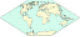在现代之前发展的投影
- 投影（施工中）
 缩小世界的投影: 墨卡托投影和等距离方位投影
缩小世界的投影: 墨卡托投影和等距离方位投影 一些投影应用
一些投影应用- Web墨卡托投影
- 总结


 将地球改造成奇异行星:
将地球改造成奇异行星:

简单的地图背景知识介绍
原文链接:: Introduction
一个广义横向多锥形投影的渲染
有趣的地图投影
地图投影是从地球表面到平面的系统转换（也称为映射）。因为有一些有趣的或有用的属性特征需要被满足,所以我们设计出了很多不同的投影。例如，最好尽可能保持形状、距离和面积关系。不幸的是，没有也永远不会有完美的投影：每种投影的部分区域都会存在一定的变形。
因此，制图学是一门用于设计和选择最合适的投影的艺术和科学。
我的投影
我一直喜欢世界地图，想知道如何用计算机绘制地图。我花了很多时间推算了将半径、纬度和经度投影到笛卡尔x和y中的公式。当然，我只能绘制经纬网，直到某天我得到了一个公共领域的地理坐标数据库(起初，我的PC-XT电脑花了一个多小时来绘制一张 粗略的地图)。
过了一段时间，我开始设计我的“自己的”投影（实际上我几乎没有翻阅地图参考书目， 所以我都是重新发明轮子）。我最喜欢的设计是一个等面积的平面投影，灵感来自于桑森、 弗拉姆斯蒂德和埃克特的作品。它非常类似于埃克特的V和VI，也类似于瓦格纳的一些投影。 这个投影的数学推导发布在Uma Projeção Cartográfica Equivalente上， 有葡萄牙语PostScript和葡萄牙语PDF版本。
我写了一个简单的应用程序来绘制地图；它有些限制，但很有效（幸运的是，现在运行它只需要几秒，而不是几个小时）。
我的伪埃克特投影
你能在这里学到什么
- 下一章 制图学基础知识和投影选择 中将介绍基本的投影概念，哪些属性对每个地图应用都很重要，地图多样性的原因，如何设计投影，地图是怎么产生变形的，以及如何为世界地图选择一个好的投影。
- 本文不仅仅是一个投影综述，我试图在上下文中呈现制图概念；一些重要的投影会将不可避免的在多个地方被讨论（例如，在解释其数学基础和列出具有相似特征的投影时）。
基本的定义和概念
原文链接:: Basic Definitions and Concepts
地球的形状
由于地图是一种表现形式，因此必须首先确定被表现对象的原始形状。大地测量学是制图学的一个重要分支，研究地球的形状以及它与地球表面特征的关系。
球体, 椭球体和大地水准面
大地水准面 被定义为地球重力场的表面，它与平均海平面大致相同。其方向与重力方向垂直。因为地球的质量并非在各个点均匀分布，因此重力的方向也会相应发生变化，所以大地水准面的形状是不规则的。
椭球体 是通过二维椭圆创建的三维形状。椭圆是扁平化的圆形，具有一个长轴（较长的轴）和一个短轴（较短的轴）。如果旋转椭圆，旋转所形成的形状即为椭球体。
Geoid(大地水准面) 来自希腊语，意思是 "地球形状"，是我们世界形状的常见定义。这种递归的描述是必要的，因为没有简单的几何形状与地球相匹配。
像所有超过一定质量的空间物体一样，地球上的物质聚集成球形，这使重力和势能最小化。
然而，围绕其轴线的快速旋转导致中间（赤道）隆起，两极变平；由此产生的形状被称为球体或扁椭圆体。赤道直径比极地直径长近1/300
平均而言，地表垂直于每一点的引力，这也影响到土地水平。然而，由于不规则的地壳密度和土地分布，质量集中并不均匀。除了旋转隆起，一些研究人员认为，南半球是膨胀的，其极点是凹陷的，而另一半是压缩的，极点是凸起的（由此产生的形状类似于梨子，但平均曲率变形不超过50米）。还有人认为，赤道本身是椭圆的
最后，表面不光滑，使地球形状更加复杂.
这些因素使制图员的工作变得非常复杂，但根据任务的不同，一些不规则的情况可以被忽略。例如，尽管在当地很重要，但在行星尺度上，地形是微不足道的：最高的陆地山峰高出海平面不到9公里，接近地球直径的1/1440；最深的海渊的深度大约是直径的1/1150。
对于覆盖面积非常大的地图，尤其是世界范围内的地图，可以假定地球是完全球形的，因为任何形状上的不精确性都会因为数据和显示分辨率上不可避免的误差而相形见绌。这一假设在本文的大部分内容中都是成立的。相反，对于非常小的地区，地形特征占主导地位，测量可以假设是在一个平面上作业。
基准面
当一个旋转椭球体的形状与地球相近时，基准面用于定义旋转椭球体相对于地心的位置。基准面给出了测量地球表面上位置的参考框架。它定义了经线和纬线的原点及方向。
对于小区域的高精度地图，基本的椭球形状是不能忽略的。大地基准是定义参考椭球的一组参数(包括轴长度和相对于地球真实中心的偏移量)。对于每个测绘区域，可以仔细选择不同的基准，使其与平均海平面最匹配，从而与地形特征最匹配。因此，地图的数据采集涉及测量，或测量参考点的高度和距离作为与特定基准的偏差(这是一项棘手的任务:由于上述不规则性，重力——因此铅锤和杠杆——并不总是对准地球中心)。
区域或国家地图采用了若干标准基准面。国际基准面确实存在，但可能不像本地基准点那样适合任何特定地区。
坐标系统
经纬度

为清晰起见，木质球体去掉了一个八角形；铜质箭头定义了坐标系的起源。白色的 "点 "由两个角度或坐标定位：其纬度和经度。每一个点都有一个直接位于对面的对应点，称为其反点（此处未显示)。
选定的纬线（红色）和经线（蓝色），这里间隔15°，组成一个球形格子。可能的纬线和经线的数量是无限的；应该呈现多少取决于地球仪（或地图)的目的和大小。
虽然地球是一个三维物体，但当它被认为是球形时，其表面有一个恒定的半径，所以它的任何一点都可以用极地两坐标系统来唯一地识别。
给定一个极轴(地球每天围绕它旋转)，一个将地球分成两半的正交平面(即赤道平面)和其上的一个任意参考轴，任何表面点确定一个纬度，即从地球中心向赤道平面测量的最小角度，以及一个经度，即从任意轴到赤道上由纬度确定的点的投影的最小角度。
方里网是由行星表面的坐标线组成的球形网格，包括法线上的圆，即垂直于南北轴的圆，称为纬线，以及以该轴为弦的半圆弧，称为经线。顾名思义，没有一条纬线是相互交叉的，而所有经线都在地理极点相遇。每条纬线与每条经线相交的角度为90°。这一特性和其他特性有助于评估地图变形。
纬线和经线的集合是无限的，但在一个地图中当然只能包括一个子集。一个点的纬度和经度，通常都以度为单位，分别定义了纬线和经线的交叉点。因此，纬度指的是与赤道平面的北至南的角度，而经度则表示与参考轴所定义的特定子午线的西至东的角度。纬度通常从南纬90°到北纬90°，而经度则从西经180°到东经180°。
纬线属性
地球轨道的截面示意图。AT是轴倾角，大约23.5°。
作为一个自然参照物，最长的纬线将地球分为两个相等的半球，即北方和南方；因此它被称为赤道。其他四条重要的纬线是由天文学上的限制所确定的。地理上的南北轴线与地球围绕太阳的轨道平面相比，实际倾斜度略小于23.5°。这就说明了一年中不同的季节和不同的昼夜时间长度。
每年12月21日左右，太阳光垂直落在南纬23.5°附近的平行线上。那是南半球最长的一天（注意它的大部分都暴露在阳光下，所以那一天被称为南半球的夏至），但却是北半球最短的一天（因此是冬至）；不仅是较短的日照时间，而且太阳光线的入射角较浅，这也是赤道以北温度较低的原因。
在6月21日附近，一个类似的现象也会沿着与北纬相对的平行线发生。根据定义，这两条平行线环绕着热带地区；它们是以太阳在这些日期所在的黄道星座命名的，即南回归线（南）和北回归线（北）。在南回归线以南的地区，太阳在中午时分似乎总是在观察者的北方运行；在同一时刻，在北回归线以北的地方，太阳总是在观察者的南方运行，而在热带地区，太阳有时在南方，有时在北方，取决于季节。
从90°中减去轴向倾斜，我们得到了北极圈（约66.5°N）和南极圈（约66.5°S）的纬度。12月21日前后，太阳在南极圈内没有一整天的时间落下。往南走，我们会得到更长的连续日照时间，在极地可达6个月。在南极洲的冬季有相应的长夜。当然，同样的情况也发生在北纬度地区，有六个月的偏移。
同一平行线上的各点遭受类似的太阳照射率，因此容易出现类似的气候（不考虑其他因素，如海拔、风/海况和地形）。
一个点的纬度可以从中午时分太阳在地平线上的角度推断出来，这时太阳在天空中显得最高，垂直的木桩投射出的阴影最短。水手们使用六分仪等仪器来测量纬度。

从极点到赤道，各点之间的东西距离以一分钟的太阳时相隔。在每个极点，人们只需转身就能体验到一天中的每一刻。
经线属性
同一经线上的所有点都有相同的太阳时间或当地时间。由于一年中不同的日长，应用校正公式将其转换为当地平均时间。为了方便统一每个区域的当地时间(1海里，约1853米，相当于沿赤道0.1 '的角度，或4秒的时间差)，世界被分成24个时区，每个15°宽。在日常生活中，一个时区内的每个点都被认为具有相同的标准时间(实际上，一些国家仍然使用太阳时)。在实践中，时间跳跃的边界很少跟随经纬网，一般以行政界限界定,(通常在国家或地区的边界线)以方便地保持相关地方的同步。
与赤道不同的是，没有一个容易定义的主经线或 "主 "经线，主要是通过政治共识，于1884年在英国伦敦附近的格林威治皇家天文台固定下来。这种选择的唯一明显优势是将对向子午线--在许多世界地图的左、右边缘附近--远离大多数人居住的地区。这条相反的子午线是国际日期线的基点，它将世界的一半分在两个不同的日子。同样，这条线也有些不规则，以便将国家领土，主要是太平洋岛屿，保持在一个时区。
与寻找一个点的纬度相比，获得经度更加复杂，通常是比较参考子午线上的中午和所讨论的点之间的时间间隔。
地图、地球仪和投影
“投影”意味着将特征从地球转移到合适的表面，如切平面、切圆柱或截断圆锥上。更靠近表面的区域通常会更好地呈现出来。

从椭球体或球体（左）到平面贴图（右)。中间是一个参考表面,仅用于阐释实际构造过程和可视化显示，深灰色的球到平面的转换路径展示了投影会不可避免地会导致变形。

橘子皮提供了地图中变形的经典演示：要将其展开为平面, 必须进行撕开,压平和拉伸。
任何地理学研究都需要简化地球模型，比如地球仪或地图。两者都不完美：地球仪实用性差，平面地图永远少不了误差和变形，因此选择或创建一张好地图涉及到有趣的选择和权衡。
什么是投影
地图投影是将球面或者椭球面向投影面(大部分时候是平面)转换(数学上称为映射)的过程。虽然现在有许多投影，但只有少部分投影目前还在广泛使用。有些投影曾经在历史上很重要，但被更好的选择所取代，有些只在非常特殊的情况下有用，而有些则只是设计者好奇心的产物。
我们经常能看到概念上的辅助表面,比如圆锥体,圆柱体,椭球面或者圆环面,然后球体上的数据(通常是透视构造)转移到辅助面上,然后展开辅助面得到投影,许多投影被归类为圆柱/圆锥投影,但是大部分投影的命名只是一个类比,或者用于定义的,因为它们实际上并不是基于一个中间的辅助投影面设计的,相反,是投影得到的结果可以贴到辅助面上(译注:部分投影是直接用数学手段计算出来的,并不是直接映射到辅助面上再展开的).
无论投影过程多么复杂，原始表面的特征永远不能完美地转换为平面图：球体映射到平面上总会存在或大或小的变形.变形即角度/形状/距离/面积与真实球面的差异.
每个地图投影都有一个特征的变形模式。制图过程的一个重要部分是理解变形，并选择投影、映射区域和坐标原点的最佳组合，为每项工作将变形减到最小。
圆锥体和圆柱体是高斯曲率为零的可展开曲面（简而言之，在曲面上的每一个点都至少有一条完全包含在曲面中的直线经过）。因此，虽然当将一个球体映射到圆锥体或圆柱体上时，总是会发生失真，但它们在平面上的重新投影（“展开”）不会产生进一步的错误。
不可避免的变形
一个球体（加上极轴）的两个准正交图，分为八个等部分，被四张相同比例尺的地图包围，从右上角顺时针依次是：方位等距离投影，兰伯特投影，莫勒的等面积四瓣星状投影(Maurer's equal-area star with four lobes), 温克尔三重投影。

上面的几个投影描绘了相同的球形数据如何以不同的方式被拉伸、压缩、扭曲变形。
- 方位等距离投影只关注保持靠近中心极点部分的方位和距离，但外半球被大大拉伸了：它的极轴变成了一个圆点。
- 兰伯特投影的两个极点变成了线,但它覆盖了与原来的球体相同的区域,而且八块区域的形状完全一致相等。
- 星状投影比较特殊,具有不相等的八瓣和明显的连续形变；然而它的八瓣是等面积的。
- 在温克尔三重投影中，八块区域有不同的形状，面积改变，极点也是线性的，但整体上变形较小。总而言之,正交视图和地图也只能显示一部分的地球,
所有的投影都有变形,没有投影能适合所有情况,如果投影面是斜切的话,八块区域将会更加奇怪
坐标原点的选择

表格中展示了三种（正轴、横轴和斜轴)投影面应用于四种(方位等积、高尔立体、亚尔勃斯等积圆锥和拉格朗日)投影，蓝色表示切投影面(只给出了无限多个可能的投影面中的几个）。一些投影，如高尔立体投影，实际上可以通过透视几何得出；然而，对大多数投影来说，投影面只是说明性的：地图可以展示到一个投影面上，但不是从投影面计算出来的。
一些投影群的独特方里网（例如方位投影和圆锥投影中的径向对称子午线，圆柱形图中的矩形网格）是通过指定的投影面来实现的。尽管有一个常见的误解，但这种分类并不是排他性的：大多数投影既不涉及圆锥体，也不涉及圆柱体，但也不是方位。对已完成的地图的微旋转，比如把它侧向或倒过来，投影面和投影都将保持不变。另一方面，修改投影面既不影响所表示的区域，也不影响整个地图的形状。
投影面
译注:投影面又称“地图平面”。地 图投影中,地球椭球体或球体部分表面的承影平面。投影面都是可展平的面,分为平面、圆锥面、圆柱面。以平面为投影面进行投影的,称方位投影;以圆锥面为投影面投影的,称圆锥投影;以圆柱面为投影面投影的,称圆柱投影。
投影的另一个关键特征是投影面相对于球面的方向。
一个特定的投影可以使用多个投影面，大致由经纬网和最靠近概念投影面的球体区域定义，通常是世界地图的中心(因为变形和裁剪,不一定是实际的中心)
- 极地的地图将南北轴与投影系统的对齐，因此当其中一个极点必须位于地图的中心时很有用；
- 赤道地图以赤道为中心，它横跨地图的一个主轴线(主轴是水平的)；
- 斜轴地图既没有极轴，也没有与投影系统对齐的赤道平面。
- 使用正轴投影面时:
- 投影中最“自然”的投影面，称为法线、传统、直接或正则，通常由几何约束决定;通过最简单的计算，生成经纬网格(方里网)。
- 方位投影和圆锥投影经常用平行极地的投影面
- 圆柱形和伪环柱投影经常用赤道面；
- 方位投影和圆锥投影的经纬网只有直线和圆弧；
- 一般的圆柱投影经纬网都是直线
- 横轴投影面是通过将极轴旋转90°而产生的：如果法面在极点，横轴投影面则以赤道的某个地方为中心；如果法面与赤道对齐，横轴则与子午线对齐，以此类推。
- 投影中最“自然”的投影面，称为法线、传统、直接或正则，通常由几何约束决定;通过最简单的计算，生成经纬网格(方里网)。
- 对于正轴和横轴投影，唯一剩下的选择是，绕着极轴将地球旋转多少旋转，以确定地图的中心子午线。对于斜轴,因为有两个旋转角度，有无限的选择。
一些作者对投影面有不同的定义：认为投影面是定义投影曲面与地球相切还是相割的（这当然是更狭义的含义，因为许多投影不是通过辅助投影曲面定义的）。还有一些人视情况而定,甚至使用投影面来区分为投影是基于椭球体还是简单球体设计的
理论上，特别是假设地球是简单球体的时候，任何投影可以用任何投影面：但是，平行/子午线系统是一种可能起源于任何地方的惯例，尽管很难想象其他的投影面比两极投影面更有用。然而，许多投影几乎总是在用特定的投影面：
距离或者变形属性不是特别有用。例如许多研究，如温度、疾病流行率和生物多样性，取决于气候，因此大致取决于纬度；对于恒定平行间距的投影，在赤道方面，纬度直接转换为垂直距离，简化了比较
很多经纬网由简单曲线组成的投影,最初是由几何构造定义的。因为这些投影的投影面非常复杂,在计算机出现之前,没有办法简单的绘制出来（事实上，地图制图是研究像快速计算对数这些数学方法的一个重要动机）
尽管斜轴投影面常常是有用的，但一般来说，斜轴的实际椭球的计算相当复杂，并不是对每种投影都适用。
地图制作者的选择
综上所述，任何想要创建比简笔画更好的地图的人都必须面对一系列的决定，例如：
- 谁是地图的受众，地图的目的是什么？它有一个主题吗？
- 地图的面积有多大？像一个小镇，还是整个星球？适当的比例尺是什么？
- 有哪些数据源可用？
- 使用什么地球模型？椭球还是简单球形？如果是椭球，哪个标准是最好的？
- 根据地图的受众、主题和目的，哪些属性必须被保存、强调或隐藏？
- 哪种投影最合适？它是否有细节需要调整，比如标准的平行线，还是中央子午线？
- 是否需要修改投影面，例如使地图是斜轴投影面，会改善精度吗？
- 需要做进一步修改么，比如中断地图，有帮助吗？裁切范围、进行地图综合或重新选择地图中心怎么样？
并不是每个选择都是完全独立的。例如：
- 地图的面积和比例大致呈反相关
- 等值线图（表示彩色或图案区域的关系）和其他表示密度的主题地图应使用等面积的投影
- 一些投影只用于椭球体模型，而许多只能用于球形模型
- 有些投影的修改投影面后没有什么意义,或者难以计算
因此，地图投影的研究虽然只是制图工作的一个很小部分，但非常重要
地图属性
原文链接:: Useful Map Properties
没有某种地图投影能适应所有任务。在选择投影之前，我们必须仔细权衡利弊，以及它们如何影响预期地图的目的。本节中将概述地图的有用属性，并提到了如何使用或滥用投影。
对于地图，最重要的精度参数主要如下：
- 可以准确测量距离吗？
- 获得两点之间的最短路径容易么？
- 保留了方向吗？
- 保留了形状吗？
- 保留了面积比例吗？
- 哪些区域的变形程度最大，哪种变形程度最严重？
地球仪
只有地球仪能为任何点和区域提供上述属性的准确描述。由于制作地球仪只是一个缩小尺寸的问题(不涉及投影)，每个表面特征都可以精确复制，只受实际尺寸的限制，没有形状或距离比的损失。另一个好处是，地球仪是一个真正的三维物体，其表面可以浮雕，以呈现主要的地形特征。但是地球仪也有很多缺点，比如:
- 体大,笨重易碎，不易运输和储存；
- 成本高，特别是大尺寸的地球仪，不适合显示细节；
- 不直观，测量或选择方向很麻烦；
- 一次只能显示一个半球；
- 不能通过印刷或电子媒体广泛复制(译注:现在网络可视化技术在网上显示的三维地球,有些也是通过投影实现的)
和真实的地球一样，这个地球仪的地轴倾斜了23°27'30″。
地图
因为以上原因,尽管平面地图有缺陷，但通常比地球仪更为重要和有用。 特别要注意，没有平面地图可以在每个点上同时保持形状和面积属性。然而，一个相当小的球形图斑可以用一个具有可接受变形的平面来近似。在大多数投影中，至少有一个特定的区域——通常是地图的中心——变形很小或者没有。如果所表示的区域足够小（并且在必要时在倾斜地图中进行适当平移），则选择投影可能并不重要。
另一方面,虽然平面地图无法通过投影准确的描绘整个地球,但是通过有意进行变形和处理,可以将地球仪中不直观的要素属性一目了然的展现出来.而且变形夸张也是一种实用强大的可视化工具,例如使用 面积图 制图时,填色和点的位置,不仅取决于其地理位置,还取决于此地的区域属性,例如一个县的人口,或者一个国家的经济情况.

1934年欧文瑞斯绘制的美国国富图
1934年， 欧文·瑞斯 绘制的美国国富图,是比较原始的面积图制图,使用矩形表示目标,面积与目标属性成正比,与真实地理形状毫无关系.高产的 沃尔多·托布勒 (译注:托布勒第一地理定律发明者)发展了现代制图概念，使用可识别的变形形状表示属性要素；制图所涉及的海量重复计算使电子计算机成为不可或缺的工具。
投影本质上没有好坏之分，适用于特定问题的投影如果应用于其他地方，很可能是无用的或有误导性的。
主要属性和次要属性
对于任何投影来说,即使它们的方里网和地理要素形状看起来完全不同,它们的主要属性:距离,面积,角度的变形程度基本上独立于比例尺,朝向,投影区域的变化(投影区域与中央子午线的选择以及任何最终的投影后旋转和裁剪密切相关)
有时，出于历史或方便的原因，某些投影有特定的投影名称。例如，高斯克吕格投影是一种横轴椭圆柱墨卡托投影；Briesemeister 投影和 Nordic 投影是斜轴的汉默尔投影( Briesemeister 投影将宽高比改为了7:4)；兰伯特等面积圆柱投影有很多的调整版本。还有很多中断、平均和复合设计的投影都如此命名。
修改次要地图属性
以下展示了一些使用墨卡托投影的地图,显示了基本投影属性如何不受次要特征的变化，如比例尺、朝向和映射区域的选择的影响。在所有的墨卡托地图中，各相邻纬线间隔由赤道向两极增大。一点上任何方向的长度比均相等，即没有角度变形，而面积变形显著，随远离基准纬线而增大；
裁剪 墨卡托投影经常在世界地图中使用（也是最常被滥用的）。任何墨卡托地图都必须裁剪顶部和底部,因为一张完整的墨卡托地图将是无限高的。图4 5 6中的裁剪、横向和斜向是这种投影更适合的用途。

中央经线 基于地图的主题,变换中央经线是一个常见的小修改。这里的变化是用来避免断开太平洋的。变形模式仍然与上述相同，在顶部和底部的区域大幅增大。
与传统不同，这张地图半开玩笑地将澳大利亚和欧洲南部的国家显示“在世界之巅”。这张地图中，南极洲被裁剪了大半。当然，无论是投影还是朝向都与上述地图一致。墨卡托的投影会将高纬度的国家放大，甚至有时候会“降低”赤道来扩大高纬度的国家面积，但一张没裁剪的的墨卡托地图在在赤道两边是完全对称的,南极洲在地图上的大小由地图作者决定

缩放 这张地图放大了100%，裁剪地图是常见的方法，不会改变投影属性。

仍然是一张墨卡托图，但横向放大了25%，旋转了90°。方里网似乎不同，可以看到两极，但变形模式仍然存在：距离是垂直不变的，而不是水平不变的，即距离左右变形，而不是上下变形。中央子午线代替了赤道，以恒定的尺度完美地表示，而非洲，变形太大，似乎一分为两半，几乎无法辨认。

这张斜的墨卡托地图（扩大了25%并旋转）更好的覆盖了美洲,降低中心的变形程度。赤道不再是直线了。
变形的指标-方里网
对于正轴投影的地图,方里网可以快速的可视化检查变形,例如如果方里网沿坐标轴均匀分割(如,每十度一格),它的方里网表示为:
- 沿着任何子午线，地图上平行线之间的距离应该是恒定的
- 沿着任何一个纬线圈，子午线之间的距离应该是恒定的；对于不同的纬线圈，应该向两极方向降为零
- 因此，任何两个平行的两个网格“单元格”都应该包围相同的区域
- 赤道和所有子午线应该是直线，因为它们不会改变地球表面的方向
- 任何一条子午线都应该以直角交叉所有的纬线圈
同样，对于任何特定的投影，违反任何或所有这些属性并不一定会使它设计不良或无用；相反，它建议（并限制）了它适合的应用范围，以及对于每个应用，地图上失真显著的区域。
下面两图是用正射法（表示原始的地球）和范德格林格恩III投影的经纬网,可以看到范德格林特的投影违反了所有上述五条特性

- 紫色线在两极附近非常拉伸；绿线远离垂直轴（平行之间的垂直间距有欺骗性）
- 红线也稍微靠近地图边缘
- 蓝色的细胞在边缘附近也被增大，这在高纬度地区更明显。
- 在所有的子午线中，只有中心的仍然是直的。
- 平行线和子午线只在赤道和中子午线成直角；在其他地方，有剪切，围绕垂直轴对称：角度在中心子午线东西的相反方向被压缩
距离和比例尺
原文链接:: Useful Map Properties: Distances and Scale
根据任务选择投影
任何实用的地图，无论是球形的还是平面的，都会将地球缩小到可用的大小。这种缩小的比例，可以用图形或数字来表示。
数字比例尺 通常是一个比例；例如，在一张1：10万比例的地图上，由1个单位分隔的两个点可以代表实际上相距10万单位的两个城市；地图上的1厘米意味着地球上的1000米。比例尺放大十倍，1：10000，即地图上的1英寸相当于地球上的10000英寸，以此类推。因此，如果在不同的地图中呈现同一区域，较小比例尺的版本更便携，但可能不那么精确和详细。
图形比例尺 至少是一个标有绝对距离的小“标尺”，并直接叠加在地图上。虽然距离计算需要两次测量（一个测量标尺，另一个测量地图本身），但它有一个重要的优势：地图可以缩放后不需要修改图形比例尺，而数字比例尺必须在缩放后重新计算。图形比例尺对于电子设备，如计算机屏幕（其分辨率/物理尺寸比很少能正确校准)和投影(其中显示的尺寸取决于到投影屏幕的距离）特别有用。
无论是图形或数字比例尺，只有在地球仪上比例才能直接应用于其表面上的任意一对点。在平面地图上的比例实际上并不恒定，会随着方向和位置而变化。而且它可能是非线性变化的：地图上一条线的两段的长度比对于地球上两段实际距离的比例是不相同的。最后，这是两点在球面上最短距离，在平面地图上的很少能用直线来表示，而且测量任意曲线的长度一般也不是一个简单的过程。
因此,地图的范围决定了变形大小(范围越大,长度变形越大),在不确定投影特性的情况下,数字和图形比例尺都不可靠,它们可能都有误导性
一些方位角、圆柱形、圆锥形和伪圆柱投影的外边缘提供了一些显著的长度变形的例子，因为地球的极点在地图上投影成了线；一般来说，任何完整世界地图的边缘都会有长度变形，因为点在地图边缘被投影了两次。
 <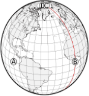
<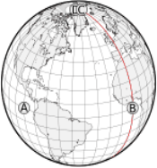在左边的圆柱等距图上，点A似乎离C比离b远41%。实际上，红色子午线上的每个点离A都一样远。D和C之间的距离为零，因为它们都位于一个极点上。右边的正投影图从多个角度更好地展示了这些事实。
标准线和等距离投影
标准线 地图上的线段，无论是否是直线，没有长度变形（长度与地球上相应的线成正比）即称为标准线。
等距离投影 具有定义明确、显著的标准线集的地图投影即被称等距离投影(译注:沿特定方向的距离，投影之后保持不变)。一些众所周知的例子有:
- 等距圆柱投影:正轴投影时，所有的子午线和一或两条纬线都是标准线(切或者割圆柱)
- 等距方位投影:正轴投影时，所有的子午线都是标准线
- 等距圆锥投影:正轴投影时，所有的子午线和一或两条纬线都是标准线(切或者割圆锥)
一个常见的错误认知是假设在地图上绘制的圆表示与地球上相应的形状和相同的距离范围。这只有在从圆心辐射出来的所有直线都是标准线时才是对的。
一些投影的标准线（按比例1：2：3标记）

正弦曲线投影:在一张赤道Sanson-Flamsteed（或sinusoidal）地图上，所有的纬线都是标准线：如果A段是B段长度e的两倍，地球上相应的线遵循相同的比例。虽然纬线之间的垂直直线距离是真实的尺度，但沿子午线的位置不是，除了中央位置。
这张正轴等距离圆柱投影跟正弦曲线投影几乎相反：只有子午线和赤道保持一个恒定的尺度。由于地图上所有的纬线处都等长，水平比例尺在顶部和底部迅速增大，在两极达到无穷大。
标准线与投影面绑定，而不是与投影的特征绑定。图中的横轴等距圆柱形投影，也被称为卡西尼投影，标准线保持不变，但一般不与子午线重合

方位等距投影会保留通过中心点的任何线段的距离。 过极点的线是子午线。

标准线不一定是直的。沃纳热诚投影中的是同心圆弧。在正常方面，它们是以极点为中心的，中心子午线也是标准线。
并不是所有的直线都是标准线。范德格林特III投影中的纬线是非线性变形：中心附近的子午线比边界附近的子午线稍近一些
测地线
原文链接:: Useful Map Properties: the Geodesic
两点之间最短的路径是什么？
包含地球中心和两个表面点的平面（这里，绿色箭头指向日本东京；蓝色箭头（巴西坎皮纳斯)将地球分成两个半球，这里是一个一般的垂直透视投影图；平面/球体交点是一个大圆，其中一部分是定义两个曲面点之间最短路径的测地线
圆圈越大，路径越短
假设我们准备计算两个遥远的地方的距离，如坎皮纳斯市（巴西东南部)和东京(日本）之间的行程。假设我们可以乘飞机旅行，简化条件，比如不考虑恶劣的天气和受限制的空域。显然，我们想通过选择最短的路线来减少时间和成本，这在平面上永远是一条简单的直线。这对于评估在海洋、沙漠或其他类似的不适宜居住的地方进行长距离的飞行的风险是很有用的。
那么，我们如何确定我们的道路呢？拿起一把尺子和一张地图，然后画一条线连接我们旅程的终点？没有那么简单，如果我们想要有意义的结果，选择正确的投影是必不可少的。
给定两个点A和B，比如东京和坎皮纳斯，加上地球的中心，一个唯一的平面（除非A和B和圆心是一条线）被定义。这个平面和行星表面的交点是大圆或正交场，也是唯一的，包含A和B；它是最大的，因为它的半径和周长与地球相同；这里我们假设行星是一个完美的球体。由包含行星中心的平面形成的任何表面圆都是一个大圆，没有这样做的任何表面圆都是一个小圆。因此，每个子午线都是一个大圆，而除了赤道以外的所有纬线圈都是小圆
点A和B将它们的大圆分成两个弧，其中一个弧（除反峰A和B外）比另一个弧短。短弧，称为大圆距离、测地线，实际上是A和B之间最短的曲面路径；真正最短的三维路径是地下的，当然以我们目前的技术不可能直接这么走。
测地线和大圆航线 测地线又称大地线或短程线，可以定义为空间中两点的局域最短或最长路径。测地线(Geodesic)的名字来自于对于地球尺寸与形状的大地测量学(Geodesy)。地球上两点间的测地线距离即大圆距离，大圆航线是近似将地球看成正圆计算的测地线。
投影和测地线
因此，理想情况下，我们的地图应该将大圆显示为直线，以便绘制和测量测地线。不幸的是，只有少数投影可以做到这一点，而且通常只有在特殊情况下，这限制了它们的普遍使用。当然，没有地图投影能将任意两点之间的测地线显示为直线。在世界地图中常用的罗宾逊、墨卡托和莫尔维德投影上，大圆被画成复杂的曲线。圆柱投影在挂图中仍然很普遍，尽管它们在水平比例尺特别拉伸的两极附近存在特殊问题。遗憾的是，许多圆柱投影的选择可能是因为它们整齐的矩形形状，而不是任何突出的制图特性。

-
使用罗宾逊投影绘制的地图，红色大圆穿过坎皮纳斯和东京。这条复杂的曲线根本不代表地球表面原来的圆。中央子午线0°.

-
这张莫维德地图是旋转过的（中央子午线是150）°E） 为了移动主要感兴趣的区域，东京和坎皮纳斯之间的较短路径，远离地图边界扭曲较大的地方。即便如此，大圆也远不是圆的。

-
等距圆柱地图上的大圆形状是卫星地面控制室中常见的景象。它也通常出现在动态的桌面日历上，显示地球上被照亮/黑暗的地方：由于太阳光线几乎是平行的，所以昼夜边界大约是一个大圆。
方位类投影从选定的中心点(方位角)呈现真实方向，方位角通常与地图的中心重合。特别是所有跨越方位角的大圆都画成了直线。方位立体投影是保圆的，因为球面上的任何圆（每个测地线、纬线和子午线）仍然映射成一个圆；穿过中心点映射到无限直径圆的测地线，即直线。可惜它一次只能显示一个半球。另一个非常重要的方位投影，著名的日晷投影地图成直线所有大圆，即使那些没有通过中心点，也只能呈现不到一个半球。它是直接测定大圆的最佳工具，但由于远离方位角的极端形状和比例放大，它的实用性受到限制。方位等距投影可以覆盖整个世界，并呈现从中心到任何点的真实方向和距离，同时在地图边缘附近保持较小的变形。

-
方位立体投影：圆，包括大圆，投影依然是圆；通过投影中心的圆变成直线
-
日晷地图：即使没有通过中心，大圆是也直的，但地图边缘变形非常大

-
方位等距投影的地图可以展示整个世界
投影变形和不熟悉的形状使得人们很难意识到地图上的大圆和它们在球面上是一样直的。方位正交投影清楚地显示了从太空的有利位置看到的地球的弧度。这很好地反映了通过在地球仪上应用一条绷紧的线来寻找测地线的实用方法。
-
同一个大圆在三个不同的斜方位正交投影中不是直的，因为它不接触中心点。
-
如果你想从坎皮纳斯到东京，实际的商业航班通常会从附近的圣保罗起飞，然后在秘鲁的利马、旧金山或洛杉矶停留。简单地在等距的圆柱形地图上用一条绿直线连接坎皮纳斯和东京，可能会得出一个幼稚的结论，即夏威夷是一个比加州更合乎逻辑的选择。


方向
原文链接:: Useful Map Properties: Directions
一架飞机在巴西坎皮纳斯上空飞行，它的航向H被解读为与当地子午线M的夹角，即罗盘指针指向的南北向线(曾补偿过磁偏角):这里是292.5°，也称为西北偏西。在没有侧风的情况下，航向与行驶方向或方位一致。
什么是方向？
当一个人计划从地球上的一个点移动到另一个远到看不见的地方，或者在海上或云上没有标记路径的地方，就会出现一些非常相关的问题:
- 为了建立一条 "直线 "路线，初始航向，即转弯的方向是什么？
- 如果不纠正路线，沿途将访问哪些地点？
地面上的方向是以方位来表示的，也就是说，从一条参考线出发的角度。在地球上，这条线是通过当前位置的子午线，方位通常以度为单位，从0°向北，顺时针增加到360°再向北--在地球上这个角度通常被称为方位角。当前子午线的方向可以从一个普通的罗盘上得到，它的指针总是与南北磁力方向一致，但必须考虑到磁偏角，即磁北与真正的地理北方的偏差。磁偏角在世界各地并不统一，而且随着时间的推移而缓慢变化（在几百万年中，磁 "极 "甚至多次交换半球），因此，海图必须定期更新，并加上偏角的参考校正标记。陀螺罗盘和天文罗盘不受磁偏角影响；但是，陀螺罗盘依赖电源来保持其轮子的旋转，而操作天文罗盘则需要一个精确的时钟和最新的星表。
等角航线 如果它的角度相对于当前的每一条子午线保持不变，那么路径就是一条等角航线或恒向线。这个概念可能是根据葡萄牙学者佩德罗·努內斯(或努涅斯)的建议而发明的。1533年，尽管精确的数学细节直到很久以后才被理解。
纬线与所有子午线成直角相交，因此所有平行线在东西方向上都是闭合的等角航线。所有经线在南北方向都明显是微不足道的斜交。对于所有其他方向，斜向螺旋是一种开放的(即有两个不同的末端)三维曲线，称为球形螺旋或斜向螺旋:每一端在无数次越来越紧的旋转后到达极点。

经过巴西坎皮纳斯的方位为292.5°的等角航线，在半透明斜轴方位正交投影和两半球极地方位立体投影地图上的展示。


将方位改为275°会使路径变长，但终点是一样的。请注意，在多转了一圈之后，仍然可以到达夏威夷的南裙。
不在同一纬线或子午线上的两个点可以由无限多条等角航线连接，但我们几乎总是对最短的、“更陡的”点感兴趣，它穿过不到一半的子午线；其他恒向线绕地球做一个或多个额外的旋转
显然，在一般情况下，等角航线并不是通往两点间的最直接路线。事实上，仅赤道和经线不仅是等角航线，而且是大圆，包含了两点之间最短路径的测地线。另一方面，在没有参考点的情况下，等角航线是最容易遵循的路径：一旦确定了适当的方位，只需保持其正确性--即罗盘的针尖对准同一个方向--就能确保到达目的地。对于水上和空中交通工具来说，现实情况要复杂一些：横风、海浪和水流会导致方位偏离方向，除非得到补偿。
292.5°方位的恒向线，如使用摩尔维德等面积投影的赤道地图所示。每个极点附近的螺旋太靠近地图的边界而看不见。

赤道等距圆柱投影地图上的同一个恒向线。同样，这条曲线从一极到另一极绕着地球转了几次。将这张地图上恒定的平行间距与下面墨卡托投影的拉伸进行比较，这将使恒向线变直。
投影和等角航线
投影如何决定等角航线在平面地图上的绘制方式？方位正交投影清楚地显示了球形螺旋的形状，但它对于测量方位是无用的，除非起点位于投影的中心。在方位立体地图的极面上，等角航线显示为对数螺线；这是投影一致性的直接结果:对数螺线是一条平面曲线，它以相同的角度与所有半径相交；它也是自相似的，无论放大多少看都是一样的。
大多数其他投影不太适合呈现或计算等角航线，等角航线被映射到复杂的曲线。唯一的例外是格哈德斯·墨卡托最著名的共形投影:在赤道方面，所有的经线都是垂直线，所有的纬线都是直线。因此，为了确定两个点之间的方位，在赤道墨卡托图上连接它们并从垂直方向测量其角度或斜率就足够了:直尺和量角器就足够了。
墨卡托的设计和另一种常见的圆柱投影，等距圆柱投影相比如何？在后一种情况下，平行线间隔相等，等角航线向赤道弯曲。墨卡托逐渐将纬线隔开，与纬度的三角割线成比例；当时还没有精确的数学数据，所以墨卡托可能采用了几何近似法。不幸的是，由于割线在极点是无限的，这些位于无穷远处，不能包含在真实的地图中:这样做，同时保持正确的角度将在两点连接子午线，这在圆柱形地图中是不可能的。
赤道墨卡托地图中的同一个loxodrome显示为一系列平行的直线。如果地图没有在北纬85度和南纬85度之间任意剪裁，这种理发师柱图案将在上下无限延伸；大多数墨卡托地图的纬度范围要窄得多。

横轴墨卡托图可以显示两极，但相反，必须从远离中央子午线的地方截取。完全相同的等角航线保留其与每个子午线的角度；然而，由于经纬网是弯曲的，地图不适合直接评估方向。
事实上，在更高的纬度上，平行间距被夸大了，以至于赤道墨卡托地图经常被裁剪成南北70-80度。这与航海并不太相关(在极地附近，磁偏角无论如何都太重要了，所以在这些相对较小的区域，使用了其他工具)，墨卡托的投影忠实地为路线规划者服务了几个世纪。
另一个值得注意的投影，即由K.Siemon和W.Tobler独立设计的Loximuthal 投影，将所有相交于中央子午线上一个特殊点的等角航线显示为比例尺和方向不变的直线。遗憾的是，与方位等距不同，与通用赤道墨卡托不同，Loximuthal 投影地图必须为每个兴趣点量身定做。
两张洛Loximuthal 地图，中央子午线在坎皮纳斯(上)和挪威特罗姆瑟(下)附近与参考平行线相交。相同的292.5 等角航线连接这两个位置，但仅在通过交叉点的部分是直的，用红色圆圈表示均匀的比例，间隔10度。
形状
原文链接:: Useful Map Properties: Shapes
形状被保留了吗？
共形（或正形）投影地图局部保留了角度。因此，地图中的任何两条线都与地球上相应的原线有相同的角度；特别是，投影方里网总是以直角交叉（一个必要但不充分的条件）。 另外，在任何特定点上，比例尺在所有方向上都是一样的。但这并不意味着整个地图的形状总是被保留下来，因为任何保形地图都包括某个地方的比例尺失真（也就是说，比例尺不是到处都一样的）。任何方位立体投影或墨卡托地图都是保形的。
等角航线与 测地线

墨卡托地图:蓝色为等角航线；红色为测地线
墨卡托地图上的一条连接坎皮纳斯和韩国首尔的直线是一条从任何一条子午线以大约79 ° 39’的恒定角度绘制的等角航线。从坎皮纳斯起飞的飞机在整个飞行过程中，沿着这个固定的方向(不考虑诸如交通航线、风向偏差、天气、国家空域和燃料范围等因素，实际的惯常航线是向西飞行，但实际上是相似的)很容易在首尔着陆。
然而，就距离而言，这条简单的路线并不是最经济的选择，正如测地线所示。这两条路几乎只在短路线上重合。尽管等角航线在墨卡托地图上要短得多，但方位等距投影地图显示了一个相反的情况，即使测地线没有映射到一条直线(因为它没有截取投影中心),也比等角航线要短。
因此我们需要权衡：
- 跟随测地线将意味着方向不断变化（这些变化是当前罗盘方位的变化，并且仅是显而易见的：在球体上，轨迹尽可能笔直）
- 沿着等角航线会浪费时间和燃料，
导航员可以遵循以下混合规则：
- 在方位等距投影地图上或日晷投影地图上遵循测地线
- 将测地线打断成线段
- 将每个线段的端点绘制到墨卡托地图上
- 使用量角器，读取每段的方位
- 按照相应的恒定方位对每段进行单独导航。
同一个大圆(这次覆盖360)和一个“拉格朗日”共形映射中的等角航线
在地球仪和地图之间移动圆圈
假设一组同心圆，半径以巴西坎皮纳斯为中心，1500km步长递增。这些是地球上真正的圆圈，可以展示无线电波、飞机或导弹的理论范围；它们在这里用蓝色表示，在本表的所有地图中是相同的。在每对蓝色形状的地图中，上面边的是简单的承影面，而下面的对应通常是以坎皮纳斯为中心的倾斜投影面。另一方面，上面地图的橙色区域上直接画成了圆圈；它们在地球仪上的真实形状显示在下面(它们只是每对地图上的相同曲线)。在地球仪和地图上，以下只有一对投影和投影面是圆的大小和形状相同的


像所有的方位投影一样，方位等距投影保留了以地图投影中心为中心的任何圆的形状，但不一定保留了其他圆的形状(上方) ; 然而，对于那些中心与地图重合的投影，比例尺也保留了下来: 在右边的地图上，注意半径是线性间隔的。给定一个恰当的承影面，这种投影是在平面地图上以图形方式寻找范围的唯一正确工具。
墨卡托映射是等角的，因此在局部保持形状，而不是全局保持形状。地图顶部和底部的比例变化很快，尤其是垂直变化。

同样是等角的方位立体投影保持了所有圆的形状，即使不在地图中心(左)。尽管如此，它们的比例尺并没有被保留下来: 它们不是线性增长的，而且如上图所示，也许令人惊讶的，甚至并不是同心的。
 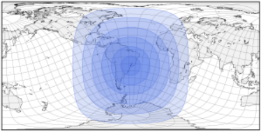
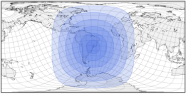PlateCarrée是一个非常简单的设计，是等距圆柱投影的特例。 赤道和所有子午线上的比例尺都是相同的（从赤道方面衡量）。 因此，仅右侧的“圆圈”的宽度和高度相同。


由于所有圆柱投影都会放大地图顶部和底部的水平比例，因此，如果在PlateCarrée地图上用圆规直接绘制圆，它们在地球上的正确形状就会被扭曲，如方位角等距对应图所示。

兰伯特等面积圆柱投影的一个特殊情况，加尔氏正投影(也称为加尔-彼得斯投影或“彼得斯投影”)保留了面积，但严重扭曲了形状，垂直比例变化非常不均匀。


地球上和地图上的圆圈
一个值得研究的形状是圆周(线)，即与中心有固定距离的点的集合，以及圆(面)，即它所包围的点的集合。由于比例尺和形状都经常被扭曲，那么在地球仪上画的圆是如何忠实地转化为地图的？或者反过来说，如果用一副罗盘在地图上画一个圆，它在地球上究竟代表哪种形状？这个圆圈可以代表一个无线电台的范围，或一个车辆的自主权。在测距时，正确使用地图投影可能意味着成功的旅行和求救电话之间的区别。
面积
原文链接:: Useful Map Properties: Areas
是否保留了面积比？
除了导航目的之外，对于大多数具有普遍意义的地图来说，面积相等是最基本的属性。地图是一种一目了然地传达信息的工具，比表格或数字列表更快、更简洁，视觉比较通常需要真实的面积比。重要应用包括
- 科学地公布地理分布情况，如福利水平、污染/毁林、作物产量、温室变暖等等
- 教育地图集和图表，以及新闻信息
经典的比较:墨卡托 ⨉ 莫尔维德
 <
< 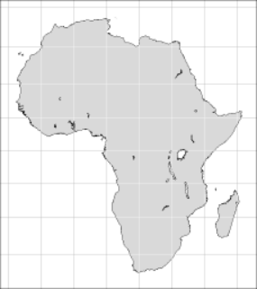
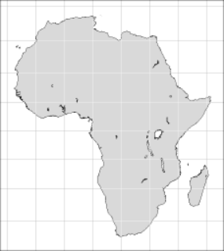
后一个问题非常令人担忧，因为即便是学校和大学的教科书，更不用说报纸和电视节目，在选择地图投影时往往很粗心。这是不幸的，因为地图会产生强大而持久的视觉图像；错误呈现的地图可能会永久扭曲一个人的世界观（然而，这种论点也被用作误导和短视的宣传）。
作为一个经典的例子，墨卡托投影，在适当的上下文中是一个非常强大的工具，但遗憾的是经常被用于挂图和流行的插图，在这些地方，它的保形性是无用的，面积比具有误导性。在正轴墨卡托投影中，表面拉伸向极点快速但连续地增加到无穷大。甚至格陵兰岛的北半部看起来也比南半部宽得多——这种投影保留了形状，但仅限于局部。相比之下，Mollweide 的椭圆投影显示了地图所有部分之间的正确大小比例。
等面积（也叫等值）投影保留了面积关系；换句话说，给定地球上任何两个区域A和B，以及等面积地图上的相应区域A'和B'，其表面比率A/A'和B/B'是相同的（A和B不需要有相同的形状；形状A和A'可能会不同）。等面积投影不一定是等距的；事实上，为了保持面积，在任何一点上，给定方向上的比例变形必须与正交方向上的比例变形成反比。
例如，在正轴 Mollweide 投影中，沿赤道的水平尺度有点太低，而垂直方向的水平尺度有点太高:：其净效果是使各大洲有点过于纤细。尽管墨卡托投影使非洲（最大的大陆之一，29,800,000平方公里）和格陵兰岛（最大的岛屿，2,175,600平方公里）的面积明显相似，但等面积投影显示它们的真实面积比--大约13.7 : 1--要清楚得多。
在相同的比例因子下，墨卡托（左）和莫尔韦德（右）地图重新以格陵兰为中心。 第一个的区域仍然被夸大了，但几乎不明显。
然而，生活中很少有免费的东西，制图也不例外。像许多等面积设计一样，莫尔维德投影以裁剪的形式付出了沉重的代价，尤其是在高纬度或远离中央子午线的地方。尽管格陵兰岛在以格林威治子午线为中心的赤道方面没有受到特别的影响，但在倾斜投影面重新调整后，它看起来好得多——而且面积仍然正确。公平地说，一张相当于重新居中的墨卡托地图避免了原始地图的大部分区域拉伸，并为格陵兰岛提供了比摩尔维德版本更好的形状，摩尔维德版本明显沿着投影的中心线拉伸垂直比例。另一个证据是，无论一个投影的优点或缺点是什么，它们的相关性肯定会受到绘制的感兴趣区域的影响。
变形椭圆
原文链接:: Useful Map Properties: Distortion Pattern
评估和测量变形
每张平面地图都包含一些形状、面积或长度的变形；虽然有些区域可能没有变形，但其他区域可能会出现严重错误。在为地图选择合适的投影和方面时，客观地评估哪些区域受到影响以及受影响的程度是至关重要的。
变形椭圆
对地图投影的认真研究通常涉及比较它们如何受到三种主要的失真影响--面积、形状和距离。变形可以通过检查方里网和海岸线的形状进行视觉估计；也可以通过测量所选点集之间的距离来进行评估。然而，定量计算变形的系统方法必须等待 Nicolas A. Tissot 在1878年和1881年发表的极具影响力的论文(一些思想已经在1859年的一部作品中引入)，这些论文展示了他的指标，今天被普遍称为变形椭圆。Tissot 想象了一个以地球表面的某个点为中心的无限小的圆，并考虑了它被一个给定的地图投影所改变后的形状。他证明它是一个完美的椭圆，正好以地图上的相应点为中心。另外:
- 如果在该点上的投影是等角的，那么这个椭圆将保持圆形，尽管几乎可以肯定比原来的大或小，而且可能会旋转
- 如果该点的投影是等面积的，那么椭圆就可能不是一个圆，而是与原来的面积相同。
- 如果在该点上的投影既不是等面积的也不是保形的，那么形状和面积都会变化

正轴墨卡托地图，在北纬85度和南纬85度处进行了剪裁，并附有Tissot的变形椭圆（同样，这里用于说明的超大圆圈实际上是椭圆，略微违反了符合性）。
投影的特征变形模式可以通过Tissot的变形椭圆阵列沿地图有规律地间隔来粗略地可视化。对于一些投影，每个椭圆的角度和长、短半径可以解析计算。在实践中，通常原始圆只是简单地用数字投影并在地图上渲染；为了可见——即使在缩放之后——它们通常必须比无穷小大得多，并且不一定看起来像完美的椭圆。
所有的等面积投影几乎都会有形状变形。例如，Hammer投影，除了正轴投影面，即在赤道和中央子午线的交汇处,都不是圆形的。Mollweide的投影只有在中央子午线与两条标准平行线的交汇处，即北纬40度和南纬40度，才没有形状变形。Eckert Ⅱ 投影也有两条标准平行线；如果用数字投影，在赤道上的角度变形的急剧中断会产生一些特殊形状的变形椭圆。
正轴摩尔维特投影,哈默投影,埃克特Ⅱ投影地图的变形椭圆，由于我软件的限制，变形椭圆可能被渲染成椭圆形，甚至是不规则的形状；理论上的变形椭圆总是椭圆的。
 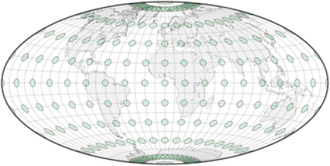
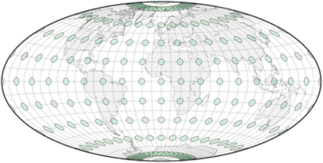
另一方面，在墨卡托的保角投影中，所有的变形椭圆都保持圆形，纬线保持平行，经线是直线，并且总是垂直于每一条平行线。面积没有被保留，且在地图的顶部和底部大大增加：两极的圆将是无限大的（这是可以预料的，因为经线在球体上相互交叉，但在墨卡托地图上从未接触。只有不同经线上的无限大的圆才可能像地球仪上的两极那样全部同心）

斜轴墨卡托地图。与正轴的相比，圆圈移动了，但其相对大小仍只取决于它们与纬线的距离。 另一种等角投影，方位立体图保留了每个圆的形状，自然也包括变形椭圆。 在一个既不保形也不等面积的投影中，如正轴方位投影，变形椭圆既不保留原始形状也不保留面积。
缩放和角度变形
给定地球上的一个圆，Tissot考虑了成对的直径；他证明总有一对直径在圆心和它在地图上的投影上正交（即成直角），它们构成了椭圆的长轴和短轴。此外，还有一对在圆上以直角相交，但在地图上却最大限度地远离直角。这个偏差是该点的最大角度变形，当然，如果那里的投影是共形的，这个偏差就是零。Tissot开发了与投影中任何一点的比例失真（压缩或拉伸）和最大角度变形有关的方程式：为了保形，每一对正交方向的比例必须相同；为了面积等值，它们必须是相互对等的。用他的公式可以计算出任何需要的精度的变形模式，当绘制在地图上时，可以直接显示出主要区域或形状变形的区域。

 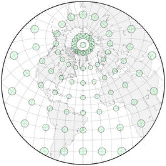
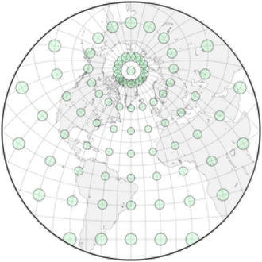一些实例

正轴等距离圆柱投影
变形椭圆在正轴等距圆柱地图上表明:
- 至少在每个圆柱形地图中，水平比例尺总是在极冠中被夸大
- 让纬线和经线在任何地方都垂直不足以获得一致性
最后，变形椭圆可以帮助区分容易混淆的投影，例如以下三个投影，都以圆为界，通常用赤道投影面，经线远离赤道而弯曲，两极附近的面积极度夸张:
- 范德格林顿 I 投影既不是共形的，也不是等积的；两极附近的变形椭圆是裁剪的证据。
- 范德格林顿 Ⅱ 投影经线和纬线以直角相交，因此没有裁剪；另一方面，远离赤道，沿经线的比例明显大于沿纬线的比例，因此地图不是共形的；显然两者都不等同
- 在“拉格朗日”投影的简单情况下，纬线和经线总是以相同的比例正交，圆保持它们的形状:投影是共形的——除了在极点处,(理想的)变形椭圆只是圆的一半。这种投影是典型的共形投影，涉及的比例范围更广:地图的中心部分明显小于其他两个圆形投影


三个以圆为界的投影：范德格林顿I（既不保形也不等面积，与本页其他地图相比缩小了61.5%），范德格林顿II（同上），"拉格朗日"（除极点外保形，缩小了48.2%）。
角度变形
原文链接:: Useful Map Properties: Distortion Pattern
Tissot的方程描述了在两个主要方向上，即沿子午线和沿与之相交的平行线，各点的比例系数如何受到影响。在地球上，这些方向当然是正交的；在投影地图上，转换后的比例系数提供。
- 面积缩放系数，表示尺寸被拉伸或压缩的情况；对于等面积投影，它在任何地方都是1。
- 最大角度变形，表示方向的偏离，对于保角投影来说，它在任何地方都是空的。它被方便地计算为一个从0°到180°的加倍角度。例如，在赤道世界莫尔维德地图中，最高的最大角度变形发生在两极，那里的边界经线正好是水平的，而不是正确的垂直的。
角度变形有一个方向，顺时针或逆时针，尽管在实践中它被省略了，因为绝对大小更相关。确定面积和角度变形对于选择一个投影，以及一旦选择了一个投影，将变形的影响降到最低是非常重要的。
对于一些受约束的投影组，如正常的方位角投影、圆柱投影和圆锥投影，这两种变形几乎可以直接从投影方程中计算出来。在一般情况下，它们必须通过部分微分进行数值计算。无论哪种方式，它们的值都可以用地图上的颜色来表示，直接显示失真较大和较小的地方。
相同比例尺的投影，用颜色表示最大角度变形值


正弦(桑松-弗拉姆斯蒂德)投影地图:面积相等，但只有赤道和中央子午线没有角度变形

莫尔维德投影：正弦波的低变形 "十字架 "被两个椭圆形的 "岛屿 "所取代。

莫尔韦德的投影，斜轴投影面将巴西东南部和北半球的相应区域的失真降到最低。

莫尔维德的投影，打断成四个对称的分瓣。每瓣大小限制了变形范围，代价是距离的不连续性

布罗姆利对莫尔维德投影的重新调整版本：低变形程度的 "岛屿 "向赤道移动、合并并沿赤道扩散

古德分瓣投影（在一个简化的叶状排列中，没有重复区域）。注意在靠近40°N和S的两条边界平行线上的不连续性

Boggs's eumorphic分瓣投影（在简化的分瓣排列中，欧亚大陆没有中断）。扭曲是连续的，因为部分投影是平均的，不是融合的
多面体地图是一种特殊的分瓣情况。在展开的沃特曼多面体上，以面为中心的日晷投影是方位投影的，因此变形模式是径向对称的。
展开的二十面体上的球面投影

二十面体上的Dymaxion投影
埃克特Ⅰ 投影 (既不等积也不共形)，在赤道处有一个明显的方向突变

埃克特II 投影。与其前身的比较表明，正如在制图学中经常发生的那样，增加一个有利的属性（等面积）会带来一个缺点，在这种情况下，一个更小和更不规则的低形状畸变区域


方位立体地图在任何地方都是共形的，但是投影中心对面的点不能显示出来:它们通常局限于半球

兰伯特方位等面积投影:等面积，代价是周边明显的距离和形状失真

威奇尔伪方位角等面积投影。同样，一个改进(沿子午线的正确比例)被一个减少的低失真区域所抵消

以赤道为标准平行线的等距圆柱形（既非等面积也非保形）投影
兰伯特的圆柱形投影。在这种特殊情况下，有标准平行线45°N和45°S，被称为Gall正轴投影和 "Peters"投影。等面积，但除了沿两个窄带外，严重失真

兰伯特的等面积圆锥投影，标准纬线为45°N和20°N

失真模式和角度变形
大多数基于可展曲面的投影在切点或切线处的变形最小，这些切点或切线通常与地图的中心或轴重合。类似地，非透视正弦投影保留了各处的面积，但仅沿赤道和中央子午线没有角度失真(正轴投影面)。相比之下，同样是等面积的莫勒维德投影，在中心子午线与两条标准纬线(约北纬40度、南纬40度)的交点处，只有两点的角度变形为零；尽管赤道上的比例尺是恒定的，所有的经线都是正交的，但是由于垂直比例的夸大，沿赤道的角度变形不是零。在这两种设计之间进行选择时，值得考虑的是，虽然正弦曲线显示的最大角度变形小于20°的区域较小，但其最大变形仅为115°左右，而摩尔维德的最大变形为180°。
一旦决定了一个投影，就有几种方法来处理其局限性:
- 重新定投影中心: 通常包括采用倾斜的投影面，将更感兴趣的区域转移到变形较小的区域。像变形椭圆一样，变形模式是投影的内在因素，不受角度变化的影响。然而，重新定中心并不总是可行的，因为它可能会干扰某些期望的功能方面；例如水平直线纬线
- 分瓣：球面没有边界，但任何常规地图都会在一个点或线上产生至少一个边界和大距离的不连续性，主要是与投影中心反方向，这成为地图边界的一部分。分瓣地图增加了更多的边界；为了弥补额外的不连续性，每个中断的区域（瓣）可能有自己的概念性投影中心，因此限制了变形。分瓣可以有几种形式，经常是分瓣区域的形状与相关区域大致重合或包含相关区域，如大陆或反之，主要海洋。多面体地图是分瓣式投影的一个特例
- 调整参数:一些投影可以通过相对简单的修改进行概括或调整，这也可能改变变形模式。例如，在摩尔维德的投影中，标准纬线可以通过重新调整地图的比例来改变，但仍然保持等价:布罗姆利的版本使赤道没有变形。同样，一些作者通过调整兰伯特圆柱投影的标准纬线，提出了“新的”等面积圆柱投影
- 组合方法。"混合 "投影试图平衡两个或更多以前设计的特征，或者用最有利的投影画出每个相关区域，或者对它们的方程进行平均。在第一种情况下，其经典的例子是Goode的homolosine投影（在两个Mollweide外带之间并列一个正弦形的中心区域，并且几乎总是中断的），变形模式经常在区域边界遭受尖锐的不连续；有时过渡区被定制以平滑突然的变化，但通常以违反投影的主要属性为代价。其他的例子是大多数星体投影和HEALPix投影。相比之下，Boggs的等面积（也是等面积）、Eckert的V型和Winkel三重投影是平均化投影的典型例子。
等面积投影从来不是保形的，去除面积等值的约束可以改善它们的角度变形范围。例如，在Eckert的一系列平极方案中，有三对投影看起来很相似，但每对中有一个是等面积的。尽管他的投影I不是保形的，但其中心区域的低变形量比等面积的II更大，形状也更均匀。
如何创建投影
原文链接:: How Projections Work
投影是如何工作的
投影的背后是什么？哪些规则告诉制图师海岸线的绘制位置？如何定义从球体坐标到平面点的映射（在数学上，两组数值之间的转换）？这种转换的效果如何？
正射/透视/几何与 "算法 "投影的对比
方位、圆柱和圆锥系列的一些投影有一个直接的几何解释，即从源头投射的光线拦截地球，根据透视法则，在一个表面上 "画 "出其特征。后者可能是一个平面，产生地图本身，或一个中间形状，如圆柱形或圆锥形外壳。另一方面，许多投影只是受到几何原理的启发而创造的。例如，墨卡托的圆柱投影不能被可视化为透视过程，除非:
- 光线不遵循直线轨迹
- 光源不是一个点或一条直线
- 投影面不是一个简单的圆柱
在所有这三种情况下，复杂性否定了透视模型的有用性。事实上，许多投影根本没有几何或物理解释，纯粹是由数学公式描述的。也就是说，制图师根据一些理想的但任意的属性或约束，设计了一个球面到平面的映射。
正算和反算公式
无论透视与否，投影可以由两组映射方程定义:
- 正算将极坐标（经度、纬度、地球半径或椭圆体情况下的等价物）转换为直角坐标（标点或从原点的水平距离、序数或垂直距离）。
- 反算执行相反的转换,将直角坐标转化为极坐标

由映射关系定义的坐标变换
通常这些关系不是函数，因为球体上的同一个点可能由地图上的几个点表示。可以使用平面极坐标（半径、角度）来代替笛卡尔距离，事实上，对于许多投影来说，极坐标更容易表达。 虽然在这里并没有介绍，但逆映射(反算)使得计算地图或航空/卫星照片上的某个点的地理位置成为可能。因此，它与一些问题有关，比如互动式地图应用，当用户点击地图时，会根据那里的建筑、街道、城市或其他地理参照物作出反应。当然，它对再投影也很重要，即把已经投影的地图转换成其他投影，并在不同的地理数据库之间进行转换。
投影公式推导
即使是那些对数学没有兴趣的人，也可以通过了解一两个投影公式而对地理科学有新的认识；不过，读者也可以直接跳到主投影组。接下来的部分概述了为一些投影导出映射公式的实际过程:
- 正轴方位投影，纯粹的几何学计算，任何人都可以理解；只有在实际计算中才涉及基本的三角函数。
- 正轴圆柱投影，布劳恩和其他圆柱投影，任意的几何投影
- Kavrayskiy's VII投影, 一个简明描述的折中投影
- Sanson-Flamsteed，也叫等积正弦投影，一个非常简单和有用的算法投影，只需要简单的三角函数
- 克拉斯特抛物线投影，用积分微积分和一个有趣的三次方程的案例来解决
- 摩尔维特 (Mollweide) 投影，一个稍微困难的投影，需要数值分析
- 极/赤道方位等距等面积投影，两个非透视方位角投影，等距和等面积，在极地和赤道投影面都是如此
- 等距圆柱投影_Winkel I / II，一个非常简单的任意投影，以及两个混合导数，Winkel I（广义的Eckert V）和II
- 埃托夫/汉莫尔/温克尔三重投影，来自方位角和圆柱形地图的导数
除了Winkel、Kavrayskiy VII和（取决于方法）Sanson-Flamsteed投影外，所有地图的形状都是事先确定的，在这些投影中，它是投影的约束条件的结果。只有Mollweide的、Craster的、方位等面积的和Winkel的推导需要基本的微积分、数值方法，或者两者兼而有之。
一些惯例
在制图数学中，包括经度和纬度在内的任何角度都用弧度来衡量，而不是常见的度、分和秒，因为圆弧的长度--即沿大圆的距离--可以直接用半径乘以弧度的角度来计算。例如:
- 180°的直角相当于弧度\(\pi\)
- 北纬60°和南纬60°的所有点都是远离赤道\(\frac{R\pi}{3}\)
- 北纬和东经被任意视为正角；例如，45°S表示为 \(-\frac{\pi}{4}\)
正向和反向映射都需要一个比例因子，不要与地图的比例尺相混淆:前者是一个单一的常数，后者不可避免地根据地图上的位置和方向而变化。这里包含的方程用常数表示比例因子，常数是地球实际半径的一个小的非负部分。
正轴方位投影
原文链接:: Deducing the Azimuthal Orthographic Projection
正轴方位投影推导
纯几何方位正交投影可以完全可视化为物理模型。最简单的情况，一个极地投影面，在这里呈现为北半球。

方位正交投影几何的两个完全等效的可视化
假设地球位于平行于赤道的平面上。从南北极轴上无限远的一点发出的光线穿透半透明的北半球，并将其特征“描绘”到平面上，南半球完全透明。或者，想象一个在该轴上无限远的观察者。从地球表面发出的平行光线打在一个与光线垂直的中间平面上，在那里形成了图像。由于所有的光线都是平行的，也就是说，透视是 "圆柱形 "的，该平面可以与球体相切，也可以不相切，但不影响结果。总之，在任何时候都只能看到一个半球。其他透视方位投影可以通过改变光源的位置来创建。为了进行实际演示，制图员可以将海岸线和其他地理特征绘制在玻璃地球仪或玻璃碗上，并在方便的距离内使用反射阳光或强光手电筒，将地球仪的阴影投射在墙上，从而创建各种方位投影，如正交投影和立体投影。


位于75°E 55°N的点P由方位投影的极点投影面映射：地球停留在投影平面上，而该点已被投影。
几何上，方位投影可以想象为将极坐标转换为三维笛卡尔空间中的一个点，然后将其展平，即忽略一个坐标。很容易推导出其极坐标:
\[ \omega = R \cos \left (\varphi \right ) = \rho \] \[ \theta = \lambda \]
只有当\(\varphi\geq0\)(投影点为北极)或\( \varphi\leq0 \)(投影点为南极)的点才可见。
转换到笛卡尔坐标，
\[x = \rho \cos \theta = R \cos \varphi \cos \lambda \] \[y = \rho \sin \theta = R \cos \varphi \sin\lambda \]
正向方程到逆映射的转换很简单
生成的地图
通过首先在三维空间中旋转地球坐标，然后应用极坐标方程，可以得到一个更普遍的承影面,无论是赤道还是斜轴的都适用。在数字计算机编的普遍可用之前，制图师起草一般的正交地图时，首先绘制极地地图的经纬网，然后用它来放置赤道投影面的纬线；最后，通过定位标有几组纬线的关键经纬网交点来创建斜轴版本的投影
正轴圆柱投影
原文链接:: Deducing Braun's and other Stereographic Cylindrical Projections
Braun和其他立体圆柱投影的推导
Braun的投影

布劳恩的立体圆柱投影地图的展开，左边的东半球已经展开了。光线穿透半透明的地球，绘制出地图的右边缘。赤道上的光源围绕极轴转动。
C.Braun设计的立体圆柱投影可以用几何学的方法来观察，但它比之前的方位正交投影的例子稍微复杂一些。这里的投影面不是直接产生投影地图的平坦投影面，而是紧贴赤道滚动的圆柱片。每条子午线都是通过从正对的子午线上的一个赤道点发出的光线在这个管子上绘制的。然后沿任意一条子午线切割切线管并展开。创建一些圆柱形投影也有类似的过程，尽管不是所有的投影都使用这样一个简单的模型。事实上，像墨卡托投影和等距圆柱投影这样的著名投影是由任意约束定义的，而不是透视过程。
布劳恩立体圆柱形投影的地图
球体和切线投影面示意图。这张地图的高度是地球直径的两倍。
法线方向的直接映射方程很简单。考虑将地球上的点_P_投影到地图上的点_P’_上。首先，像在所有的圆柱形设计中一样，这方面的经线被投影为垂直直线，其间距仅与经度成正比，因此\( x = R\lambda \)。 由\( \varphi \)确定的纬线被投影为一条水平直线，其y坐标可以通过简单的比例从图上导出:
\[ \frac{h}{w+R}=\frac{y}{R+R} \]
因此:
\[ h=R\sin\varphi \] \[ w=R\cos\varphi \] \[ y=\frac{2R\sin\varphi}{1+\cos\varphi} \]
令\( \theta =\frac{\varphi }{2} \),使用三角恒等式推导
\[ \sin 2\theta = 2\sin\theta\cos\theta \] \[ \cos 2\theta = 1- 2\sin^{2}{\theta} \]
当\( -\frac{\pi }{2}\leq \varphi \leq \frac{\pi }{2} \)时,纵坐标可以化简为:
\[ y=\frac{2R2\sin\theta \cos\theta}{1+1-2\sin^{2}{\theta}}=\frac{4R\sin\theta \cos\theta}{2(1-\sin^{2}{\theta})}=\frac{2R\sin\theta \cos\theta}{\cos^{2}{\theta}} \]
因此:
\[ x=R\lambda \] \[ y=2R\tan \frac{\varphi }{2} \]
高尔和其他的立体圆柱投影
在布劳恩的投影上，圆柱面是切线，赤道是标准纬线。上面的推导可以立即推广到不同的标准纬线\( \varphi _{0} \)，只需将圆柱体的半径减少到\( R\cos{\varphi _{0}} \)即可。对于一个正切面，第一个公式按比例变为
\[ \frac{R\sin\varphi}{R(1+\cos\varphi)}=\frac{y}{R(1+\cos{\varphi _{0}})} \]
因此，像Gall的立体圆柱投影（\( \varphi _{0} \)=45°）和BSAM的圆柱投影（\( \varphi _{0} \)=30°）的方程式为
\[ x=R\cos\varphi _{0}\lambda \] \[ y=R(1+\cos\varphi _{0})\tan \frac{\varphi }{2} \]
进一步推广:伪墨卡托和中心圆柱投影
最后，可以将光源从赤道上的某一点，即与极轴的距离\( R \)，转移到距离\( kR \)。如果没有上面的三角函数替换，方程就变成了
\[ x=R\cos\varphi _{0}\lambda \] \[ y=R(k+\cos\varphi _{0}) \frac{\sin\varphi }{k+\cos\varphi} \]
两个特殊情况是布劳恩的伪墨卡托投影（\( k=0.4 \)）和中心圆柱投影（\( k=0 \)）（都使用\( \varphi _{0} \)=0°）。
用形状换取面积：永恒的制图学妥协

斜轴方位投影叠加在部分布劳恩的立体圆柱赤道图上，以相同的比例尺绘制。选定的10°宽的格子单元突出了大多数圆柱形地图是如何在两极夸大高度（因此是面积），以便更好地保持形状。布劳恩的夸张是明显的，但与墨卡托的夸张相比，就显得微不足道了。
在所有的圆柱形投影中，唯一的本质区别是垂直比例，在赤道方面转化为平行线之间的间距。大多数这样的投影，如Braun和Gall的立体图，都是为了增加向两极的间距。为什么呢？考虑一系列具有统一“宽度”和“高度”的网格“单元”(比如10度)；在地球上，它们在赤道上近似正方形，但是随着纬度的增加，它们逐渐变窄，在两极变成非常薄的球形三角形。根据定义，圆柱形投影不能缩小它们的单元，只能近似地垂直拉伸它们。特别是，在墨卡托的计算中，拉伸是为了准确地保留局部角度；这需要将两极投影到无限远。当然，垂直拉伸加剧了圆柱形地图中高纬度地区的夸张。相比之下，兰伯特的等面积圆柱投影及其变体通过压缩而不是拉伸纬度来保留面积，但形状会相应地受到影响。这种妥协是地图投影反复出现的主题。
Kavrayskiy's VII投影
原文链接:: Deducing the Kavrayskiy VII Projection
推导Kavrayskiy's VII投影
考虑Kavrayskiy's VII投影，我将其描述为:赤道承影面上为伪圆柱投影，两极为赤道的一半，纬线等间距，子午线120°包含在以地图为中心的圆中。这是什么意思？
伪圆柱投影 :仅在赤道投影面上，所有纬线都是水平直线，而经线是任意曲线。
两极为赤道的一半: 根据定义，伪圆柱投影中的极点要么是点，要么是直线(“极线”)。与“尖极”投影相比，“平极”设计在高纬度地区通常具有较小的形状失真。大多数平极地图都有简单的极长和赤道长比，比如1/2或1/3。
等间距纬线 除了等面积的伪圆柱形投影外，所有的伪圆柱形投影都有可变的纬线间距；相反，非等面积的Kavrayskiy VII有恒定的纬线间距，当然，这并不意味着沿其子午线的比例是相同的，甚至是恒定的。在没有进一步约束的情况下，\( y=\varphi R \)使中央子午线单独成为一条标准线。
子午线120°包含在以地图为中心的圆中 在每一个伪圆柱形投影中，沿任何纬线的比例都是恒定的。因此，所有的经线都有类似的形状，除了中央的经线（这里认为是0°），它总是直的。形状受到经度的影响。在这种情况下，如果120°的子午线（即）是一个圆弧，那么除了中央的子午线之外，其他的子午线都是椭圆弧，向中央的子午线变平，向地图的边界变长。

因为真正的距离是沿着每条假圆柱形纬线的线性关系，在任何给定的纬度上，\( x _{b} \)和一般的横坐标\( x \)都与\( x _{c} \)成正比。
\[ x_{b}=\frac{180}{120}x_{c} \] \[ x=\frac{\lambda }{\pi }x_{b} \]
参考圆的半径\( \frac{4W}{3} \)马上就出来了。根据毕达哥拉斯定理，
\[ H^{2}+(\frac{2W}{3})^{2}=(\frac{4W}{3})^{2} \] \[ 9H^{2}+4W^{2}=16W^{2} \] \[ H=\sqrt{\frac{4}{3}}W \]
赤道长度的一半是:
\[ 2W=\sqrt{3}H=R\pi\frac{\sqrt{3}}{2} \]
再次使用毕达哥斯拉定理:
\[ x _{c}^{2}+y^{2}=\frac{16}{9}W^{2}=\frac{\pi^{2}R^{2}}{3} \] \[ x _{c}^{2}=\frac{\pi^{2}R^{2}}{3}-\varphi^{2}R^{2} \] \[ x _{c}=R\sqrt{\frac{\pi^{2}}{3}-\varphi^{2}} \] \[ x=\frac{3R}{2\pi}\lambda \sqrt{\frac{\pi^{2}}{3}-\varphi^{2}} \] \[ y=R\varphi \]

等积正弦投影
原文链接:: Deducing the Sanson-Flamsteed (sinusoidal) Projection
推导等积正弦投影
想象一下投影的赤道面,与 Kavrayskiy's VII投影 有一些相似之处，但具有更严格的属性：
与正弦投影的几何形状有关的球面尺寸。
- 伪圆柱形
- 所有纬线都是标准线
- 中央子午线是一条直线标准线
考虑地球上的一个点P。它到赤道的距离是\( m=\varphi R \)（这个简单的表达方式是用弧度表示坐标角的优点之一），这是映射点的纵坐标。通过的平行线的半径为\( r=R\cos{\varphi} \)，圆周长为\( p=2\pi r \)。由于伪圆柱的特性，横坐标与该值的一半成正比，系数为\( \frac{\lambda}{\pi} \)。因此:
$$x=R\lambda \cos{\varphi}$$ $$y=R \varphi$$

赤道投影面的正弦等积投影
结果是一个经典的投影，历史上被认为是几个作者，最著名的是墨卡托、桑森和弗拉姆斯蒂德。今天，它更为人所知的是正弦曲线投影，以它的经线形状命名，而经线的形状是\( x=k \sin{(y+\frac{\pi}{2})} \),\( k \)的值域为\( -1\leq k \leq 1 \)
尽管正弦投影很古老，但它是等面积的这一事实似乎长期被忽视或忽视。这是令人惊讶的，因为正弦曲线与球体的面积对应关系可以由卡瓦列里原理直观地确定，或者通过类比一堆等距的圆柱形地图来确定。让我们给出一个基于微积分的非正式证明。

沿球面和正弦映射纬线对应的无穷小面积元素。

让我们定义一个球体上的面积元素，由纬度\( \varphi \)处的一个薄环给出。我们知道环的半径\( R\cos{\varphi} \)；它的厚度，同样因为角度是用弧度表示的，是 \( Rd\varphi \)，因此它的面积是\( 2\pi R^{2}\cos{\varphi d \varphi} \)。设\( S _{s} \)是赤道和纬线\( \Phi \)之间的面积。
\[ \begin{aligned} S _{s} & = \int_{0}^{\Phi}2\pi R^{2}\cos{\varphi d\varphi} \\ & = 2\pi R^{2}\sin{\varphi} \big|_0^\Phi \\ & = 2\pi R^2 \sin\Phi \end{aligned} \]
在地图上，相应的区域元素是一个水平带，其宽度由\( \lambda=\pi:2R \pi \cos \varphi \)决定。其高度是\( dy=Rd\varphi \),面积是\( 2R^2 \pi \cos \varphi d\varphi \),设\( S_m \)是赤道和纬线\( \Phi \)之间的面积
\[S_m=\int_{0}^{\Phi}2R^2 \pi \cos \varphi d \varphi = 2 \pi R^2 \sin \Phi = S_s\]
任何两条平行线之间的“切片”面积可以简单地通过改变积分极限来计算，并且在地球和地图上保持相同。此外，给定一个切片，它在地球和地图上任意两条经线之间的面积是相同的，因为沿着所有纬线的比例是恒定的。因此，由两对纬线和经线定义的任何相应的“细胞”中的面积都是相同的。最后，通过合成，地球和地图上任何对应的区域都有相等的面积。
克拉斯特抛物线投影
原文链接:: Deducing Craster's Parabolic Projection
克拉斯特抛物线投影推导
假设在赤道方向有一个尖极等面积伪圆柱投影，其边界经线为抛物线弧，轴在赤道上，是中心经线的两倍长。

因为投影是伪圆柱的
\[\frac{\partial y }{\partial \lambda}=0\]
换句话说，就是
\[y=f(\varphi)\]
在不丧失对称性的前提下，让我们只考虑东北部象限，其中\( 0\leq \varphi \leq \frac{\pi}{2},0\leq \lambda \leq \pi \) 当 \( H\gt 0 \)时,以下约束成立:
\[0\leq x^\prime = ky^2 \leq 2H\] \[0 \leq y \leq H\] \[x_b=2H-x^\prime\]
当\( x_b=0,y=H \)时,\( k=\frac{2}{H} \),边界子午线由下式定义
\[x_b=2H-\frac{2y^2}{H}\]
正如在 等积正弦投影 中的看到的,椭球中赤道和纬线\( \varphi \)之间面积的一半是\( \pi R^2 \sin \varphi \),这一次，我们不是“发现”一个投影是等面积的，而是将这个属性作为一个约束来计算纵坐标Y。地图上赤道和任意给定纵坐标Y之间的面积的一半是:
\[S(Y)=\int _0^Y x_bdy = \int _0 ^Y 2H-\frac{2y^2}{H}dy = 2H_Y-\frac{2Y^3}{3H}\big|_0^Y=2HY-\frac{2Y^3}{3H}\]
当\( \varphi=\frac{\pi}{2},Y=H \)时
\[S=\pi R^2=2H^2-\frac{2H^2}{3}=\frac{4H^2}{3}\]
因此\( H=\frac{\sqrt{3\pi}}{2}R \),且
\[x_b=\sqrt{3\pi}R-\frac{4y^2}{\sqrt{3\pi}R}\]
继续推算
\[S(y) = \frac{-4}{3\sqrt{3\pi}R}y^3+\sqrt{3\pi}Ry\]
求解三次方程 \( S{y}-\pi R^2\sin\varphi=0 \)
\[a=\frac{-4}{3\sqrt{3\pi}R}\] \[b=0\] \[c=\sqrt{3\pi}R\] \[d=-\pi R^2\sin\varphi\] \[\begin{aligned} \Delta & = 18abcd-4b^3d+b^2c^2-3ac^3-27a^2d^2 \\ & = \frac{16(3\pi)^{\frac{3}{2}} R^3}{3\sqrt{3\pi}R}-\frac{2716\pi^2 R^4 \sin^2\varphi}{93\pi R^2} \\ & =16\pi R^2(1-\sin^2\varphi) \\ & = 16\pi R^2 \cos^2 \varphi \end{aligned}\]
因为\( \Delta\geq 0 \),方程有三个实根,然而因为:
\[-27a^2\Delta = -256 \cos^2\varphi \leq 0\]
根中有复杂的表达式,用一下表达式替换复杂的三次方程;
\[p=\frac{3ac-b^2}{3a^2}=\frac{-9\pi R^2}{4}\] \[q=\frac{2b^3-9abc+27a^2d}{27a^3}=\frac{R^3\sin\varphi (3\pi)^{\frac{3}{2}}}{4}\]
然后根据Viète的方法,计算出根(\( k=0,1,2 \)时)
\[t_k=2\sqrt{\frac{-p}{3}}\cos{\Big( \frac{ \arccos {\frac{3q}{2p}}\sqrt{\frac{-3}{p}}}{3} -k\frac{2\pi}{3} \Big)}\]
因为
\[p < 0\] \[4p^3+27q^2=\frac{729}{16}\pi^3 R^6(\sin^2\varphi -1) \leq 0\]
三个根都是实根,而且\( t_2\leq t_1 \leq t_0 \) 对S(y)的图形的检查表明，所需的最小正根是中间的一个，即t1。

\[\begin{aligned} t_1 & = 2\sqrt{\frac{-p}{3}}\cos\Big( \frac{1}{3} \arccos \Big( \frac{3q}{2p} \sqrt{\frac{-p}{3}}\Big) -\frac{2\pi}{3}\Big) \\ & = \sqrt{3\pi}\vert R \vert \cos \Big( \frac{1}{3} \arccos \frac{-\sin\varphi\vert R \vert}{R} - \frac{2\pi}{3} \Big) \\ & = \sqrt{3\pi} R \cos \Big( \frac{1}{3}\arccos(-\sin\varphi)-\frac{2\pi}{3} \Big) \end{aligned}\]
因为 \( -\frac{\pi}{2} \leq \alpha \leq \frac{\pi}{2} ,\arccos(-\sin \alpha )=\alpha + \frac{\pi}{2} \)
\[\begin{aligned} t_1 & = \sqrt{3\pi}R\cos \Big( \frac{\varphi+ \frac{\pi}{2}}{3}-\frac{2\pi}{3} \Big) \\ & = \sqrt{3\pi}R\cos \Big(\frac{\varphi}{3}-\frac{\pi}{2} \Big) \\ & = \sqrt{3\pi}R\sin \frac{\varphi}{3} = y \end{aligned}\]
\[\begin{aligned} x_b & = \sqrt{3\pi}R - \frac{4y^2}{\sqrt{3\pi}R} \\ & = \sqrt{3\pi}R-4\sqrt{3\pi}R\sin^2\frac{\varphi}{3} \\ & = \sqrt{3\pi}R\Big( 1-4\sin^2\frac{\varphi}{3} \Big) \end{aligned} \] \[\begin{aligned} x & = \frac{\lambda}{\pi}x_b \\ & = \sqrt{\frac{3}{\pi}}R\lambda\Big( 1-4\sin^2\frac{\varphi}{3} \Big) \end{aligned} \]
或者,因为\( \sin^2\alpha=\frac{1-\cos2\alpha}{2} \)
\[x = \sqrt{\frac{3}{\pi}}R\lambda\Big( 2\cos \frac{2\varphi}{3}-1\Big)\] \[y=\sqrt{3\pi}R\sin\frac{\varphi}{3}\]
这些是抛物线等面积投影的正向方程，这是由J.E.E.Craster提出的所有投影中最著名的。

正弦和抛物线投影的整体形状很容易混淆，但也有区别。
- 在相同的尺度下，正弦曲线更高更宽，而抛物线的边界子线更凸出
- 抛物线的中央子午线不是一条标准线，沿此线的低角度变形区域较短
- 反之，在靠近地图边界的高纬度地区，抛物线的高变形区域要小一些

Craster的抛物线（左上和右下象限）和正弦投影的变形模式的比较
摩尔维特投影
原文链接:: Deducing Mollweide's Projection
摩尔维特投影推导
虽然面积相等，数学上非常简单，并保持纬线间距，但由于过度裁切和拥挤的经线，以前的正弦/桑松-弗拉姆斯蒂德投影在高纬度地区并不完全令人满意。卡斯特的抛物线投影，经线稍微圆一点，但是极点还是尖的。经过稍微复杂一点的分析,就引出了摩尔维特投影。

假设等面积投影的赤道投影面具有以下性质:
- 世界地图的边界是一个两倍于高度的椭圆。
- 纬线变成具有统一比例的平行直线
- 中央子午线是一条笔直的标准线；所有其他的子午线都是半椭圆形的弧线，围绕赤道和中央子午线对称。
由于投影是具有预定子午线形状的伪圆柱投影，让我们重复确定抛物线设计方程的方法:对于任何纬线，找到一个坐标，使地图和地球上的相应区域相等。
考虑一个以原点为中心的椭圆，长轴在x轴上:
\[ \frac{x^2}{a^2}+\frac{y^2}{b^2}=1 \] \[ x^2=a^2\Big(1-\frac{y^2}{b^2} BIg) \]
当\( -b \leq y \leq b, x = \frac{a}{b}\sqrt{b^2-y^2} \)时,x轴和纬线之间映射成\( y=Y \)的面积为:
\[ S_m=2\int_0^Y xdy =2\frac{a}{b}\int_0^Y \sqrt{b^2-y^2}dy \]
当 \( 0 \leq y \leq b \) 时,设 \( y=b\sin\theta 0\leq \theta \leq \frac{\pi}{2} , dy = b \cos \theta d\theta \)
\[ \begin{aligned} \int \sqrt{b^2-y^2}dy & = \int \sqrt{b^2(1-\sin^2\theta)}dy \\ & = \int b\cos\theta b \cos\theta d \theta \\ &=b^2\int \cos^2\theta d\theta \end{aligned} \]
因此:
\[ \begin{cases} \cos^2\alpha &= \frac{1+\cos 2\alpha}{2} \\ \int \cos n \beta d \beta &= \frac{1}{n} \sin n \beta + C \end{cases} \] \[ \begin{aligned} b^2 \int \cos^2\theta d\theta &=\frac{b^2}{2}\Big( \int d \theta + \int \cos 2\theta d \theta \Big) \\ &= \frac{b^2}{2}\Big( \theta +\frac{\sin 2 \theta}{2} \Big)+C \end{aligned} \]
然后
\[ S_m=\frac{2ab}{2}\frac{2\theta+\sin 2 \theta}{2}+C=\frac{2ab}{2}(2\theta+\sin 2 \theta) \] 当\( 0 \leq \theta \leq \frac{\pi}{2} \)
因为\( a=2b \),整个椭圆的面积是\( ab\pi=\frac{a^2\pi}{2} \) 球体的面积公式是\( 4\pi R^2 \),因此:
\[ a=R\sqrt{8} \] \[ y=\frac{\sqrt{8}}{2}R\sin\theta \] \[ S_m=2R^2(2\theta+\sin 2 \theta) \]
从正弦投影的推导中，我们知道，在球体上以赤道和纬线φ为界的区域是一个球形区域，其面积为
\[ S_s=2\pi R^2 \sin\varphi \]

赤道和另一条纬线圈围起来的面积
令\( S_m=S_s \),则:
\[ 2\theta+\sin 2 \theta =\pi \sin \varphi \]
不幸的是，与克拉斯特不同，没有直接将\( \varphi \)(通过\( \theta \))转换为y的接近代数解。我们必须求助于数值根求解，这实质上包括重复“猜测”\( \theta \)的近似值，并评估连续的差异，直到达到所需的精度。这项任务非常适合电子计算机；以前，人类的“计算机”(这个词的原始含义)通过费力地计算选定纬度的值来组成插值表。尽管如此，如果最初的猜测是关于\( \varphi \)本身，像割线和牛顿-拉夫森方法这样的迭代数值算法会相对较快地收敛，除了在极点附近——但不是在极点。 最后，根据椭圆方程，东边界子午线的横坐标\( x_b \)由下式给出
\[ x_b=2\sqrt{2R^2-y^2}=2\sqrt{2R^2-2R^2\sin^2\theta}=2\sqrt{2}R\sqrt{1-\sin^2\theta} \]
像所有的伪圆柱投影一样，\( x=\frac{\lambda}{\pi}x_b \),因此,摩尔维德投影的方程是
\[ x=2\sqrt{2}R\frac{\lambda}{\pi}\cos\theta \] \[ y=\sqrt{2}R\sin\theta \]
极赤道方位等距等面积投影
原文链接:: Two Aspects for Two Arbitrary Azimuthal Projections
一般的极地方位投影


方位正射投影的数学发展纯粹是几何学的。 尽管有几个方位角投影——就像这里解释的两个——不遵循这样的透视过程，但都可以简化为一般模式。
在一个球体上，两个角度决定了任何点P相对于投影中心T的距离和位置:对于北极方面，μ等于经度λ，而ψ等于余纬度\( \phi \)，或\( \frac{\pi}{2}-\varphi \)。
在地图上，由于方位属性，
\[ \theta=\mu \]
方位投影的基本特征是一个转换到地图中心的距离的函数，因此决定了极面纬线的间距:
\[ \rho=f(R\psi) \]
然后
\[ x=\rho\cos\theta \] \[ y=\rho\sin\theta \]
某些方位投影的定义距离函数
方位等距投影
方位等距投影是导航应用的重要投影，从地图中心到任何其他点的距离与其到投影中心的真实径向距离成正比。在北极投影面:
\[ \rho=\Big( \frac{\phi}{2} - \varphi \Big)R \]
南极投影面也很容易推算:
\[ \rho=\Big( \frac{\pi}{2}+\varphi\Big)R \] \[ \theta=-\lambda \]
兰伯特方位等面积投影
在兰伯特创建的唯一一个适用于世界地图的方位角投影和等面积投影中，点与地图中心的相对距离逐渐减小，以保持面积相等。公式来源于基本的积分学；首先，我们在地球和地图上定义一个面积元素。

将一圈很薄的区域作为一个元素,给定余纬度 \( \phi\)
\[ ds=2\pi R\sin \phi Rd\phi =2\pi R^2 \sin \phi d \phi \]
极方位地图上对应的元素是一个环，其面积为:
\[ ds=2\pi\rho d \rho \]
对于任何给定的余纬度\( \phi_1 \)，我们希望\( \rho_1 \)使得地图上以\( \phi_1 \)为界的球冠和以\( \phi_1 \)为界的圆盘具有相同的面积。这对于面积保存来说已经足够了，因为带和环上沿圆周的尺度虽然不同，但仍然是恒定的，这也是由于方位投影的特性。
\[ \int_0^{\phi_1}2\pi R^2 \sin \phi d \phi = \int_0^{\rho_1}2\pi\rho d \rho \] \[ 2\pi R^2\int_0^{\phi_1}\sin\phi d \phi = 2\pi \int_0^{\rho_1}\rho d \rho \] \[ -R^2\cos\phi \Big| _0^{\phi_1} = \frac{\rho^2}{2} \Big| _0^{\rho_1} \] \[ -2R^2(\cos \phi_1 -1)=\rho_1^2 \] \[ \rho-1=R\sqrt{2}\sqrt{1-\cos\phi_1}=2R\sqrt{\frac{1-\cos\phi_1}{2}}=2R\sin\frac{\phi_1}{2} \] \[ \rho = 2R\sin\frac{\frac{\pi}{2}-\phi}{2} \]
类似的符号变化也适用于南极投影面。
组合图显示了在北纬 60°以北的两个投影几乎相同（如图所示：\( \phi \) = 0.534）。 除此之外，平行线在兰伯特的一半中越来越靠近，而在方位角等距部分保持等距。 由此产生的面积差异在南极洲清晰可见。

一般的赤道投影面的方位投影
通过引入坐标变换和空间旋转，可以计算方位投影地图的其他投影面。然而，重要的赤道投影面可以通过更直接的方式获得，使用球面上三角形的两个属性。
球面三角形的正弦和余弦定律
- 给定球面三角形顶点上的角 A、B、C，以及连接三角形顶点和球心 O 的边之间的相应角 \( \alpha ,\beta,\gamma \)
- 正弦定律: \( \frac{\sin A}{\alpha}=\frac{\sin B}{\beta}=\frac{\sin C}{\gamma} \)
- 余弦定律:\( \cos\gamma=\cos\alpha\cos\beta+\sin\alpha\sin\beta\sin C \)
在赤道投影面上，投影的中心位于赤道和任意中央子午线的交点上。它是球面三角形的一个顶点；第二个点是投影点，第三个点位于赤道上，与点在同一经度上。球体中心的相应角度是φ、λ和α，我们想要θ，即对应于第一个图中μ的θ角。
\[ \frac{\sin\theta}{\sin\varphi}=\frac{\sin\frac{\pi}{2}}{\sin\alpha} \] \[ \cos\alpha=\cos\varphi\cos\lambda+\sin\varphi\sin\lambda\cos\frac{\pi}{2} \] \[ \alpha=\arccos(\cos\varphi\cos\lambda) \] \[ \cos\varphi=\cos\alpha\cos\lambda+\sin\alpha\sin\lambda\cos\theta \] \[ cos\theta=\frac{\cos\varphi-cos\alpha\cos\lambda}{\sin\alpha\sin\lambda}=\frac{\cos\varphi(1-\cos^2\lambda)}{\sin\alpha\sin\lambda} \]
\[ \sin\theta=\frac{\sin\varphi}{\sin\alpha} \] \[ \cos\theta=\frac{\cos\varphi\sin\lambda}{\sin\alpha} \]
赤道方位等距投影
只要把\( \cos\theta \)和\( \sin\theta \)的表达式代入，加入限制条件\( \rho=r=\alpha R \)。
\[ \alpha=\arccos(\cos\varphi\cos\lambda) \] \[ x=\frac{\alpha R\cos\varphi\sin\lambda}{\sin\alpha} \] \[ y=\frac{\alpha R\sin\varphi}{\sin\alpha} \]
如果\( \lambda=\varphi=0,\sin\alpha=0 \),但是\( x=y=0 \),即为赤道方位等积投影
赤道方位等积投影
在兰伯特等面积方位投影方程中，用 \( \alpha \)替换 \( \phi_1 \)：
\[ x=\rho\cos\theta = \frac{\rho}{\sin\alpha}\cos\varphi\sin\lambda \] \[ y=\rho\sin\theta=\frac{\rho}{\sin\alpha}\sin\varphi \]
现在使用两个三角恒等式，
\[ \sin(a+b)=\sin a \cos b + \cos a \sin b \] \[ \sin 2a = 2\sin a \cos a \] \[ \cos(a+b) = \cos a \cos b - \sin a \sin b \] \[ \cos 2a = \cos^2 a -\sin^2 a = 2\cos^2 a -1 \] \[ \frac{\cos 2a +1}{2}= \cos^2 a \]
公因数可以扩展:
\[ \frac{\rho}{\sin\alpha} =\frac{2R\sin\frac{\alpha}{2}}{\sin\alpha} =\frac{2R\sin\frac{\alpha}{2}}{2\sin\frac{\alpha}{2}\cos\frac{\alpha}{2}} =\frac{R}{\cos\frac{\alpha}{2}} =\frac{R}{\sqrt{\frac{\cos\alpha+1}{2}}} =\frac{R\sqrt{2}}{\sqrt{\cos\varphi\cos\lambda+1}}\]
最终:
\[ x = \sqrt{\frac{2}{1+\cos\varphi\cos\lambda}}R\cos\varphi\sin\lambda \] \[ y= \sqrt{\frac{2}{1+\cos\varphi\cos\lambda}}R\sin\varphi \]
同样，两个投影在投影中心附近非常相似:非洲的北部和南部几乎天衣无缝地连接在一起。
等距圆柱投影_Winkel I / II
原文链接:: A Simple Projection plus Two Derived Works
一个简单的投影加两个衍生作品
等距圆柱投影的推导

等距圆柱形投影（Plate Carrée案例）

改变等距圆柱地图的标准纬度(突出显示的纬线)的效果
假设一个任意投影,其投影面为赤道面:
- 所有经线都是等距的垂直标准线
- 所有纬线都是水平、等距、等长的线
这样的一个矩形的结果是非常简单的圆柱等距投影（"等距 "只沿经线和一两条选定的纬线），有许多其他的名称。它既不是保角，也不是等面积，尽管与立体圆柱投影相似，但它并不是真正由透视法创建的。
由于沿所有经线的比例是恒定的，所以y就是\( R\varphi \)；两标准纬线在\( \pm \varphi_0 \)处，周长为\( R\cos \varphi_0 \)。 沿任何一条纬线的恒定比例意味着
\[ x = R\lambda \cos \varphi_0 \] \[ y=R\varphi \]
不同的标准纬线仅影响地图的宽高比,对于标准赤道的常见特殊情况(通常称为Plate carrée，法语表示平坦的正方形表面),\( \cos\varphi_0=1 \)，经度和纬度分别线性的映射到x和y坐标，这将使世界地图渲染为2:1的矩形。尽管细节密度和形状失真的范围在两极比赤道附近高得多，但这种异常便捷的计算已经使这种格式成为存储图像的首选，这些图像旨在用于计算机图形学中的球体纹理化和数字摄影中的全景场景。
Winkel I 和 Eckert V 投影推导
温克尔的第一个提案的边界经线及其基础投影
圆柱等距投影可以快速计算，并呈现出一些有趣的特性，如立即确定两点的角距离和线距离。然而，它存在着沿两极无限水平拉伸的问题。另一方面，正弦投影在极地地区由于高剪切力而难以阅读。在这两者中，沿每条平行线的比例是恒定的，所有平行线的间距都是均匀的。 Winkel I 投影是正弦投影和等距圆柱投影的算术平均值。它既不是等面积的，也不是保形的，它被定义为：
\[ x=R\lambda\frac{\cos\varphi_0+\cos\varphi}{2} \] \[ y=R_\varphi \]
Eckert V 投影是Winkel I 投影中当\( \varphi_0=0 \)时的特例,而温克尔选择了一个标准的纬线，产生了一张总面积与宽度成比例的地图。
考虑到地图的右上象限；边界子午线由以下公式给出
\[ x=\pi R\frac{\cos\varphi_0+\cos\varphi}{2} \]
该象限的面积为
\[ S=\int_0^{\frac{\pi R}{2}} \frac{\pi R}{2}(\cos\varphi_0+\cos\varphi)dy \]
因为:
\[ y=\varphi R,0\leq y\leq \frac{\pi R}{2} \] \[ dy=Rd\varphi , 0 \leq \varphi \leq \frac{\pi}{2} \] \[\begin{aligned} S&=\frac{\pi R}{2}\int_0^{\frac{\pi}{2}}(\cos\varphi_0+\cos\varphi)Rd\varphi\\ &=\frac{\pi R^2}{2}\Big(\ \cos\varphi_0 \int_0^{\frac{\pi}{2}} d\varphi + \int_0^{\frac{\pi}{2}} \cos\varphi d\varphi\Big)\\ &=\frac{\pi R^2}{2}\Big( \frac{\pi}{2}\cos\varphi_0+1 \Big) \end{aligned}\]
如果球形地球的面积是 \( 4\pi R^2 =4S \)，那么
\[ \pi R^2 = \frac{\pi R^2}{2}\Big( \frac{\pi}{2}\cos\varphi_0+1 \Big) \] \[ 1=\frac{\pi}{2}\cos\varphi_0 \] \[ \varphi_0 = \arccos{\frac{2}{\pi}} \]
因此标准纬线大概为:\( \pm 50^\circ 27^\prime35 ^{\prime \prime} \)
推导Apian's Extended Globular和 Winkel II 投影
作为他第二个建议的基础，Winkel在其赤道投影面上使用了另一个辅助性的伪圆柱形投影
- 纬线是等间距的水平线
- 子午线是等间距的椭圆弧
- 整个地图适合2:1的椭圆
这个中间的椭圆投影与摩尔维德的相似，但面积不相等，本质上是阿皮安第二个球形设计向全球地图的延伸。考虑以水平长轴a和短轴a/2为原点的椭圆方程:
\[ \frac{x^2}{a^2}+\frac{4y^2}{a^2}=1 \]
在东北象限，边界子午线为
\[ x_b=\sqrt{a^2-4y^2} \]
等距纬线意味着
\[ y=R\varphi \]
因此 \( a=\pi R \)。由于经线也是等间距的，水平比例是常数，所以\( x= \frac{\lambda}{\pi}x_b \)，辅助投影由下式给出 \[ x=\frac{R}{\pi}\lambda\sqrt{\pi^2-4\varphi^2} \] \[ y=R\varphi \]
Winkel II 投影是椭圆投影和圆柱等距投影的简单算术平均值:
\[ x=\frac{R}{2}\lambda\Big( \cos \varphi_0 + \frac{\sqrt{\pi^2-4\varphi^2}}{\pi} \Big) \] \[ y=R\varphi \]
同样，结果既不是共形的，也不是等面积的，作者更喜欢北纬50° 27′35″和南纬50° 27′35″作为标准纬度。

Winkel II map
埃托夫_汉莫尔_温克尔三重投影
原文链接:: Aitoff Hammer and Winkel Tripel
方位投影的三种改进
从方位等距离投影到埃托夫和其他投影
 普通正轴方位等距地图，内半球突出显示 |
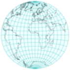
内半球 |
|---|---|
|
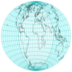
两倍经度 |
|
 水平比例拉伸两倍:埃托夫投影 |
|
推导埃托夫投影
方位等距投影以赤道为投影面时,以我们熟悉的 "水平 "面呈现整个世界；然而，在地图边界附近有明显的面积夸张。 艾托夫注意到，方位等距地图将一个 "内 "半球包围在一个半径为整个地图一半的圆盘中，他提出了一个非常简单而又有吸引力的修改方案。
- 用双倍的纵向坐标投射世界，有效地将所有东西都塞进内半球
- 两倍的水平比例，将圆盘拉伸成2:1的椭圆 压缩经度
压缩经度

这一系列修改后的赤道方位角等距图显示了将经度压缩1到2倍后，整个世界就变成了以前由一个半球占据的空间。
最终的投影不再是方位投影，而是仅沿赤道和中央子午线等距。
前向投影方程直接从赤道方位等距方程推导而来，替代并乘以横坐标中的系数2:
\[ \alpha=\arccos\Big( \cos\varphi \cos\frac{\lambda}{2} \Big) \] \[k=\begin{cases} & 0: : &if : : \alpha = 0 \\ & \frac{\alpha R}{\sin\alpha} : : : &otherwise \end{cases} \] \[ x=2k\cos\varphi\sin\frac{\lambda}{2} \] \[ y=k\sin\varphi \]
艾托夫的方法是由约翰-兰伯特（Johann Lambert）开创的，压缩方位立体投影产生了 "拉格朗日 "投影。
推导出哈默和埃克特-格里芬多夫投影

埃托夫(上)和哈默(下)投影相同比例尺的比较
埃托夫的工作本身被哈默修改了，他的投影应用了同样的想法，但改为兰伯特的方位等面积投影。因此:
- 全球比例小于艾托夫
- 投影的内半球不到整个地图的一半宽，但包围了它的一半面积
- 最终加倍恢复比例，最终地图也是等面积的
- 沿着主轴的比例不再恒定
同样，可以推导出公式，用λ/2代替λ，这一次是在兰伯特的方程中:
\[ x = 2R\sqrt{\frac{2}{1+\cos\varphi\cos\frac{\lambda}{2}}}\cos\varphi\sin\frac{\lambda}{2} \] \[ y= R\sqrt{\frac{2}{1+\cos\varphi\cos\frac{\lambda}{2}}}\sin\varphi \]
比例不同，但总体线条在艾托夫和哈默的投影中相当相似。在内半球几乎看不到经纬网间距的差异，这两个投影经常被贴错标签。Hammer的设计又被Eckert-Greifendorff修改了，在一个投影中进一步应用了2：1的重新比例。因此，除了用\( \frac{\lambda}{4} \)代替\( \frac{\lambda}{2} \)和将x因子从2改为4之外，其他公式都是相同的。
基于通过倒数因子压缩经度和扩展横坐标，保持中央子午线尺度不变的等积投影的极限情况是四次等积投影，即伪圆柱投影。
展平纬线

修改后的赤道方位角等积地图，具有经度压缩/水平扩展的倒数因子。
温克尔三重投影
具有常规（顶部）和 40° 参考纬线的 Winkel 三重投影图
温克尔设计了对艾托夫投影的另一种修改。 就像在他的第一张和第二张混合地图中一样，他的三重投影平均了等距圆柱投影的 x 和 y 坐标，这次再次使用 Aitoff 投影,因此:
\[ \varphi_0=\pm\arccos\frac{2}{\pi} \]
通常被选为圆柱形基座的标准纬线(尽管最终投影没有标准纬线)。 方程直接来自艾托夫方程和等距圆柱方程:
\[ \alpha=\arccos\Big( \cos\varphi \cos\frac{\lambda}{2} \Big) \] \[ w=\begin{cases} & 0: : &if : : \alpha = 0 \\ & \frac{1}{\sin\alpha} : : : &otherwise \end{cases}\] \[ x=\frac{R}{2}\Big( \lambda \cos \varphi_0 + 2w \alpha \cos \varphi \sin \frac{\lambda}{2} \Big) \] \[ y=\frac{R}{2}(\varphi+w\alpha \sin \varphi) \]
方位投影
原文链接:: Azimuthal Projections
简介
给定表面上的一个参考点A和另外两个点B和C，从B到C的方位角是由最小距离线AB和AC(在球面上是测地线或大圆弧)形成的角度。换句话说，它代表一个人坐在A上看B为了看C必须转的角度，A到C的方位是把一个极点作为参考B的方位。
 |
|
所有的方位角投影都保留了从一个参考点（地图的概念中心）开始的方位角，从而呈现出到其他任何点的真实方向（但不一定是距离）。它们也被称为平面图，因为其中有几个是通过直接透视投影到一个平面上而直接得到的。这个术语有点误导性，因为所有的地图投影都会产生一个平面地图，不管是不是方位角，不管是不是透视。
方位投影很容易建立两极投影面地图；其中一个极点是中心点，使得经纬网变得很简单:
- 纬线是直线，从中心点有规律地辐射开来。
- 经线是以中心点为中心的完整圆圈
- 投影的区别仅在于经线的间距
透视方位投影中的光路
选定透视方位投影的示意横截面。红色光线(以15条纬线间隔相切)将可见的地球淡蓝色表面“涂”到蓝色投影平面上
 |
 |
 |
 |
|
 |
- 在任何投影面，所有接触中心点的直线都是测地线，而变形只取决于与该点的距离，在该点变形为零。
- 在少数两点方位投影中，正确的角度是从两个特定地点而不是一个地点呈现的。
- 方位地图可以迅速告诉人们从中心点到任何地方的方向，而逆向方位投影则具有相反的特性，显示从任何地方转到中心点的正确方向。
经典方位投影
透视方位投影
在最古老的投影中，有三种方位投影设计是由纯几何透视结构定义的。它们中间没有一个能呈现整个地球，通常展示一个半球或更小的半球。
各个投影面的正射投影
 |
 |
| |
 |
正交方位投影
希腊人Hipparchus在公元前2世纪提到，但可能更早，正交方位投影（通常简单地称为正交投影）被托勒密称为analemma，其现代名称来自d'Aiguillon（1613）。
正交投影主要用于——有时是引人注目的——说明目的，因为它清楚地显示了从无限远的空间看到的地球，因此与学生的地球视图非常匹配(更好的匹配是由近侧一般垂直透视投影提供的)。地图边界附近严重的形状和面积失真妨碍了它在世界地图中的广泛使用:径向比例急剧下降，使要素无法识别。另一方面，任何圆心与投影中心重合的圆的比例都是准确的，就像极面上的纬线一样。
在现代地图册中，正交投影地图的使用主要限于插页。然而，太空时代提供了从轨道上看到的月球、其他行星和地球的高质量图像，使人们最近对这种投影法重新产生了兴趣。
正交投影地图的几何结构方便解释，也便于与其他方位投影进行比较。
方位立体投影
可能是使用最广泛的方位投影，从古典时代起就在极地方面被人所知，通常归功于Hipparchus；它被托勒密命名为Planisphaerum，被d'Aiguillon（1613）命名为赤平图。然而，它的使用长期以来仅限于星图；世界地图从现代开始就为人所知。当然，不能将立体摄影投影与为立体影像设计的“立体”投影技术相混淆，即合成两张图片以模拟三维视觉的深度——这是与高空照片的绘图和分析相关的一个重要特征。
立体半球地图
方位立体投影的不同投影面证明了它的一致性:随着方向的变化，远离中心的部分增长，但局部角度保持不变:经纬线总是以直角相交的圆。
 |
|
 |
|
在方位投影中，立体投影是唯一的共形投影:在一个小区域内，地图上的角度与地球表面的相应角度相同。它还保留了圆，不管有多大(通过中心点的大圆被映射成直线)，尽管球面上的同心圆在地图上通常不会保持同心。另一方面，等角航线 被绘制成对数螺线。
方位立体地图有一个简单的几何解释:从一个点发出的光线穿透地球表面，击中与该点对极相切的平面。结果就是地图背面，覆盖了整个平面；源点附近的区域位于无穷远处，并且该点本身不能被映射。
因为--与方位正交图相反--比例尺在远离地图中心的地方被大大拉长，方位立体投影通常被限制在源点对面的半球，或更小的区域。
其中一个“经典的”共形投影，方位立体投影也被修改为椭球面的情况；保形性得以保持，但结果不再是精确的方位或保圆。在这种形式下，它也是UTM经纬网的一个辅助部分。
日晷投影
日晷投影地图，从地图中心剪去70度
| |
|
日晷投影(也称为中心投影、方位中心投影或很少称为日晷投影)的构造很像方位立体投影，但射线源正好位于球体的中心；因此，它一次只能呈现不到一个半球。除了在切点附近，距离和形状变形都很明显。
这种独特的投影最重要的属性是，每条测地线，包括赤道和所有子午线，都被映射到一条直线上，从而可以轻松地找到任意两点之间的最短路径，尽管不是要遵循的方向。
一般垂直透视投影
一般的垂直透视投影是一种方位投影，它可以由在穿过地球中心并垂直于投影平面的直线上的任意顶点会聚的直线来定义，投影平面通常与行星表面相切。因为它是一个透视投影，对于地球上的每个点，穿过它的线定义了前者与平面相交的投影。投影由会聚点到地球中心的距离参数化；这是方位正交投影、立体投影和日晷投影的一般情况，它本身是斜(或倾斜)透视投影的极限情况，不要求投影平面垂直于会聚线，也不一定是方位投影。
近侧透视地图模拟太空中的景色
 |
|
| 地球的曲率和观察者V在表面上方朝向天顶Z的高度决定了可见的角度范围A和地平线H的圆，超过这个范围，表面就被隐藏起来看不见了。 下面的垂直近侧透视图是由一架假想火箭上的后视相机拍摄的，该火箭从赤道上靠近亚马逊河河口的一个假想基地起飞。在这万里无云的一天，不知何故，整个轨道在发射点保持垂直。下面的图是来自美国宇航局[the Blue Marble New Generation项目](https://earthobservatory.nasa.gov/features/BlueMarble)的原始未投影卫星图像 | |
 |
|
 |
 |
| |
 |
正如方位投影通常发生的那样，形状和面积失真远离中心点变大，对于相切投影平面，仅在中心为零。地图既不是共形的(除了特殊的立体情况)，也不是等面积的。
一般的透视投影有两种，当会聚点在映射表面的上方时是近侧的，当在它的下方时是远侧的。第一种是从空中或空间直接向下复制一个视图，以圆形地平线为界，圆形地平线受地球曲率的限制；在无穷远处，可视角度范围最大为天顶的90 °(整个半球),这是典型的正投影。
相比之下，远侧型通常显示不止一个半球。可视角度范围随距离缩小；无穷远处的极限情况也是正交的。而且，像立体投影一样，投影线首先“看到”地球的内表面。
远端垂直透视地图
| |
|
| |
|
尽管近侧的一般垂直透视地图仅限于模仿太空中的景色，但一些作者采用了远侧变体，他们根据任意标准选择不同的投影距离，以尽量减少全局失真。
最著名的远端透视投影是由 Philippe de La Hire (1701)提出的，他把收敛点放在地球半径的1+0.50.5（约1.707）倍，Henry James（1857年）为1.5，Alexander R. Clarke（1862年，与James共同提出）为1.368，后来（1879年）为1.4，为他更著名的 "暮光 "投影。
在La Hire的极地地图中，沿经线的比例尺是非线性的，但45°N平行线的半径正好是赤道的一半。不久之后（1702年），Antoine Parent提出了三种不同的距离，以最小化距离或面积误差。
James和Clarke都倾向于采用正切投影平面和斜面来呈现大多数大陆。两人都将角度范围缩小到比实际显示的范围小。詹姆斯为113°30'，"黄昏 "为108°；113°30'在90°（从天顶到可见地平线）的基础上增加了23°30'，即黄道角；108°增加了18°，即可见地平线以下的角度，定义了天文上的黄昏。
非透视方位投影
与“经典”正交投影、立体投影和日晷投影设计不同，方位投影(如等距和等面积投影)是在没有真实透视过程的情况下数学推导出来的。两者都可以映射一个完整的球体，一个“内”半球被一个环形“外”半球包围。然而，对于较小的整体失真，后者可以在以对跖点为中心的单独地图中呈现。
 |
 |
等距方位投影
方位等距投影能够在一张地图上呈现整个地球，并且具有恒定的径向比例（距离从投影中心线性增加），由于其重要的特点，我们在其他地方进一步讨论。
以北极为投影点，方位等距作为联合国组织的旗帜和会徽的一部分而为人们所熟悉，橄榄枝代替了南极洲。这里的南极洲被 "内翻"，说明了这种投影对远离中心的形状和区域的极端扭曲。
这种投影结构简单，有时被裁切成单一的半球，而且常常被限制在极冠的插图上。
 |
 |
 |
 |
兰伯特方位角等面积投影
像表面上相似的方位等距投影一样，约翰·兰伯特在1772年发表的方位角投影严重扭曲了世界地图边界的形状。然而，径向尺度不是恒定的:在极地方面，纬线越来越靠近边界，刚好足以保护区域。
- 构造相对简单，这种投影在各方面都频繁使用。
- 极地为投影面的兰伯特方位投影是由安东-马里奥·洛尼亚(1789年)独立设计的，并在短时间内以他的名字命名。
金兹堡修正方位投影
1949年，俄罗斯人Georgiy A.Ginzburg为学校地图中的半球提出了两种方位角投影。由于兰伯特的等面积投影压缩了从地图中心开始的距离，在边界附近造成了相当大的形状失真，Ginzburg在兰伯特的方程中加入了一个幂项，稍微扩大了地图的范围。其结果既不等角也不等面积。
| |
 |
 |
 |
比较金兹堡和兰伯特的等面积投影在相同比例尺下绘制在一个半球的变形椭圆。
圆柱投影
原文链接:: Cylindrical projection
介绍
在所有圆柱形投影中，赤道是最常见的，而且经常是唯一有用的投影面:
- 所有坐标线都是直的
- 纬线(按照惯例是水平的)交叉经线总是成直角
- 沿着每条纬线的比例是恒定的，所以经线的间距是相等的
- 所有纬线长度相同；经线也是如此
因此:
- 整个世界的地图都是矩形的
- 在离赤道同样远的任何一对纬线上，比例尺都是相同的。
- 各个纬线的比例尺差别很大，在两极达到无穷大，两极在地球上的长度为零，但在圆柱形地图上却与赤道一样长。

如果赤道柱面图的宽度通过重新缩放进行归一化，那么（因为它们的子午线间距相同）投影的唯一定义特征是其纬线的间距。 在这里，显示了北半球的一个切片，带有度数和颜色渐变标尺（比较方位角正投影插图）。 蓝色极地纬度在等面积设计中必然被压缩，并在米勒、墨卡托和其他透视投影中被不同程度地扩展； 只有等距的 Plate Carrée 与地球一样呈线性间隔。 请注意，最左边的三个投影实际上是相同原理的重新缩放版本，并且墨卡托和中央圆柱贴图延伸到无限大。
横轴投影面时，两条相对的经线位于赤道投影面的赤道之上；其他属性则不成立。
滚动矩形地图并连接两个相对的边缘会创建一个管子，或一个没有端盖的圆柱体。 事实上，一些圆柱投影是由围绕球体紧密配合的管子在几何上推导出来的。 前者可能是割线或切线，因此两条纬线或赤道分别是标准线。
所有的圆柱形投影都非常相似，事实上只是通过纬线的间距来区分。非常重要的，独特的共形圆柱投影以墨卡托命名，并在其他地方讨论。在许多重新缩放的版本中，实际都是一个等面积的圆柱投影。
作为一个群体，圆柱形投影更适合于绘制以标准平行线为中心的狭窄地带。虽然对于比较纬度相近的地区很有用，但由于极地变形，它们不适合绘制世界地图。不幸的是，圆柱形地图经常被用于教科书和其他流行的出版物中，这可能是由于研究不力和其简单的形状整齐地适合页框。
等距圆柱投影和卡西尼投影
所有地图经纬网中最简单的属于正轴等角投影，有许多名称，如等距圆柱、平面投影和矩形投影。它是一个带标准经线的圆柱形投影:所有经线都有恒定的刻度，等于标准纬线的刻度，因此所有纬线的间距相等。它被归功于埃拉斯特斯(约。公元前200年)和提尔的马里努斯(约。100).它由于结构简单而广泛使用，甚至直到现代航海还在使用此投影。
等角投影的一种特殊情况叫做板状投影(Plate Carré)，或简单的圆柱形投影:赤道是一条标准的纬线，因此当它是所有经线的两倍长时，使地图成为一个2 : 1的矩形和经纬网的网格正方形。快速、简单的方程导致了它在粗糙的计算机绘制的地图上的复兴，使用于早期的机器或实时图形。它仍然常用于地球和行星特征的数字化纹理（"表皮"）中。
另一个特例，詹姆斯·加尔 (James Gall) 的等轴投影 (1885) 在 45°N 和 45°S 处具有标准纬线，为他的等面积投影设计选择了相同的纬度。
César F. Cassini在1745年提出过一个横轴的等距圆柱形投影，并以自己名字命名。卡西尼的祖父Jean Dominique（生于乔瓦尼-多米尼克）是一个天文学家和制图师家族的最杰出成员。一些欧洲国家一直在大型地形图中使用卡西尼的投影。变形与正常投影面相同，因此中央子午线、赤道和其他三条90°倍数的子午线都是等比例尺的直线。
虽然很少提及，但是斜轴等距圆柱形地图对于快速计算地图上两点到任何其他点的角度和直线距离非常有用。


米勒圆柱投影

奥斯本-米勒（Osborn M. Miller）出版的所有投影中最著名的（1942年），在数学上被认为是对墨卡托的妥协，保留了其熟悉的形状，但极地的变形程度小得多。在计算墨卡托方程之前，它对纬度采用了0.8的缩减系数，并对结果采用了一个反系数。因此，该地图可以包括整个世界。该投影既不保形也不保面积。
米勒创造了其他几个投影，包括其他三个圆柱形设计；没有一个像以他的名字命名的那样受欢迎。
透视圆柱投影
一些圆柱投影是由基于透视的几何过程定义的。大致可以想象成一个半透明的球壳，被一根管子、割线或切线包裹着。当球体和管都围绕后者的轴旋转时，固定的光源沿着单个子午线发射光线，将球形特征的“阴影”投射到管上。在一个完整的旋转之后，管子沿着平行于它的轴的一条线被切割并且展开。
仅仅通过改变源的位置和管的直径，就会产生不同的投影。光源也可能无限远，使光线平行。
相比之下，其他圆柱投影，如等距圆柱投影、米勒投影和墨卡托投影具有任意定义的传统经纬网，而不是通过光源类比形成的。

兰伯特的圆柱等面积投影
相同面积的圆柱投影切线——使赤道在其法向位置成为标准纬线——由约翰·H·兰伯特在赤道和横向以及其他几个投影中严格定义（1772 年）。 它通过逐渐压缩远离赤道的平行线以补偿过度的水平比例来节省面积。 然而，只有赤道没有形状变形。这种投影有时归因于阿基米德，但这种混淆可能源于他绘制的球体和外接圆柱体的体积图。
这种投影的视角很容易通过在地球上滚动一个柔性薄片，并将每个点水平地投射到如此形成的管子上而得到直观感受。换句话说，光线从圆柱体的轴线射向它的表面，然后沿子午线切割并展开。
像大多数圆柱投影一样，沿标准纬线投影的变形是可以接受的，但在极地区域几乎无法使用，因为极区被压缩了，所以地图比高的要宽得多。而且,像在其他圆柱投影中一样，沿任一纬线变形都是均匀的。
加尔正交投影
James Gall的正交等面积投影（1855年）与Lambert的版本基本相似，但在北纬45°和南纬45°有标准纬线。 因此，投影圆柱体是正割的，而且更窄；垂直幅度必须成比例地扩大，以保持总的制图面积。因此，唯一真正的区别是长宽比（即宽度除以高度）。高尔的正交地图是兰伯特的两倍高。
尽管保留了面积，但这种投影的非常规形状变形模式限制了其实用性。

“Peters” (Gall-Peters) 投影
1967年，Arno Peters发表了一个与Gall的1855年正交投影基本相同的圆柱形投影图。也许它实际上是一个独立的创造；尽管如此，彼得斯坚持声称它是一个原创的设计和新颖的东西，即使受到了严厉的批评。1973年后，该投影被大力推广，获得了广泛的媒体报道。它的所谓优点主要是与墨卡托投影的缺点相比较。
据称，彼得斯的投影没有距离或面积失真，也没有极端的形状失真。因为它是等面积的，所以它是平等的:第三世界国家，其中许多位于热带地区，以实际面积比例呈现，而墨卡托投影大大夸大了较高纬度地区的面积，包括欧洲、北美和前苏联。
尤其是最后一点，即所谓的对历史不公正的修正，帮助该设计被几个组织（如联合国教科文组织）接受为主要或唯一的投影，专业制图师谴责这一选择，他们指责彼得斯进行政治宣传和操纵不知情的人。媒体 在以“地图战争”命名的这一集中，彼得斯经常被视为大卫对抗已建立的制图巨人。
特别是这最后一点，即对历史上不公正现象的所谓纠正，帮助该设计被几个组织（如联合国教科文组织）接受为主要或唯一的投影，但专业制图师谴责这一选择，他们指责彼得斯进行政治宣传和操纵不知情的媒体。在这段被一些人命名为 "地图战争 "的事件中，彼得斯经常被看作是反对既定制图学的歌利亚的大卫。
遗憾的是，支持Peters投影的论点是错误的、夸大的或谬误的。它确实有严重的形状失真，而且它的失真模式沿着子午线发生了很大变化（墨卡托投影没有局部形状失真）。当然还有距离失真（在两极是无限的，就像所有圆柱形投影一样），而且距离只沿两条标准纬线保留。面积失真当然是不存在的；另一方面，许多其他的等面积投影已经存在，其中一些的整体形状失真要小得多
彼得斯的话语让制图师们感到不满，特别是他说他发明了第一个等面积的投影。
最后，墨卡托投影是一个错误的批评对象，因为它是作为一种导航设备而设计的，从未打算用于绘制世界地图；不幸的是，它被许多天真的杂志和教科书--误导性地--所采用，这意味着只有它应该被更好的候选者所取代--而彼得斯的断言中没有一个证明他是最佳的。
整个事件表明，不能因为单一的特征或基于宣传或政治宣传而选择投影，无论其原因多么令人同情。今天，Gall的正射投影仍然偶尔以Peters的名义出版。具有讽刺意味的是，对于一个被宣传为没有欧洲中心主义或对发达国家的任何特权的投影来说，它显示欧洲和美国/加拿大边界的形状失真较小，因为它们靠近北标准线；另一方面，非洲、东南亚和拉丁美洲的大部分地区位于失真最严重的地区。
其他等面积圆柱投影
除了Gall-Peters，其他不太知名的等面积圆柱形投影也采用了兰伯特的原理，只改变了标准的纬线，因此也改变了一般的地图比例。它们中的每一个都可以转换为其他任何一个，只需将宽度和高度按互为因数的方式重新调整即可。
其中一些变体的设计是明确的，以减少最大或平均变形（由作者方便地定义），如Behrmann和Trystan Edwards的投影就是如此。值得注意的是，由于某些原因，后者指定了一个变形标准，其标准纬线与实际选择的值不一致。
几位作者建议在正方形上画一个等面积的圆柱形地图；最近，瓦尔多·托布勒和陈在基于四叉树的地理信息系统的背景下提到了它。四叉树是一种分层数据结构，它递归地划分一个矩形区域，每层四个更小的块:信息可以根据需要以粗略或精细的细节有效地存储和检索。正方形区域不是必需的，但是便于实现；面积等效要重要得多。
兰伯特投影法的变体比较
所有圆柱形等面积投影都是兰伯特原始设计的简单重新缩放，不同之处在于纵横比和标准纬线(下面用绿色标出)。比例尺是相同的。
 |
|
| 近似标准纬线 37°24', 宽高比 1.983:1 |
|
| |
|
| |
除了Gall-Peters，其他不太知名的等面积圆柱形投影也采用了兰伯特的投影原理，只改变了标准纬线，因此也改变了一般的地图比例。它们中的每一个都可以转换为其他任何一个，只需将宽度和高度按互为因数的方式重新调整即可。
它们的形状变形模式是相似的，而且像所有的圆柱形投影一样，与经度无关：离标准平行线越远，水平比例尺受到的影响越大（在它们之间被压缩，在外围部分被夸大）。
其中一些变体的设计是明确的，以减少最大或平均变形（由作者方便地定义），如Behrmann和Trystan Edwards的投影就是如此。值得注意的是，由于某些原因，后者指定了一个变形标准，其标准纬线与实际选择的值不一致。
一些作者提出了在正方形上的等面积圆柱形地图；最近，Waldo Tobler和Chen在基于四叉树的地理信息系统的背景下提到了它。四叉树是一个分层的数据结构，它递归地划分一个矩形区域，每层四个小块：信息可以根据需要有效地存储和检索粗略的或精细的细节。正方形区域不是一个必要条件，但便于实施；面积等值更为重要。
立体圆柱投影:高尔投影、BSAM圆柱投影和布朗投影
詹姆斯·高尔首选投影(1885)的几何结构类似于方位立体图的透视，但有两个不同之处:
- 投影面是一个北纬45度、南纬45度的正割圆柱体，就像他的正投影一样
- 每个投影点的射线源都位于赤道上的相对子午线上。
面积未被保留，地图也不保形。只有在北纬45度和南纬45度的标准纬线上，比例才是真实的。除了整体扭曲之外，没有突出的特征。

卡尔-布劳恩的立体圆柱图（1867年）是一种非常类似的投影，但是从切线圆柱体发展而来的。
另外两种被认为是Gall立体投影的特例的变体在苏联出版：Kamenetskiy（1929年）的地图使用55°作为标准平行线，B.S.A.M.（Bol's shoy sovetskij atlas mira，大苏维埃世界地图集，1937年）的一卷中的几幅地图使用30°。后者被称为BSAM圆柱形投影。

然而，Braun简要地提到了另一种变化：将光源从赤道移到赤道平面上的某一点，但在极轴到赤道的40%距离上。在北纬80度和南纬80度之间，结果与墨卡托的结果非常接近，最大误差为2.39%（反正墨卡托的误差在纬度80度以上几乎没有用处），而在北纬60度和南纬60度之间的误差为2.29%。甚至更好的近似度可以达到40.7%（北纬80°和南纬80°之间的误差为2.05%）和46.71%（北纬60°和南纬60°之间的误差为0.24%）这样的距离。尽管能够用微不足道的几何图形粗略地再现真正的保角投影，但这只是一个好奇心，其最大的优点是强调墨卡托的设计不是一个透视过程。
中心圆柱投影
在中央圆柱形（也称为中心圆柱形）投影中，垂直比例尺在远离地图中心线的地方增加得非常快，甚至比墨卡托投影还要快；同样，在赤道方面也不能显示极点。
它的起源尚不清楚，尽管它在方位角和中心角圆锥投影中有明显的相似之处。由于没有任何有利的属性，既没有等面积也没有保形，它几乎从未被使用，无论是在赤道方面还是横向方面（称为韦奇投影，以19世纪的J.韦奇命名）。

伪圆柱投影
原文链接:: Pseudocylindrical Projections
介绍
正轴投影时,在高纬度地区，所有的圆柱形投影都有强烈的形状变形，而且通常面积也被大大夸大了。特别是，两极被无限拉长成线，或者甚至不能被包括在内，如墨卡托投影中。伪圆柱形投影类别试图对形状与面积进行另一种权衡；在正常的赤道投影面，它们的定义是：
- 纬线呈平行直线，不一定等距
- 经线为任意曲线，沿每条纬线的距离相等
一些值得注意的从圆柱投影继承下来的特性:
- 水平纬线在视觉上保留了纬度关系，从而使那些主要取决于离赤道距离的现象，如白昼时间、气候、风和温室变暖，更容易产生关联性。
- 平行线上的任何一点都有恒定的刻度，便于按其方向测量
由于它们的纬线和经线并不总是以直角相交，伪圆柱映射的并不是保形性；事实上，大多数在极地依然有强烈的形状扭曲。因此，许多都是为了等价而设计的。
W.Tobler提出了 "多圆柱 "地图的概念，它由许多具有正确平行长度但任意高度的薄圆柱地图组成，通过类比多圆锥投影是圆锥群的概括而提出的。更广泛地说，任何伪圆柱形投影在概念上都可以通过将部分圆柱形地图（可能是无限的）并列在一起而创建，不一定使用相同的纬线比例。
尽管它们的几何约束比圆柱设计灵活得多，但一些决定仍然适用于所有伪圆柱投影：子午线的形状（直线、圆锥截面、正弦曲线、任意曲线）、纬线的距离分布、线性或尖极 . 不同的作者经常采用相同的选择组合，并且几个伪圆柱“投影”实际上是同义词。 鉴于这些替代方案，这一大组的预测分类有些随意； 许多设计可以很容易地分配到多个部分。 在无数可能的伪圆柱投影中，有几个是有用的教学设备和世界地图的流行选择。
从圆柱形到伪圆柱形
伪圆柱地图概括了“多圆柱”概念，该概念可以表示为应用于离散纬度范围的圆柱投影群的概括。

在这里，九个带有部分圆柱等距地图的条带覆盖了地球（为了清晰起见，部分被移除）。 每个条带与不同的标准纬线相切并拟合，其中一半埋在地球内部（赤道条带是例外）； 长度各不相同，但所有九张地图的垂直比例尺都相同。


推广上面的扁平离散映射，无限多条的连续极限情形将是伪圆柱正弦投影；由于条带将完全覆盖地球表面，因此很容易看出最终结果是等面积的。对齐每个条带的中央经线不是强制性的:其他排列(见例子)是可能的，但可能没那么有用。
经典伪圆柱投影
正弦(Sanson-Flamsteed)投影
尽管名字相同，但 "Sanson-Flamsteede "投影并非由Nicholas Sanson（约1650年）或John Flamsteed（1729年，死后出版）首次研究，而可能是由Mercator研究的--至少在Mercator地图集的后期版本（1606年）中，它被列入南美洲地图，并被称为Mercator等面积投影，或Mercator-Sanson。由于在正轴投影时，所有经线都是正弦曲线，所以也被称为正弦投影，可以很容易推导出来。
正弦投影是等面积的，并保留了沿纬线的距离，即赤道地图中的所有纬线都是标准线，但只有中央子午线是标准经线。虽然赤道带的复制几乎没有失真，但由于裁剪，极冠的易读性很差。部分恒定的比例和简单的结构仍然推荐像非洲和南美洲这样的大陆进行这种投影，通常是在方便的重新调整之后，对于世界地图来说，会应用于分瓣地图。
Mollweide 投影
由德国人Karl B. Mollweide创建，同名的伪圆柱形投影以一个椭圆为界；两极为点，其赤道是中央直线子午线的两倍，但都不是标准线。所有其他经线都是椭圆弧，平行线的间距不等，以保持面积。只有中央子午线与标准平行线40°44'12 "N和S的交点没有变形。尽管它的几何形状很容易推导出来，但计算却比今天仍然重要的另一种经典的伪圆柱形，即正弦投影更复杂--这一点以及沿中央子午线的均匀比例的损失是为减少极地地区的拥挤所付出的代价。
 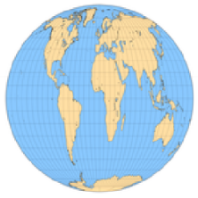
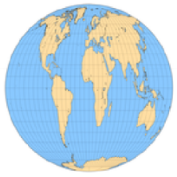Bromley（左图，标准赤道）和Tobler（右图，圆形）所做的经过调整的莫尔维德投影也是等面积的。
尽管摩尔韦德的投影具有等面积的特性和令人愉快的形状，但自1805年发表以来，摩尔韦德的投影几乎没有得到认可，只是在法国人雅克-巴比内特于1857年将其作为同源投影提出后，才变得更加知名。从历史上看，它的其他常见别名包括椭圆、巴比内特、同位素（来自希腊语homo的 "相同"，因此为等面积）。
这种投影具有深远的影响，在融合（John P. Goode的homolosine，Allen K. Philbrick的Senu-Mollweide，György Érdi-Krausz）和平均（Samuel W. Boggs和Oscar S. Adams的eumorphic；一些作者还将其与Winkel II联系起来）的设计中与正弦形结合。单独或组合的中断式变体也很受欢迎。
其他变化包括斜轴投影面，如约翰·巴塞洛缪的亚特兰蒂斯和通过正交倒数因子的简单重新缩放，这保持了面积等效性，同时改变了纵横比和角度变形模式。例如，瓦尔多·托布勒(1962)建议用标准纬线73° 7 ' 43.85 "南北将整个地图做成圆形；罗伯特·h·布罗姆利的投影(1965)拉长了椭圆，合并了赤道的标准纬线。
莫尔维德的2:1椭圆偶尔会被误认为艾托夫和哈默的投影，两者都不是伪圆柱投影，尽管后者也是等面积的。更容易混淆的是阿皮安第二个球状投影的椭圆全世界延伸，数学上简单得多，面积也不相等。
福柯的赤平等值投影
Foucault's Stereographic Equivalent
德·佩蒂特·福柯在1862年提出的一种伪圆柱投影是立体圆柱投影的等价物:它的水平纬线的间距与方位立体投影和布劳恩圆柱立体投影的赤道方向的间距相同，为了保持面积而计算的经线是五阶曲线。
尽管它是继正弦和摩尔维德投影之后的第一批“现代”伪圆柱投影之一，但立体投影的等效物只不过是一种新奇的东西:由于平行间距在较高纬度增加得更快，水平尺度相应地缩小，产生具有过度角度失真的尖锐极点。另一种由方位角原理导出的平行间距等面积伪圆柱投影，即四次等距离投影，只是稍微成功一点，但实际上要有趣和有用得多。同样的概念，应用于方位角正投影，显然会导致Lambert的圆柱形等面积投影；从方位等距投影到正弦投影；对于gnomonic来说是不实用的。
直线方里网的地图
少数正轴伪圆柱形投影的方里网只包括直线，可能在赤道处断开。其中包括最古老的梯形投影、Eckert's I和II、像HEALPix网格这样的合成物，以及Snyder的带有严肃信息的制图笑话中（译者注：原文大概是谐音梗的意思，在最后有提及）。
Collignon投影

尽管保留了地域关系，克里尼翁投影的不寻常的变形使它成为一个新奇的角色。原投影有完全直的经纬网；这里展示的其他地图是一个对称的菱形，在两个半球有间断的变化。
1865年引入的埃杜尔·科利翁(douard Collignon)的投影保留了一些面积，但严重扭曲了形状。在赤道方面，南北半球可以是一个等腰三角形，底部在赤道上，高度为赤道长度的一半，也可以是一个等腰梯形，底部在赤道上。所有的经纬线都是直的，但是经线在赤道处可以随意断开。
世界地图的常见排列方式是一个不间断经线的等腰三角形，并以平坦的南极为基础。补充选项（倒三角、对称菱形和沙漏形）和两个或多个菱形的间断变体同样有效，但在实践中从未见过。尽管其结构简单，这种投影被认为只是一种好奇心；最近，它作为HEALPix格式的一部分找到了实际应用。
抛物线等面积投影
1929年，John E.E.Craster中校提出了三种假圆柱形等面积投影的特点，其经线是基于圆锥截面。他拒绝了椭圆和双曲线版本，并为抛物线设计提供了一个简略的坐标表。后来Charles H.Deetz和Oscar S.Adams(1934)提出了数学细节，包括一个中断的版本，并由Adams(1945)再次提出。
虽然具有相同的2:1比例，表面上类似于正弦曲线，但卡斯特的抛物线投影有更多的凸子午线，在边界子午线附近的高纬度地区，形状失真有所减少。它的数学发展是求解三次函数的一个有趣的应用。
作为基于三角曲线和圆锥曲线的伪圆柱投影系列(1934)的一部分，Reinholds Putniņš适时地指出他的P4投影与Craster的抛物线相同。
西蒙和其他人的投影
在战前的德国，卡尔·西蒙提出了四个伪圆柱投影，第一个无疑是最著名的。除了一个之外，其他所有人后来都被其他作者独立地重新发现了。
洛西姆塔尔投影
西蒙称他的第一个投影(1935年)为Wegtreue Ortskurskarte，以1966年出版它的W.Tobler的名字命名，今天几乎总是被称为loximuthal。这个词很好地总结了它的独特之处:给定一个参考纬度，所有与中央子午线相交的直线都是等角航线（ loxodrome）。此外，它们都是方位角正确的标准线，类似于穿过方位等距地图中心的直线。


相比之下，在墨卡托地图上，所有的等角航线都是直线，但是比例不仅在不同的loxorome之间快速变化，而且沿着相同的直线变化；方位角也不一致。
洛西姆塔尔投影面积不等，仅在中央子午线与参考点(也是标准点)平行相交的地方是共形的。与大多数伪圆柱投影不同，它不是相对于赤道对称的，除非选择赤道作为参考纬度。
四次等面积投影（The Quartic Authalic Projection）
和福柯的立体对等物一样，四次等面积是另一种由方位原理导出的等面积(四次，因为它的经线是四阶曲线，自积来自希腊语autos ailos，“相同面积”)投影；这是西蒙发表的第三个投影(1937年)，由亚当斯独立开发(1944年发表，1945年再次发表，附有详细的分析，没有名字)。
因为它的纬线像兰伯特方位角等积投影的赤道面一样间隔很远，所以它是导致更著名的哈默投影的变换的极限情况。亚当斯更喜欢两个半球的间断版本，他强调了它的极点是如何不如正弦曲线的极点尖锐，而赤道带避免了莫尔维德的垂直夸张。尽管如此，除了作为麦克布赖德和托马斯的平极四次投影的灵感之外，四次authalic通常被忽略。
最后，西蒙的第四个投影是简单的四次等深线，具有相互的水平和垂直缩放，以保持面积，同时适合2 : 1的纵横比。
卡夫拉伊斯基第五投影
Kavrayskiy's Fifth Projection

除了圆锥和圆柱投影外，俄罗斯的弗拉基米尔·卡弗雷斯基还提出了三种伪圆柱设计，其中的V和VI是基于三角函数的等面积设计。第五个(1933年)有尖的极点，在北纬35度和南纬35度的平行线和根据正弦曲线计算的经线，但不是正弦曲线本身。第六部(1936)与瓦格纳1932年的第一部投影完全相同，都是正弦子午线。
平极伪圆柱投影
带有极线的地图被称为平极地图，以直线而不是点来表示两极。当然，所有的正轴圆柱形投影都是平极的，但这个术语通常适用于一大群伪圆柱形设计。
极线以水平比例失真为代价，避免了正弦曲线和莫尔维德投影的拥挤外观，水平比例失真在极点是无限的。
像瓦格纳和埃克特这样的制图员发展了整个平极投影“家族”。其他带有极线的投影包括内尔伪圆柱投影(第一个知名的投影)、温克尔投影一和温克尔投影二。
埃克特的六个投影
1906年，德国教授马克斯·埃克特(后来的埃克特·格雷芬多夫)发表了六个伪圆柱投影，它们在正轴时有一些共同的特征:
- 中央子午线是直的，长度是赤道的一半，是奇数投影中的一条标准线
- 两极是平的，只有赤道的一半长
- 偶数序号的投影面积相等，奇数序号的投影具有等间距的纬线
因此，在所有六个方案中，极点由一个正方形构成，整个地图由一个两倍宽的矩形构成。边界经线是简单的曲线。

虽然这六个投影没有一个是共形的，但奇数投影呈现出更好的整体形状(在正中心没有形状失真)；为了保留面积，偶数投影压缩了两极附近的垂直比例，并在赤道附近拉伸。
埃克特的第二个设计是等面积的，将所有经线映射为在赤道处断开的直线。第一个投影相似，但面积不等，因为平行线间隔相等。两者都不仅仅是好奇。
对于他的第三个和第四个投影，埃克特把外经线做成半圆；所有其他的经线都是规则的椭圆弧，除了中央经线，像所有埃克特平极地图一样，是直的，长度是赤道的一半。第四种设计适度用于世界地图；第三个有时被误认为是奥特利厄斯的椭圆形地图的投影，它缺乏沿纬线的恒定比例，因此不是伪圆柱形的。
第六个也是最受欢迎的埃克特平极投影有边界子午线，形状为正弦曲线周期的一半。表面上相似的第五种设计有规则的平行间隔，并且面积不等。
其他几个伪圆柱投影，最著名的是西蒙，麦克布赖德和托马斯，以及瓦格纳的一系列，也是基于极线和正弦子午线。
罗塞恩正弦投影
卡尔·罗塞恩的伪圆柱投影(1926)的形状是从正弦曲线中导出的，纬度被压缩:极点被映射到与北纬53° 7′48″和南纬53° 7′48″对应的直线上，因此长宽比从2∶1变为约3.388∶1。这类似于艾托夫、哈默、埃克特-格雷芬多夫的投影中的坐标压缩，但没有补偿扩展。投影被放大，平行线被隔开以使整个地图面积相等。 罗森的方法后来被乌尔马耶夫所概括。
罗宾逊投影
在关于圆柱形世界地图是否适合教学的广泛争议之后，传统的地图集出版商兰德·麦克纳利(Rand McNally)要求著名的制图员和教育家阿瑟·H·罗宾逊开发一种新的地图投影，该投影具有减少的整体失真和简单、不间断的经纬网。
所产生的折衷投影没有应用几何透视过程，如用于经典方位角投影，也没有实现某些先前定义的目标，如墨卡托的目标，或使用简单的数学函数，如Sanson-Flamsteed、Mollweide和Eckert系列的正弦或椭圆弧，而是将赤道方面的边界经线用常规值定义，通过手工计算，以产生一个 "看起来正确 "的地图（因此其俗称正视）。一个表格定义了这些经线的纬度5°增量的x、y坐标值；其他点必须是内插的（内插方法没有硬性规定）。就像所有的假圆柱形投影一样，在正常的方面，经线沿着所有平行线等距排列，这些平行线是水平的、笔直的（在38°N和38°S之间，有规律的排列）。赤道的长度几乎是中央经线的两倍；两极是平的。

罗宾逊投影于1963年设计，1974年正式出版，在受到国家地理学会制图人员的赞扬后才真正流行起来；1988年，它作为该学会杂志的插页出版，并被选为其参考世界地图，取代了范德格林顿投影。
卡夫拉伊斯基第七投影
Kavrayskiy's VII Projection
另一种既不保留形状也不保留面积的折衷设计是1939年Kavrayskiy的第七投影，它是一个平极伪圆柱，具有椭圆子午线和中心子午线的正确比例。与罗宾逊的相比，它的数学推导和描述要简单得多。
平极四次投影
费利克斯·w·麦克布赖德和保罗·托马斯创造的几个投影的极线只有赤道的三分之一长。第四个也是最著名的(1949)，平极四次投影，有四阶曲线作为经线，并且是等面积的。

一些作者试图将两个或多个现有投影的优势结合起来。可以对数值进行数学平均，或者将地图的不同部分沿着类似比例尺的线条分别投影。后一种方法在假圆柱形投影中很方便，因为它们的直线平行线具有恒定的比例；因此，不同的地图 "片 "可以分别投影，然后融合，即 "缝合 "在一起，可能在重新调整比例之后。
内尔的伪圆柱投影
不算过时的梯形，第一个已知的平极伪圆柱形投影是由Adam Nell在1890年发表的；实际上它是Nell的椭圆体伪投影的极限情况，以赤道为参考纬线。它的X坐标类似于圆柱投影与正弦投影的平均值，但使用一个辅助角度；整个地图是等面积的。
内尔-哈默投影
1900年由Hammer出版的平极投影，是根据Nell的建议直接将Lambert的等面积圆柱形投影和正弦投影的x坐标平均化，并调整y坐标以保持面积。

Goode's Homolosine
约翰·古德(John P. Goode)在他1923-1925年的混合同调(同调+正弦)投影中结合了正弦和莫尔韦德(Mollweide)投影:在两个基础投影中，三个水平条纹在两个长度相同的平行线上连接——大约北纬40° 44′12″和南纬40° 44′12″。高于边界纬线的纬度用莫尔韦德投影表示，中心条纹的剩余区域由正弦表示。
经线在连接处被打断，其结果并不明显优于单独使用的任何一种原始方法；然而，近65%的地图保留了水平比例尺，极冠也合理可辨，同时在热带带保留了正弦的恒定经线比例尺。这种特别为中断而设计的投影，长期以来在地图册中相当流行。
Boggs Eumorphic
由S.W .博格斯创造的1929年的同形投影(希腊语中的“井形”)是另一个混合体。然而，它不是离散地连接单独的带，而是将其y坐标定义为相应正弦和莫勒维德坐标的算术平均值。x坐标是为等面积地图计算的，通常以间断的形式呈现。

The Sinu-Mollweide Projection
另一个融合的伪圆柱设计，艾伦·克·菲尔布里克的辛诺-莫洛韦德投影(1953)与古德的同曲面有相同的基底投影和融合纬度；然而，
- 使用40° 44′12″S以上的莫勒维德投影和低于它的正弦曲线，而不是三段，只有两段
- 优选的投影面不是正轴而是斜轴的，在最初的赤道和保留北极的中央子午线的交点处为北纬55度20度
以这种简单的形式，这种投影已经在商业地图上发表了，但是像高洛辛的一样，它的作者喜欢一个分瓣的版本。
Eckert V
埃克特的第五个投影(1906)可以用正弦投影和平板投影的算术平均值来表示(实际上两者的y坐标是相同的)。因此，极点被映射到赤道一半长度的直线上。除了中央的经络都是正弦曲线。虽然这张地图没有保留区域，但它看起来像是更受欢迎的等面积埃克特六投影。
Winkel I
O.Winkel在1921年发表的第一个投影是对Eckert的V型投影的概括，使用任意两条相对的平行线作为标准，而不一定是赤道（因此只有水平比例与特殊情况有变化）的等距圆柱投影。Winkel更倾向于50°27′35″北和南，这使得总面积与赤道周长成正比。
Winkel II
该投影也发表于1921年，对等距圆柱投影和类似于摩尔维德投影的2:1椭圆投影进行了平均，但纬线间距相等，因此面积不相等(一些来源认为摩尔维德投影本身是基础投影)。 得到的地图，也不是共形的，也不是等面积的，它的构造很像温克尔的第一次投影。

HEALPix投影
HEALPix，Hierarchy Equal Area and isoLatitude Pixilization(górski等人，1999)，是一个标准和资源的集合，用于天文和宇宙学研究的大数据集的有效存储和处理。在覆盖地球周围一个概念性天球的离散点(“像素”)，卫星探测器探测进入的辐射，如伽马射线和宇宙微波背景；测量值保存在栅格中，以供进一步分析。
HEALPix定义了一族从天球到平面的混合间断伪圆柱投影。一个健康位图包括两个波瓣；在法线方向的每个波瓣中，利用兰伯特等面积圆柱投影将赤道带映射成正方形；使用重新缩放的、间断形式的克里格农投影，极区被映射到两个等腰直角三角形。边界平行，约41° 48′37″；选择n和S是为了使三角形区域覆盖总面积的1/3。
对于一个特殊情况，当H = 2并且去掉赤道带时，结果是一个在两个正方形中的间断的Collignon映射。一般来说，改变H会影响未缩放的纵横比(很像兰伯特投影的变化)和最小形状失真的平行度；最常见的情况是，H = 4，可以像多面体投影一样简单地折叠成立方体。
整个地图可以分成3H个相同的面，每个面都是一个有垂直和水平对角线的正方形；一个小平面沿着与中央子午线相对的边界被分割，但这可以通过将一半移动到地图的另一侧来固定，使所有小平面整体处于人字形布局中。此外，每个面可以递归地分成4个较小的正方形。这种层次结构允许在不同的细节层次上进行数据处理。最后一级，像素也是水平和垂直对角线的正方形；这种非正统的取向可以通过将整个地图旋转45度的技巧来固定。由于整体结果是等面积的，因此栅格计算会产生一致的结果。伪圆柱特性提供了沿平行线的均匀像素分布。大数据集的另一个有利特征是相邻像素的数量和位置易于预测。
HEALPix投影的变体包括进一步的重新缩放。例如，当H = 6时，拉伸使三角形等边；这就形成了6H个三角形面，每个面可以细分为4个更小的三角形；像素同样是三角形的。对于H = 3，反向拉伸创建3个六边形刻面，在一些用于在相邻刻面之间共享片段的技巧之后，可以对其进行细分。
HEALPix投影的世界地图

尽管HEALPix的主要目的不是制图，但将其投影用于世界地图显示了一些有趣的属性。这张H = 2的HEALPix贴图有绿色标记的小平面边缘。每个小平面可以进一步细分为更小的正方形。


圆锥投影
原文链接:: Conic Projections
介绍
包裹在圆锥上的极地地图

圆锥投影基本都是用于极地的投影面，其主要特征有：
- 经线是等间距的直线，汇聚在一个点上，这个点可能是也可能不是极点。与球体相比，经线之间的角距离总是以一个固定的因子——圆锥常数——来减小
- 纬线是圆的弧线，在经线的汇聚点同心。因此，每条平行线都以直角穿过所有经线，并且沿着每条平行线扭曲的模式是相同的。给定相同的常数，不同的圆锥投影仅通过平行间距来区分
为了说明问题，任何圆锥图都可以被包裹在圆锥上，尽管所有重要的圆锥投影都不是基于简单的透视模型--换句话说，圆锥面总是投影的结果，但很少直接参与其几何构造。
通常，有一条或两条纬线被选为标准线；在透视投影中，它们定义了圆锥体实际与球体相交的位置（分别是正切和正切情况）。在非透视设计中，没有这样的保证，尽管传统上保留了正切和正切的名称。
由于其固有的简单结构和变形模式，圆锥投影已被广泛应用于国家或大规模温带区域地图，而方位角和圆柱形地图分别适用于极地和热带地区，特别是由两条适度接近的子午线界定的区域，如俄罗斯或相邻的美国。椭圆体的情况已经发展为值得注意的大比例圆锥图。另一方面，圆锥投影很少适用于不间断的世界地图，一个半球必然比另一个半球遭受更多的变形。
被称为 "圆锥 "的投影相对较少；然而，许多其他的投影都是由圆锥原理支配的，因为方位盘和圆柱体都是圆锥的极限情况：前者是一个扁平的圆锥，标准平行线在一极，圆锥常数为1；后者是一个顶点在无限远处的圆锥，常数为0，标准纬线在赤道的南北两侧对称。只有一种类型的等面积圆锥投影，而且只有一种是共形的。
圆锥的约束被伪圆锥（有弯曲的经线）和多圆锥（有非中心的平行线）投影所放宽；除了多圆锥的非严格定义，圆形纬线被保留。圆锥和类圆锥是最古老的投影之一，是托勒密地图的基础（约公元100年）。
圆锥，尖的或不尖的:从方位角到柱面的两条平行线

圆锥投影是方位角投影和圆柱投影的一般情况。上面的所有地图占据相同的面积，因为使用的三个投影(实际上是艾伯斯圆锥曲线的所有特定版本)是等面积的，并且以相同的比例因子应用。圆锥图的一般外观受圆锥常数的影响，圆锥常数又由标准平行线(上面用绿色突出显示)决定；地图是会聚在顶点还是包括截头圆锥(平截头体),取决于极点是否是标准纬线。

因为艾伯斯的投影不是由透视过程定义的，所以当被可视化为实际的圆锥模型时，这些地图并不完全适合底层的球体。例如，在标准纬线为北纬90度、南纬30度的版本中，它们不可能都与球体的对应部分在位置上重合，尽管它们相应的长度是相同的。
透视圆锥投影
透视投影使用一组具有共同原点的直线将地球仪和地图上的相应点关联起来，类似于几何透视的光线。与平面和圆柱体相比，圆锥体在光线的来源和方向上提供了更多的自由度。然而，透视圆锥投影从来没有意义。它们很少在地图学教科书中被提及——甚至不像中央圆柱形，作为一个负面的例子。尽管它们的几何简单，但它们几乎没有什么有趣的性质，即使与非常常见且更简单的等距圆锥曲线相比也是如此。

与30°N（任意选择的纬度，布劳恩的立体图除外）相切的透视圆锥投影的横截面。红色的光线显示的是间隔30°的平行线。切线纬度决定了蓝色映射面的延伸，也决定了限定可映射范围的蓝色细轮廓。
简单透视
传统上，透视圆锥投影的几何形状是由一条在切点（或正割情况下的角度中点）接触映射表面的线来定义的。在正视圆锥投影中，所有的光线都平行于该线，并且是表面的法线；在立体投影中，它们从反点射出；在中心投影中，从球体的中心射出。
从上到下依次是正射法、立体透视法和中心法透视圆锥地图，所有地图都有一个标准的平行线30°N。正射地图和中心透视图不能显示南纬60°以南的地区；立体透视图可以显示整个世界，但在南纬60°时被任意截断，而中心图则在南纬35°时被截断。比较地图和上述横断面中的纬线间距和绘制的范围。


正交圆锥投影概括了方位正交和Lambert的圆柱体等面积投影，但除了后者的特殊情况外，它本身并不是等面积的，其切点对面的半球被限制在该点以外的90°纬度。立体圆锥投影弥补了方位立体投影和卡尔-布劳恩的立体圆柱投影之间的差距，并且像后者一样，可以显示整个世界。中心投影是方位角圆锥投影和已经提到的中心圆柱投影的一般情况，它被限制在与正交投影相同的可映射范围内，但在实践中被剪裁到几乎超过一个半球。
其他的解释也是可能的：例如，正射投影可以有与极轴正常的射线，从而使整个世界都可以被映射。或者布劳恩的立体透视地图，以一个极点为中心，而不是以一个反极点为中心。
在历史上，圆心几何模型是1758年P.Murdoch的三个圆锥投影的基础。C.Colles在1794年描述了一个正割案例。他们都没有得到太多的关注。
布劳恩的立体圆锥投影
布劳恩发表的立体圆锥投影（1867年，与他的立体圆柱一起）是在30°N处的透视设计切线，其定义是光线不是从南纬60°的反点射出，而是从南极射出。
非透视圆锥投影
介绍
从历史上看，只有三种基本类型的圆锥投影获得了大量采用。它们的定义如下:
- 正轴投影，沿着所有经线的真实比例
- 等面积
- 等角
作为制图学中的一个常规折衷方案，一旦指定了一个主要特征，就可以确定投影参数——在这种情况下，一条或两条标准纬线——以减少整体变形。这就意味着:
- 对于等距地图，减少沿平行线的最大比例范围
- 对于等面积地图，减少最大角度变形
- 对于共形地图，最小化最大面积失真
- 或者甚至是上述的适当折衷
纬线的最佳选择可以通过最小二乘法等分析或数值方法获得；有时，标准可以归纳为经验法则——例如，在感兴趣的最小和最大纬度之间的1/6和5/6处设置标准纬线(Deetz和Adams)。
等距圆锥投影和其变体
最容易构造的圆锥投影是简单的或等距的圆锥投影，具有均匀间隔的纬线。除了沿标准纬线外，既不等面积也不共形，但对于大多数温带国家来说，这是一个可以接受的折衷方案，它是方位等距投影和圆柱等距投影的一般情况。

它的起源至少可以追溯到克罗狄斯·托勒密的第一张部分世界地图，那是纯粹的赤道以北的圆锥曲线。至少从17世纪开始，它就被应用于地球和星图，偶尔会有所修改，其中一些修改可能是由于绘制大直径弧的困难，而大直径弧经常与小圆锥常数一起出现。今天在当地和区域地图上仍然使用。
一些等距圆锥投影被归功于 "Delisle"（或de "L'isle"，或其他变体）。具有讽刺意味的是，尽管Joseph Nicholas de L'Isle在其家族企业出版的许多地图中确实采用了（真正的）等距圆锥，但他实际创建的投影（约1745年）并非严格意义上的圆锥修正，因为其子午线沿两条限制性直线而非纬线等距连接各点；因此它们一般不会在某一点汇合。
米德(1717年)的另一个改进是基于梯形单元或四边形，每个单元有1英寸宽。在每个细胞中，极限纬线和中心经线是标准线。这张不再是圆锥形的地图将会像蜘蛛网的一部分。米德和适当的“小岛”投影在今天已经完全过时了。
威廉·施耶宁(Wilhelm Schjerning)提出的第一个投影(1882年首次发表，1904年又发表了他的椭圆和心形/斜形建议)是一个北极等距圆锥曲线，常数为1/2。
杰出的数学家莱昂哈德·欧拉在1777年提出了在给定两条极限纬线的情况下选择圆锥常数的标准:在结果中，有时称为欧拉投影，给定一个纵向范围，沿极端纬度的距离误差与沿中心平行线的误差相同，但幅度相反。
俄罗斯和前苏联一样，涵盖了广阔的东西向山脉和中高纬度地区，是圆锥地图的理想主题。因此，一些俄罗斯和苏联制图师探讨了优化标准纬线位置的标准；著名的例子包括Vitkovskiy（1907）、Mendeleev（1907）、Mikhaylov（1911-2）、Krasovskiy（1922-5）和Kavrayskiy（1934）。门捷列夫（Dmitri I. Mendeleev）在对化学做出贡献后更加出名，他喜欢标准纬度90°N和55°N。Vladimir V. Kavrayskiy，其他各种投影的作者，赞成62°N和47°N。

Lambert和Albers的等面积圆锥投影
在其他几个主题中，约翰-兰伯特（Johann Lambert）1772年的大量专著考虑了当经线被表示为由一个非真实的恒定角度分开的直线时--如方位角投影--但不像圆柱形投影那样平行时会发生什么：其结果可以顺便包裹在一个圆锥体上。兰伯特出生在阿尔萨斯（当时是瑞士的一部分），应用微积分来解决以90 N或90 S作为标准纬线来保持区域关系的保真度的情况——即一个极点是一个点，而圆锥在顶点结束。由此产生的建议，即他的圆锥等面积，由此产生的方案，他的圆锥等积投影，或兰伯特的等球狭窄投影(阿德里安·杰曼和奥·斯·亚当斯使用的名称，可能是因为它在缩小子午线间距的同时保留了球体的面积)，后来被Albers推广。
兰伯特的论文用一张欧洲的小地图进行了说明，他推测北纬30°到70°的范围就足够了，第二个标准纬线，没有形状失真，可以放置在北纬50°左右。为了更容易计算，选择了7/8的圆锥常数，确定实际标准纬度为北纬48° 35′25″，在巴黎和慕尼黑之间。另一个简单的选择是0，它产生一个半圆形的世界地图。
对于整个世界的等面积圆锥图，Oscar S.Adams（1945）建议将90°N和18°25′S作为标准纬线，以尽量减少北极和南纬50°平行线之间的形状失真，认为这是人类的重要区域。然而，他更倾向于采用两个半球的横向断续版本。
德国人Heinrich C.Albers在1805年发表了他的圆锥等面积投影，作为Lambert圆锥投影的一般情况，有一条或两条标准平行线，不一定在一个极上。如果标准平行线与赤道等距，或与赤道重合，则该设计退化为朗伯的等面积圆柱形投影，或其重新缩放的变体之一。
人们对Albers了解不多，在很长一段时间内，他的设计很少受到制图文献的关注；直到最近，它才成为美国政府机构和其他地方的等面积（即通常是小比例尺和统计）地图的常见选择。一个有影响力的支持者是亚当斯，他为椭圆体的情况制定了最小化变形的标准和方程式（约1927年）。


近似(基本标准纬度是正确的，但是中央子午线是近似的，因为兰伯特的坐标网格使用了除格林威治以外的参考子午线)兰伯特的欧洲地图的重建，使用了7/8常数的等面积圆锥投影。
兰伯特共形圆锥投影
在1772年的同一专著中，兰伯特在极地方位立体投影和赤道墨卡托投影之间架起了桥梁，再次使用微积分，这次是为了确保角度得到局部保留。为球体和椭球体情况开发的圆锥保形投影，也被称为圆锥共形投影，今天是兰伯特所有原始建议中最重要和最常用的，可与横向墨卡托相比。他用一张欧洲的小地图来说明，选择的极限和标准平行线与等面积版本相同；在保角情况下，圆锥常数是3/4而不是7/8。立体图和墨卡托的是共形圆锥的极限情况，分别是当一个极点是单一的标准纬度和两个标准平行线都围绕赤道对称时（如果不重合，则有适当的重新缩放）。
令人惊讶的是，这种投影几乎没有得到实际应用，其真正的作者身份几乎没有得到承认，直到第一次世界大战，它被法国作战地图所采用（不要与1918年的法国军用Système Lambert相混淆，这是一种基于Tissot的非正交、非等效最小误差投影的网格标准），也被美国USGS所采用。显然，它是由Charles L.Harding在球面情况下独立开发的，并在1808年至1822年应用于星图册。伟大的数学家J.Carl F.Gauss--他本人是保角制图领域的重要贡献者，也是基本定理的作者，该定理意味着没有一个平面地图可以不失真地表示一个球体--承认Harding的工作，但不承认Lambert。约翰-赫歇尔重新发明了兰伯特的球形方程，并提出了一个具有圆锥常数1/3的世界地图（1859年）；他还提出了选择标准平行线的标准，以减少全球尺度的变化。乔治-布尔，现代数字计算机逻辑的先驱，将赫歇尔的方程扩展到椭圆体上（约1860年）。哈丁、高斯、赫歇尔被不同程度地认为是投影的创造者，甚至在像托马斯-克雷格（1882）这样的专业论文中也是如此。
面积与角度失真

变形椭圆可以比较用Albers的等面积（上）和Lambert的保角（下）圆锥投影法绘制的澳大利亚地图的变形。沿着绿色标准纬线的点——15° S和35 S(左)和25 S(右)——没有失真，无论是面积还是角度。注意在等面积圆锥投影中，形状变形的方向是如何在标准纬线和其他地方正交的；请注意，在共形圆锥投影的纬线和其他地方之间，面失真是如何从压缩变为膨胀的。

像通常的等角投影一样，兰伯特圆锥投影在大比例尺地形测绘中使用更好；不间断的世界地图呈现的比例范围太大。它可以由一条或两条标准纬线构成；几乎在每一点上，由于一致性，刻度在每个方向上都是一致的，在标准纬线之间不太真实，在其他地方更大；只有标准纬线没有任何扭曲。共形性在两极都失效:围绕一个，所有子午线角度之和小于360°，而另一个位于无穷远处。

兰伯特的共形圆锥投影应用于世界地图，圆锥常数为赫歇尔建议的1/3。在任何地方都是共形的，除了北极(子午线间距之和为120°而不是360°)和南极，南极无法显示。大尺度畸变在可见极点附近和与之相对的(任意剪裁的)半球是明显的。
最近，共形圆锥投影已经成为许多官方制图机构的标准；在美国地质勘探局，它取代了美洲多圆锥投影。它也是双极斜圆锥投影的基础，是两个圆形扇面的复合体，使用的是以美洲为中心的斜投影；在每个扇面中，原始纬线大致与大陆 "新月 "对齐：在北美洲向东北方向凹陷，在南方向西南方向凹陷。尽管两条标准纬线被巧妙地选择为精确连接，但横跨中美洲和加勒比海的一条狭窄的折衷带是不符合要求的。双极斜圆锥地图发表于1941年，是其他几项工作的基础，由奥斯本-米勒和威廉-布里塞米斯特开发；虽然发布了几张，但相对较小的比例意味着只需要球形方程。
多圆锥投影
介绍
制图师将多圆锥这个名称应用于：
- 与F.R.Hassler有关的一种特殊地图投影，也称为美国多锥体投影
- 从Hassler的投影中衍生出来的一些投影，都是受堆叠的、重叠的圆锥体的启发；它们包括矩形多锥体
- 一类更普遍的投影，在法线上有非中心的圆形平行线。
后一组作品相当杂乱，包括许多除了名字之外与圆锥体几乎没有任何关系的设计。它们包括麦考、金兹堡和萨尔曼诺娃的作品。一些作者扩展了这一定义，将艾托夫投影和哈默投影等非圆形纬线也包括在内。
从等距圆锥曲线到美国多圆锥曲线
 |
 |
 |
 |
用一系列的圆锥投影或地壳映射成堆叠的圆锥地图，有助于直观地理解多圆锥的概念，每个圆锥体的标准纬线都与纬度范围最匹配。当果壳的数量增长到无穷大时，每个扇形都瘦成一缕，结果接近于一个连续的多锥图，由于许多缺口必须在外围填补，很明显比例失真在增长。然而，如果使用等距圆锥扇形，则沿任何纬线都没有距离失真，沿中央子午线也完全没有。
（美国）多圆锥投影
普通的多圆锥投影通常应用于局部或区域地图，而不是世界地图。
在普通的圆锥投影中，只有一条或两条纬线——在真正的透视投影中圆锥和球面重合——是具有正确比例的标准线。然而，地图可以沿着纬线分成几个带，每个带适合不同的圆锥；这类似于多圆柱概念。圆锥常数从两极的1变为赤道的0，因此条带不会接触，除非沿着中央子午线。当使用无限多个圆锥时，每个圆锥最佳地与包含单一平行的薄带相切，间隙消失；如果基础投影是等距二次曲线，则中央子午线具有恒定的正确比例，现在连续的结果是经典的或普通的多圆锥投影，也称为美国多圆锥投影。
瑞士人Ferdinand R. Hassler被认为设计了美国多锥体投影（约1820年），当时他领导的政府机构在其大部分历史时期被称为美国海岸和大地测量局--今天的国家大地测量局，隶属于国家海洋和大气管理局。直到1920年左右，大多数官方大比例尺地图都采用了椭圆的形式，并被其他一些国家和官方机构采用。
经典的多圆锥投影有圆形的纬线（除了赤道），都有恒定和正确的比例，但不是同心的。每条纬线的曲率与在其纬度处相切的圆锥体上的对应线相同。同样的比例适用于笔直的中央经线；所有其他经线都是弯曲的。这种投影既不是等面积的，也不是等角的，它更适合于地方或区域地图。与等面积圆锥投影和等角圆锥投影相比，它的主要缺点是比例尺变化范围更广，在美国的机构中，这些投影和横轴墨卡托基本上都取代了它。

矩形(作战办公室)多圆锥投影
同样是在美国海岸和大地测量局开发的（1853年），哈斯勒投影最著名的修改版被英国陆军部广泛用于大规模制图，因此它的通用名称是。它也被称为矩形多圆锥投影，原因是格网角度，而不是整体地图形状。
在矩形多圆锥投影中，纬线是圆弧，同样沿直线中央子午线等距排列。然而，它们的尺度不是恒定的，为了使每条子午线以直角穿过每条纬线而改变。这不是符合性的充分条件，结果也不等同。此外，只有赤道（常见情况）或围绕赤道对称的两条纬线有真正的长度。
矩形多圆锥投影的用法类似于经典多圆锥投影；事实上，对于小区域来说，它们几乎无法区分。


改进的多圆锥投影
查尔斯-拉勒芒对经典的多圆锥投影进行了修改，用于《国际世界地图》系列，这是一套1 : 1000000比例尺的独立图幅（该项目也被称为百万地图或世界百万分之一地图），具有标准化的符号和命名法。最初是基于1913年左右的英国地形测量局，后来由联合国维护。必须克服相当多的困难，因为每个国家最初都应该提供自己的地图；实际上，许多国家既没有资源，也没有专业知识来进行自己的地理调查。1980年左右，该项目似乎变得停滞不前，实际出版的地图不到计划中的一半。然而，图幅的索引系统今天仍在其他项目中使用。
在拉勒芒正式采用的投影中，每张地图由一个四边形组成，由两条相隔4°的平行线为界，均为标准线。所有纬线都是非中心圆弧，其曲率与经典的多面体的曲率相同。然而，子午线是直线，但不汇聚于一点。在赤道附近，边界经线的间距为6°，与中心相距2°的两条是标准线。四边形的宽度在60°N以北和60°S以南变为12°，在76°纬度之后又变为24°。
由于选择了标准纬线和直经线，任何一对相邻的地图都可以无缝隙地连接起来；但是，如果地图同时在一个以上的方向上连接，则无法避免出现缝隙。像普通的和矩形的多面体一样，该投影既不是保形的也不是等面积的。
伪圆锥投影
原文链接:: Pseudoconic Projections
在被称为伪圆锥投影的投影组的法线方向上，所有的纬线都是具有公共中心点的圆弧；然而，与真正的圆锥投影相比，子午线并不局限于直线。这个概念相当古老，被托勒密使用过。
心形投影
Stabius-Werner 投影
地图的形状并不拘泥于矩形、圆盘或椭圆。有些甚至不是凸形的，如维也纳的约翰-斯塔比乌斯（Johann Stabius）（又称斯塔布）设计的美丽投影（约1500年）所创造的地图。他的三个心形（"心形"）投影在约翰内斯-维尔纳（Johannes Werner）的论文中得到推广，以至于它们通常以后者的名字命名。它们在正轴投影面时都有一些共同的特点:
- 纬线是指以某一极点（通常是北极）为中心的圆弧，所有的线性比例都相同。
- 中央子午线是一条直的标准线
- 所有其他经线都是曲线
只有纬线的比例尺才能区分这三种投影方式。在使用第一种地图绘制的世界地图上，赤道是一个圆，边界经线会明显重叠，因此地图通常被剪成一个半球。在第三种中，赤道的比例尺比中央子午线的比例尺略大，因此在60°纬线以北有少量重叠。


沃纳投影
Stabius-Werner的三个投影都是等面积的，清楚地表明了地球的圆度，就像在子午线上切开地壳并剥落一样。然而，只有第二个版本--被称为维尔纳投影--被广泛使用。它的赤道长度是中央子午线的两倍，因此所有的纬线都是标准线，没有重叠的地方。

Oronce Finé（1531年）和Mercator（1538年）的作品采用了在赤道上中断的蝴蝶形维尔纳地图，中央经线强调了东半球。
今天很少看到这种投影的原始形状，但它被用于一些专门的形式，特别是Wilhelm Schjerning的第六投影（在南极洲周围以不规则花瓣中断，作为强调海洋的倒星形地图）。古德的极地等面积图（类似的，北极地块的特权，多条中央经线），并与方位半球的一部分结合，形成更传统的星形，在 "四面体 "和威廉-奥尔森的投影中，有重新缩放的纬线。

在1904年的同一篇论文中，Schjerning提出了另外五个投影--一个等距圆锥，两个修正的方位角，以及Stabius-Werner第二投影的两个变化。Schjerning IV，一个斜轴投影，以及Schjerning V，一个纬线缩短50%的正轴投影。在按比例重新调整后，第五种设计重新获得了Werner的原始面积，但没有获得无扭曲的中央子午线。

Bonne 投影
Bonne 伪圆锥投影曾经在大比例尺地形图中非常流行，现在已经普遍废弃，通常被横轴墨卡托地图取代。虽然以法国人R.Bonne（1727-1795）的名字命名，但它的使用时间更早，大约在1500年。它保留了区域，除了远离中心的地方，其形状失真是可以接受的。
在Bonne地图中，除了下面提到的一种特殊情况，所有的平行线都是圆的同心圆弧，都是等距的，都是标准线。沿着直线垂直的中央子午线，比例尺也是正确的。在构建时，选择球面上的一条纬线，并在该中央平行线上建立一个圆锥体的切线。该纬线在地图上的半径与沿锥体的半径相同。所有其他纬线的半径都被相应地标出。
因此，不同的中央纬线会产生不同的波尼地图。两种特殊情况是众所周知的:
- Werner投影，中心纬线为90°N，半径为零，是一个零尺寸的平 "锥"。
- 正弦或Sanson-Flamsteed投影，中心纬线为0°。在这种特殊情况下，半径是无限的，"锥体 "是圆柱形的，每条平行线都是一条直线。
| |
 |
修正方位投影
原文链接:: Modified Azimuthal Projections
在真正的方位投影中，所有方向都从参考点开始保留，通常在地图中心相切。三个经典的透视方位投影一次只能显示一个半球；其他的(如方位等距)由任意约束定义，而不是纯粹的几何模型。
一些投影的灵感来自方位角原理或上述投影的修改；结果通常不完全是方位投影本身。例如，大多数星形投影基于方位投影的半球。
Wiechel的投影
H.Wiechel的1879年投影与方位等距投影和Lambert的方位等面积投影都有一些共同的特点。在其极地方面，一个极点是一个点，另一个极点，如果显示的是整个世界，则是地图的圆形边界。
Wiechel投影中的一张地图可以想象成一张等面积方位地图，它被切成无限多个同心环，这些环都沿同一方向旋转，可以是任意顺时针方向，也可以是逆时针方向；每个环的旋转角度与其半径成正比。总映射面积不变，因此投影面积保持不变，但不再是方位投影。在极面，经线变成圆弧，像在方位等距投影，标准线；在完整的世界地图中，经线是半圆形的:它们几乎平行于圆形极点，造成巨大的形状扭曲。因此，地图通常仅限于单个半球。
这种很少使用的投影只在极地方面有一定的意义；有时它被归类为伪方位投影，与伪圆柱投影和伪圆锥投影类似，它们分别与圆柱和圆锥设计有一些共同的属性，但在法线方向有弯曲的经线。
Wiechel的投影有半球和整个世界的版本
后者在圆极附近有明显的限制。非极地方面是视觉上引人入胜的新事物，但没有什么实际价值。
在极地方面，Wiechel地图结合了Lambert的方位设计的面积保存和方位等距投影的子午线长度。
 |
|
 |
 |
| |
|
Aitoff 投影

1889年，大卫-艾托夫宣布对正轴方位等距地图进行非常简单的修改。将经度值加倍，使整个世界都能容纳在地图的内盘中；然后将水平比例尺加倍，形成一个2：1的椭圆。因此，除了沿赤道和中央子午线外，该地图既不是方位角也不是等距角。它也不是等面积或等角的。
艾托夫投影是形状和比例尺失真之间的一个非常有趣的折衷。它清楚地表明了地球的形状，与莫尔维德的椭圆投影相比，极地剪切较少。然而，这个有影响力的设计很快就被Hammer的作品取代了。
Hammer 投影
1892 年，恩斯特·哈默 (Ernst Hammer) 将完全相同的原理应用于兰伯特的方位角等面积投影，这应当归功于 Aitoff 之前的工作。
由此产生的2：1椭圆等面积设计，作者称之为Aitoff-Hammer，其他人起初称之为Hammer-Aitoff，后来干脆称之为Hammer投影，很快就流行起来，甚至今天还被用于世界地图。它本身也是一些改进的投影的基础，比如Briesemeister的斜轴投影。
艾托夫投影和哈默投影表面上的强烈相似性导致了相当大的混乱，甚至在技术文献中也是如此。

Schjerning 第二、第三投影
从某种意义上说，W.Schjerning 在 1904 年发表的所有投影都与方位等距有关，包括 Werner 的伪圆锥心形投影的三种变体。 这里总结了另外两个。
Schjerning 的第二个投影更容易使用极地基础投影来描述，与许多星形投影一样，它的内半球与极地方位角等距的内半球相同。 外半球被分成两瓣，整个地图组成一个 2:1 的椭圆。 在左右两瓣外半球中，纬线由保留内半球间距的圆弧组成。 子午线沿每个纬线等距标记。 Schjerning II 投影是此基础投影的横轴体现，将极点移动到了椭圆短轴的末端。 不幸的是，内半球和外半球之间有明显的断裂； Schjerning 应用放大来改善亚洲的外观。

Schjerning III 投影也可以借助基本投影来描述，在这种情况下，由在中心极点连接的两个圆组成； 另一个极点在离中心最远的两个点之间分开。 在距中心极点正确距离处绘制纬线，然后沿每个纬线等距标记子午线。 最后的投影面是一个斜面，以伦敦为中心。
在 Schjerning 的第二个和第三个投影中，每个点与地图中心的距离都是正确的。 中心的方位角仅在第二个设计的内半球是正确的。 两种投影都不是等角投影或等面积投影。


图一是Schjerning III投影的基础投影，以极点为中心。图二是横轴的基础投影。下图是Schjerning的最终表现，以伦敦为中心。

Wagner IX 投影
作为Karlheinz (Karl Heinrich) Wagner系列的一部分，他的第九个投影（1949年）是对Aitoff投影的重新缩放。纬线的投影与Aitoff的一样，但为其实际值的7/9；这导致两极被映射为沿Aitoff投影的纬线70°N和70°S的弧形线。因此在带有极线的伪圆柱形投影中，极点的角度畸变比通常要小。反之，经线是以实际值的5/18来映射的。然后，投影的坐标在水平和垂直方向上以倒数比率拉伸，从而保持原来的长宽比（赤道是中央经线的两倍）。 这种投影既不是等面积的，也不是保形的。比例是恒定的，而且只沿赤道和中央子午线的方向相同。
Eckert-Greifendorff 投影
与Hammer的投影水平拉伸了赤道等面积方位图的一部分一样，Max Eckert-Greifendorff（以前称为Max Eckert）在1935年宣布的投影拉伸了Hammer地图的相应部分。换句话说，与哈默的想法完全相同，但经度压缩了四倍，水平比例尺乘以四倍。在重新缩放之前，它只使用原方位图中央子午线附近的一个狭窄区域；因此，纬线几乎是直线。
Winkel Tripel 投影
奥斯瓦尔德·温克尔(Oswald Winkel)的第三个也是最著名的混合投影被称为三重投影(德语中的三重投影，可能是指形状、面积和距离失真减少的三重折衷)。像他在1921年发表的另外两个一样，它是由一个简单的算术平均定义的，包括等距圆柱投影，使用标准纬线的任意值(作者更喜欢大约50° 28′N/S；另一个常见值是40N/S)；这些都不是最终结果的标准。然而，另一个投影是艾托夫的，因此，结果不是伪圆柱的。
温克尔的三重投影是特别不规则的:它既不是等面积的，也不是共形的；纬线在赤道和两极是直的，在其他地方是弯曲的；比例是恒定的，但不相等，仅在赤道和中央子午线处相等。
然而，它设法呈现了一个愉快而平衡的世界，这导致了它被几个流行的地图集所选择。1998年，它被著名的国家地理学会选为新的参考世界地图，代替罗宾逊投影。


正形投影
等角投影
原文链接:: Conformal Projections
介绍
忠实地再现原始球体所有特征的假想地图投影将是完全等距的，即每两点之间的距离在地图和球体上都将保持相同的比例；因此，所有形状也将被保留下来。在一张平坦的地图上，这种特性是根本不可能的，这一点在地图边缘的点上很容易看到。
对于许多地图应用，如地形图和某些类型的导航图，一个较严格的约束，即形状的一致性或保真度，是最基本的要求：在地图上任何两条线的交汇处，它们之间的角度与球面上的对应物之间的角度相同；特别是，每条纬线必须以直角穿过每个子午线。另外，在任何一点上，比例尺失真，无论是压缩还是夸张，在所有方向上都必须是相同的。保形性是一个严格的局部属性：角度，因此形状，预计不会在交汇点以外的地方被保留下来；事实上，球体上的直线通常是沿平面弯曲的，反之亦然。
正形地图投影经常用于大比例尺地图，很少用于大陆或世界地图(此处显示的地图仅供比较)，尽管分瓣地图可能会缓解这个问题。由于任何正形地图都不可能是等面积的——事实上大多数都严重扭曲了远离地图中心的维度——正形投影几乎从未应用于专题和统计制图，在专题和统计制图中，基于大小的比较是常见的。
尽管有一个非常重要的等角投影是仍在使用的最古老的地图投影之一，但对保角的必要条件和特性的系统性理解不得不等待18和19世纪微分和复杂分析等复杂数学工具的发展。相反，保角制图发展成为现代数学的一个重要分支。它也是一个了不起的工程工具：例如，由于一些流动问题在圆形或方形等规则形状下更容易解决，一个复杂的区域可以被保形映射到简单的形状，问题可以被解决，然后通过逆保形映射将解决方案转换回原始环境。
等角特性失效点:奇异点
在几乎所有归类为“正形”的全球地图中，至少有一个点是奇异点，实际上并未等角的表示，因为：
- 它可能被映射到无穷远，因此不能被包括在内
- 线路在那里以不同于地球上的角度汇聚
- 沿着环绕该点的封闭曲线，其角度之和不是地球上的360°。
考虑一下左边的极地圆锥等角投影；它的中心极是不保形的，因为围绕它的曲线（绿色）完成了一个254°33′的循环，而不是像地球上的360°，这是由右边的部分透明的斜方位正交地图表示。对极（紫色）是第二个单点，在地图上必然没有。在其他地方，经纬线都以直角相交，这是符合要求的必要条件，但不是充分条件。
注意
- 这张地图的边界上的点（例如，在蓝色圆盘处）在技术上是保形的，尽管相对于它在对面边界附近的邻居来说有不可避免的严重距离扭曲。
- 在保形投影中，比例尺在所有方向上都是均匀变形的，因此 "小 "圆圈被保留下来。彩色圆盘的直径在地球上是相同的，但在地图上却有很大的不同，这是等角投影的典型特征。
经典等角投影
对于三个主要投影组中的每一个，都有一个单一的等角设计，在其他地方有更完善的介绍。
- 古老的方位立体投影，它具有独特的附加属性，可以保留球体上任何圆的形状，无论多大。
- 墨卡托投影，这是一种圆柱形投影，在正常情况下，它有笔直的垂直经线，因此可以直接测量方位。
- 兰伯特的正形圆锥投影，是其他两个投影的一般情况
像大多数正形投影一样，这三种投影都有奇异点；特别是(描述适用于法线方向)，方位立体地图不能包括与投影中心相反的点；墨卡托投影不包括两极，等角圆锥显示一个单极，这是非共形的，因为所有子午线的角度之和小于360°。
拉格朗日投影
在他1772年的手稿中，有一个简短的章节描述了另外两个开创性的保角投影，即圆锥正形投影和横向墨卡托投影，兰伯特描述了一个相对简单但非常有趣的方法。
- 在球面上，通过将每条经线的经度乘以一个恒定系数来压缩（通常是扩大）每条经线
- 还是在球面上，沿纬线移动以恢复一致性
- 在赤道投影面应用方位立体投影。
结果是一类正形投影--因为连续的共形映射的组成本身就是正形--投影，其网格由圆弧组成；唯一的直线是中央子午线和一条标准纬线，它总是位于两极之间的中间位置（下面指出有两个特殊情况）。两极附近的比例失真很大，这是不符合要求的。
Lambert用一张使用系数为0.5、以赤道为直线纬线的地图来说明他的论文；这将整个地球映射成一个圆盘，当然，这与原来的赤道方位立体投影的内半球相吻合，两极的总经角为180°而不是360°。他强调了改变因子和标准纬线的效果，但指出其他替代方案是低劣的，除了两种特殊情况：因子1产生原始立体投影，0产生正轴墨卡托投影。
这类投影，甚至是Lambert喜欢的基本情况，通常被称为 "拉格朗日 "投影，这是以一个著名的推动者，即有成就的数学家Joseph Lagrange为名，他开发了椭圆体的情况，并彻底研究了其特性（1779年）。例如，他提出了一些参数，这些参数可以使任何给定地点附近的比例尺变化率最小化，他用一张柏林的地图说明了他的观点。
今天，"拉格朗日 "投影本身几乎从未被使用过，但它成为投影数学发展的一个基本步骤，因为球体与单位圆盘的保形映射是进一步转换的便利基础。Lambert压缩经度的方法后来被Aitoff和Hammer分别应用于方位角等距投影和方位角等面积投影。在有限基数投影上比较经度系数是有启发性的，也许比方位立体投影更直观。
拉格朗日对兰伯特投影的改造
 |
 |
 |
 |
几张使用等角 "拉格朗日 "投影的球面情况的地图，网格由圆弧组成 - 从上到下,从左至右依次为:
- J.Lambert在1772年出版的基本投影，赤道是一条直线，1/2系数将赤道方位立体投影从一个无限大的平面收缩到一个圆形框架中。
- 同样的地图，1/2系数，但南纬65°的直线平行，减少了北方有人居住的土地的面积失真范围
- 重建拉格朗日的欧洲地图，将其参数化，以减少柏林附近的比例尺变化率：南纬18°30'的直线，系数1.17，中央经线在柏林。
- 直线赤道和系数2/3的地图，其中一个半半球以圆为界。
Eisenlohr 和 August 的正形投影
避免奇异点是德国的两个表面上非常相似的设计的一个必要条件。两者都是为赤道投影面开发的；赤道和中央子午线是直线，而两极是突出的尖顶。在边界经线附近，面积失真很明显，但独特的是，这两个投影在每一个点上都是保形的，甚至是两极。
Friedrich Eisenlohr在1870年发表的设计有两个额外的特点：沿着边界经线的比例是恒定的；更值得注意的是，比例范围是所有保形投影中最窄的，$$1:3+\sqrt{8}$$--与三个经典投影的$$1:\infty$$范围相比。相对复杂的计算最初限制了它的使用，甚至今天它也很少被采用。
由Friedrich August设计、Bellermann共同开发的投影于1874年出版，作为Eisenlohr设计的替代方案：比例尺失真范围更广（1：8），在边界经线上也不恒定，但其构造略为简单。世界地图的边界是一个环状线，这个形状是由一个圆上的一个点在另一个固定的圆上滚动而定义的。
艾森洛尔和奥古斯特的投影都不应该与类似的设计相混淆，如广义的 "拉格朗日 "和非共形的美国多圆锥、矩形多圆锥和范德格林顿 IV投影。

正方形的正形投影
随着复数分析的成熟,等角投影现在的通用技术是把平面上的点作为复数平面上的数字来处理。特别是三位著名制图师开发了适用于各种投影面的在正方形上的正形投影的半球地图（经过适当重排后可以应用于整个世界），三种方法都要求计算第一类椭圆积分。
皮尔斯的梅花投影
在美国海岸和大地测量局工作时，美国哲学家和学者查尔斯·桑德斯·皮尔士在1879年公开了他的共形投影。在正常方面，它以正方形呈现北半球；另一个半球被分成围绕正方形对称的四个直角三角形，类似于星形投影。实际上，整个地图是一个更大的正方形，这启发了皮尔斯将他的投影称为梅花形，在十字中排列了五个。

除了内半球的角落--也就是整张地图的边缘中点--赤道突然中断外，Peirce的投影在任何地方都是保角的。在这四点附近，比例尺被高度拉伸；反之，极地地区则相当压缩。赤道和四条经线是笔直但断裂的线；所有其他格线是复杂的曲线。
五角形地图的八个三角形显然可以被重新安排成一个矩形，或者以南极的方式。另外，地图对平面进行了镶嵌；也就是说，通过一个微不足道的旋转，重复的副本可以完全覆盖（即镶嵌）一个任意的区域，每个副本的特征与相邻的副本完全匹配。然而，奇异点附近的点在镶嵌图上出现了两次；由于Peirce所选择的投影面，它们都落在海面上，所以几乎不引人注目。
平铺的Peirce Quincuncial地图。你能挑选出正常的正方形、南极的正方形以及八个三角形的几种可能排列吗？你能挑选出奇点吗？

Guyou的正形投影
仅仅在Peirce之后几年，法国的Émile Guyou提出了他的保形投影（1886-1887）。在其最初的形式中，它包括西半球和东半球，每个半球都是一个正方形；赤道和四条经线是直线，其中两条后来沿着正方形的边缘断开。其他经线和纬线是复杂的曲线。
同样，在每个正方形的角落，即平行线45°N/S与直线子午线相交的地方，有很大范围的比例失真，而且没有等角性。
实际上，Peirce的投影和Guyou的投影是彼此的横向情况，分别强调极地和赤道投影。通过简单的旋转，Guyou地图的相同副本也可以在平面上铺设。


另一个斜轴投影的Guyou地图,最大限度地减少了大陆的中断（不幸的是，像日本、伊比利亚和新西兰这样人口稠密的地区被中断或靠近较大区域扭曲的角落）。

O.S.Adams的方形半球
然而，正方形主题的另一个发展是旋转90度，即把两极放在正方形的两个角上。Oscar S. Adams，也是美国海岸和大地测量局的多产成员，于1925年提出了他的两个正方形半球的保形世界地图。
与Peirce和Guyou的其他方面完全一样，在正方形的四角，即保角失败的地方，比例尺失真很严重。只有赤道和中央子午线是直线；边界子午线也是直线，但在赤道处断开。
尽管由于其数学发展而引起兴趣，但Peirce、Guyou和Adams的正方形等角投影很少被使用。
其他形状的等角世界地图
新的复数工具
等角投影的进一步发展依赖于复数分析的发展
- 黎曼的共形映射定理（1851年），该定理指出了在两个相连的平面区域之间进行共形转换的必要条件，但并没有描述如何实现这种映射
- 赫尔曼-A-施瓦茨在复平面上将一个半径为1的圆（称为单位盘）映射到任何规则多边形的积分
- Schwarz-Christoffel变换，是由Elwin B. Christoffel在1867年和Schwarz在1869年独立证明的另一个复数积分；它表达了如何在半个平面（或单位盘）和任何简单连接（即不自相交）的多边形之间进行映射。
尽管Schwarz和Christoffel的作品实现了对黎曼定理的建设性证明，但他们在制图方面的应用（除了简单的、特殊的例子）在近一个世纪里仍然是不切实际的；对于大多数情况，他们没有得出封闭的公式，需要解决一个非线性方程系统。实际制图涉及到通过连续的近似来进行冗长的数字评估。
即使在数字计算机普遍可用之后，结果也远非统一。许多Schwarz-Christoffel映射的算法都存在效率低下、精度有限、不稳定等问题，即不能收敛到一个结果，或者对奇异点（通常存在于多边形顶点）处理不力。
O.S.Adams的世界地图
在提出了他的方形等角半球后，Oscar S.Adams提出了两个投影，世界地图在一个方形中。
第一个版本（1929年）的极点在相对的角落里；每个角落的比例失真都很严重，缺乏保形性。第二个版本（1936年）的极点在相对的边缘的中点；同样，在顶点有强烈的比例失真。这种投影在每个角和边缘中点处都不符合保形。
亚当斯的其他不太知名的保角投影是基于一个椭圆和其他几个多边形。


Lee等角投影
劳伦斯-P-李（Laurence P. Lee），杰出的制图师和新西兰国家测绘机构的高级官员，进一步概括并改进了任意保形制图的方法的准确性。他的投影包括在矩形、椭圆、等边三角形、正四面体（1965）和其他正多面体（1976）上的世界地图。
与亚当斯一样，李的设计吸引了学术界的兴趣，并为新的数学成就铺平了道路，但在普通地图中的应用有限。
新的正形投影地图
来自希腊的Constant Xarax受到Lee在多边形和多面体上的保形地图、Briesemeister的斜投影和蝴蝶式排列的多面体地图的影响，提出了一个半正六边形的世界保形地图（2004）。从本质上讲，李的四面体保形投影是按原来的南极投影面绘制的，然后分成三个裂片，围绕北极重新排列；其结果是平衡了可读性、低中断数和容易识别的形状。与最初的设计一样，保形性在北极和地图边缘三条直线经线断裂的四个点上失效。

Edgar N. Gilbert（约1970年）使用Lambert压缩赤道方位立体图的方法，该方法是 "Lagrange "投影的起源，他缩小了球体本身的经度，乘数为0.5，然后移动纬度以恢复符合性。整个地球被重新映射成一个半球，在最终的 "地图 "上可以复制。吉尔伯特至少有一个这种 "双球体 "的实际组装实例，地球上的每个点都被代表了两次。除了两极之外，整个球体都是保真的。
与Raisz的正交投影有点类似，Alan DeLucia和John Snyder对Gilbert的 "两个世界 "球体进行了正交转换（1986年），创造了一个以5°N 5°E为中心的平面地图。作为典型的正视图，地图的东部和西部边界被大大压缩；北冰洋的一个薄片出现了两次，而南极洲的一个相应片断被省略了。从视觉上看，其结果类似于拉格朗日和范德格林顿投影的球状外观，极地区域的夸张让人想起墨卡托地图。像其他的球体经纬网一样，网格由椭圆弧组成，地图既不是保形的也不是等面积的。
吉尔伯特的双重世界投影的各种正视图
 |
 |
 |
 |
吉尔伯特投影显示在半球上时,在球面上是保形的，在平面地图上不是保形的
这个地球仪有什么问题--说真的？
“双地球仪”，子午线间距减半(表面上类似于吉尔伯特，但没有共形校正):图一，托布勒提出的正交正轴投影；图二，倾斜正交视图。
在《科学美国人》杂志的数学游戏专栏中，马丁-加德纳引用吉尔伯特的话说，很少有人注意到他办公室里的重复地球仪有什么奇怪的地方。制图师Waldo Tobler在一篇关于不寻常地图的轻松演讲中提出，几乎没有人反对地球的赤道正交面只有简单的子午线压缩而没有保形校正。
这种无视的提法是否反映了某种忽视地理细节的先天倾向、对地球仪的普遍不熟悉，或者只是作者的面子问题？2015年，吉尔伯特的实验被艺术家大卫-斯沃特用他自己的双球体进行了实验，结果类似。
其他有趣的投影
原文链接:: Other Interesting Projections
在几个世纪的地图制作中，无数的投影被设计出来。许多设计不能很容易地分成几大类(方位、圆柱、伪圆柱、圆锥或伪圆锥)，即使它们的设计是相似的或衍生的。
大量的投影，其经纬网是具有不同半径和中心的圆或派生圆锥曲线，被一些作者称为polyconic（不要与多圆锥投影的特定组别相混淆）。这是一个广泛的、人为的类别，包括其他不相关的投影。
Van der Grinten的投影
美国人阿尔方斯·j·范德格林顿在1904年和1905年发表了两个投影，第一个早在1898年就设计出来了。两者都是为赤道投影面设计的，赤道和中央子午线是直线；所有其他纬线和经线都是圆弧，非中心经线沿着赤道有规律地间隔。
阿洛伊斯·布鲁多在1912年对第一版提出了两处修改；这四种设计很快被统称为“van der Grinten”投影(这个命名令人困惑):
- 第一个原始投影，以圆为边界
- Bludau对I的修改，纬线以直角穿过经线
- Bludau对I的修改，有直线、水平的纬线
- 第二个原始投影，以两个相同的圆为界，圆心相距1.2半径；内半球也是圆形的
Van der Grinten的投影设计是传统设计的例子，不是从透视过程中得到的，而是从地图平面上的任意几何构造中得到的。它们既不是等面积的，也不是保形的（尽管表面上与拉格朗日、艾森洛尔和奥古斯特的投影很相似），而是为了 "看起来正确"，在传达一个圆形地球的概念的意义上（在这方面，它们类似于早期的球状投影），而不太偏离墨卡托的熟悉形状。
这四种地图中最著名的是范德格林顿I，也被称为格林顿投影，被广泛使用，特别是在1922年至1988年期间，国家地理学会选择它作为世界参考地图。在其他的投影中，只有III型的使用范围有限。
虽然可以将两极纳入地图，但在高纬度地区的面积失真很大，因此大多数范德格林顿地图在平行线80°N和80°S附近被剪掉。
范德格林顿的原始投影和布卢多的派生
| |
 |
| |
|
莫勒的球状投影
古老的球状投影群包括经线和纬线的圆弧，以及通常局限于单个半球的地图。
H.莫勒在1922年提出了三个类似球状特征的传统投影。
Armadillo 和其他垂直投影
从1943年开始，著名的制图学教师和作家Erwin Raisz引入了一系列的投影，将球体映射到中间的弯曲表面。然而，不是像圆柱形或圆锥形地图那样 "展开"，而是将每个表面正投影到最终平面上。他创造了 "Orthoapsidal "这个词，源于希腊语和拉丁语中拱形凹槽的名称，即apse。
在最著名的正拱投影中，被称为“犰狳”，因为它模糊地类似于卷曲的装甲哺乳动物，球体被映射到半径为1和1的退化圆环的1/4上，这看起来像一个带有零尺寸孔的甜甜圈。纬线和经线在圆环面上是等距圆弧，但在最终地图上是非等距椭圆弧。

重建Raisz喜欢的犰狳投影：倾斜20°，中央经线10°E，经度从170°E到150°E，部分重复以避免分裂阿拉斯加和西伯利亚。
在传统形式的犰狳地图中，Raisz倾向于将东经10°作为中央子午线；然后将环形体倾斜20度，并将方里网平放在投影平面上。平行线的跨度超过360°，使主要的地貌没有分化。像新西兰和南极洲这样的南部地区被隐藏起来，但可以作为插页或延伸部分呈现。
Raisz提出的最简单的正交设计，其结构是在一个赤道直径为极地直径两倍的扁形旋转椭圆体的一半上勾勒出来的--显然这个实体与大规模保形测绘所采用的基准椭圆体完全没有关系。第一个版本仅仅是通过压扁一个子午线间距被压缩到50%的球体，然后将其倾斜20°并进行正投影而得出。构造很简单，可以用几何方法完成，但与椭圆体赤道的长度相比，椭圆体子午线的长度大约大了54.2%，而且沿每条子午线的比例也不恒定。
基于旋转的扁椭球的一半的正交投影，轴的比例为1:2，因此偏心率为0.866，倾斜20°。极点是点，子午线比例是基于一个压扁的球体，就像Raisz的第一个提议。经度范围从东经150°到西经130°的重复部分，中央子午线10°
Raisz随后建议将椭球子午线比例设为常数，并与赤道子午线比例相同；两极都变成半圆形弧。外观，表面上类似于著名的犰狳投影，但隐藏了更多的南半球，总体上得到改善，但建造变得更加困难，需要数值近似。
根据Raisz的第二项建议，对偏心率为0.866的扁椭圆体进行正投影，倾斜20°：线性极点和恒定子午线比例与赤道的相同。经度从150°E到130°W，中央经线10°E。
Raisz还提到了为了保留面积而再次改变子午线比例，但他可能指的是椭球面而不是最终的地图。

我的 "鱼缸 "地图，是扁椭圆体上的正投影，偏心率为0.661，子午线比例恒定。经度从160°E到120°W，中央经线20°E，倾斜角15°。
Raisz采用的另一个表面是两个片状的倾斜双曲面的一半；在这种情况下，北极地图被打断成四个相同的裂片，类似于Maurer的S231投影，而且与其他正交设计不同，它显示了整个世界，尽管大大压缩了较远的裂片。正如Richard Edes Harrison所画的那样，这个投影在《科学美国人》233(5)的封面上占据了显著位置；它在显然是10°N以南的地方被打断了（在60°E、150°E、120°W和30°W）。哈里森以其创新和详细的地图而闻名，他被引述为 "所有世界地图中最优雅的"。

按照最初的设计，正方形地图既不是保形的，也不是等面积的；纬线和经线不一定持有中间面的属性（如等距）。
Raisz考虑了更多奇特的基底形状，如豆子和扇贝壳。他承认，正交原则可能更适合于教育地图，而不是专题地图或科学地图；另一方面，他认为观看者应该无意识地将正交地图视为三维代表，因此认识到扭曲是投影过程的内在因素，而不是代表区域的内在因素。
犰狳投影的发展示意图


Arden-Close的平均投影
Charles F. Arden-Close通过平均法设计了一些地图投影；他最著名的建议（1943年）是将赤道等面积圆柱形地图的一个半球与其横向进行简单的算术平均，其中一个地图中的赤道与另一个地图中的中央子午线重合。其形状像一个带圆角的正方形，其结果既不符合要求，也不是等面积的。
将坐标值加倍，他的方法可以很容易地扩展，以便在一张地图上显示整个世界。
Arden-Close 在半球和世界地图中的投影
 |
|
| |
|
为大比例尺设计的托布勒投影
有时，简化一个现有的投影实际上可能会增强其有用性，或者至少使其更容易使用。这是Waldo Tobler在寻找一种适合在计算机屏幕上有效呈现美国密歇根州等小区域的投影后得出的结论（1974）。必要条件是快速计算、形状和面积的合理保真度、容易计算的失真、简单的参数化以及精确和容易计算的逆向方程，以便快速地将屏幕和世界坐标联系起来。
在研究了几种保角和等面积的方法后，Tobler教授决定采用Tissot（1881）以前的投影，既不是保角也不是等面积的，也是为局部地图设计的。Tissot的投影是由一个幂级数定义的，但Tobler只保留了线性项，这可以直接推到逆方程。该投影由一个参考纬度设定参数，这也有助于优化失真。以赤道为中心的横轴投影与Plate Carrée相同。
虽然托布勒从未打算将他的地方地图投影用于世界地图，但这是一个有趣的练习，展示了其失真度如何随参考纬度而变化。

| |
|
|
 |
|
 |
| |
 |
 |
 |
|
|
 |
Gringorten 投影
在寻找适合全球气候分析的地图投影后，气候学家Irving I.Gringorten在1972年发表了一个非常独特的设计，今天几乎被遗忘。
他要求世界地图必须是方形的，以便有效地利用报告、文章和书籍中的印刷空间；它应该是等面积的，例如，气象探测器和站点的密度和分布可以一目了然；它还应该避免过度的形状失真；最后，应该尽量减少大陆的中断。
Gringorten投影的细节是为球形地球的极地投影面设计的，一个以极点为中心的半球在一个内部的正方形上，而另一个半球被分成四个直角三角形，其极点在四个角上重复。除了中断，两个半球都是完全对称的，这种安排类似于皮尔斯的五角星地图。
每个半球包括四个三角形象限，其顶点在一个极点上，围绕中央子午线对称。在每个象限内，平行线是椭圆弧线，在赤道上是直的，向极点凹陷。在象限边界，平行弧以一阶连续方式连接。鉴于这些限制，有一个以上的等面积子午线位置的解决方案，不幸的是，没有一个能满足另一个理想的属性：子午线以直角穿过赤道，因此在各半球没有中断。
Gringorten的投影所要求的数学运算相当复杂，必须通过数字近似来计算。Gringorten的论文包括一个计算坐标表和一张北极地图，其中南叶以经线20°W、70°E、160°E和110°W为界。地图上有一个由100个编号单元组成的网格，建议作为普通经/纬度坐标系统之外的快速定位的辅助工具。南极洲被打断了，但这一不便可以通过插页、通过交换半球的第二张地图、或通过将三个网格单元从角落移到极点周围来缓解。
作者还提出了其他的变化，如斜面和子午线位置的替代方案。另一个直接的修改是重新安排象限的布局，类似于Peirce和Guyou的地图：例如，将每个半球设置在一个完整的正方形中。
 |
 |
Gringorten的方形地图的重建，在正轴（顶部）和横轴（左上方）投影面有一个叠加的10x10经纬网。右上，有替代的经线位置。下图是重新安排的象限，给每个半球一个完整的正方形。

倾斜和弯曲投影_斜轴投影
原文链接:: Oblique Projections
大多数地图集出版的地图都是以北极在顶部，南极在底部，大西洋在中间的某个地方为导向的。假设一个完美的球形地球，这样的设置只是一个惯例——人们可以首先以任何方式旋转地球，然后像往常一样投射旋转的坐标。当然，由于政治原因，西方驻华大使绘制的中世纪世界地图把北半球放在底部，而中国比平时更靠近中心。

如果赤道和中央子午线都不与地图轴对齐并且都不在地图轴的中心，那么结果通常被称为斜轴投影(或者更恰当地说，倾斜地图)。虽然原始投影的一般属性(如面积和形状等效)仍然有效，但那些依赖于经纬网方向的属性通常不会被保留。
倾斜投影的一个常见原因是将一个大的、重要的区域移到失真较小的地方。亚特兰蒂斯地图（Bartholomew，1948年）将大西洋呈现为与地图主要维度一致的长条状。它还清楚地显示了北极 "海洋 "是更大的大西洋的一个相当小的延伸，它是以西经30°，北纬45°为中心的斜向莫尔维德投影。

阿特尔斯坦-斯皮尔豪斯在1942年宣布了另外两张强调海洋区域的地图，一张使用哈默的投影，另一张使用奥古斯特的保角投影，都以15°E，70°S为地图中心：很少有海洋地点（特别是加勒比海）被打断，海洋的相对大小被清楚地表达出来。 利用现代计算机，为这样一个 "良好 "的地物分布找到适当的旋转参数是相当容易的；我们只能想象原作者所采用的艰苦过程。后来，斯皮尔豪斯还发表了一幅以海洋为主题的世界地图，使用的是正方形的保形投影，然后用间断式地图扩展了他的想法。


斯皮尔豪斯使用哈默（左）和奥古斯特（右）投影对 "海洋 "地图进行的简化重建（原始地图有非常复杂的边界，由海岸线形成，而不是一个圆框）。在等面积投影和保角投影中对比相同的区域和投影面（Hammer地图中的比例尺被放大了75%，所以地图尺寸会比较相似
1904年出版的伪圆锥等面积Schjerning IV投影，是著名的Werner投影的一个斜轴版本，中心经线为0°，但以伦敦为中心，而不是以极点为中心。
当然，有时一个基本要求（如保持坐标线的直线或平行，或在方位角投影中保持沿经线的正确方向）会阻止采用斜向地图。
一个经常被忽视的事实是，任何世界地图的边界上的点至少被表示了两次，因为在原始球体中，"边缘 "是连接在一起的（一个不相关的现象发生在圆柱形和其他平极投影中，如Eckert的和我的，它将两极拉伸成线段）。我们已经习惯了这种明显的比例失真（附近的点在地图上被大大分开），所以我们在传统地图上几乎注意不到它，也许在西伯利亚和阿拉斯加的最顶端除外。
倾斜的地图常常使这种扭曲变得很明显：注意亚特兰蒂斯地图中的新西兰岛屿，以及斯皮尔豪斯地图中的北美东西海岸。为了把温带地区放在中心位置而旋转投影，很容易形成两极地图。尽管人们也许可以为此使用多圆锥投影，但上述地图很好地显示了欧亚大陆，其形状比通常情况下更接近现实，而牺牲了北美洲和南极洲，并且如投影方里网所示，在南印度洋出现了巨大的角度变形。

1948年，William Briesemeister发表了对Hammer投影的一个类似的、非常简单的修改：地图首先以10°E 45°N为中心点进行斜轴投影；然后将其线性拉伸至7 : 4的长宽比（与Mollweide和传统Hammer的2 : 1相比）。因此，北极附近的纬线几乎是圆形的。

Hammer投影的另一个倾斜版本是北欧投影（Bartholomew 1950），以0°W，45°N为中心：它与Briesemeister的地图非常相似，没有重新调整比例。
方位等距投影保留了从中心出发的径向距离，而等距圆柱投影则保留了垂直方向的距离。特别是，正如Botley在1951年所建议的，任何点到投影 "极点 "的距离都可以直接读作从地图顶部或底部的Y坐标。从任何一个投影 "极点 "的方位也可以立即作为从中心出发的X坐标，因为在原始地图中，子午线的间距是统一的。因此，这幅地图与我们熟悉的方位地图具有相同的目的（实际上它也适合于反方向点），但显示的方位不是等角的。
左图，巴西坎皮纳斯等距圆柱地图，底边无限拉伸；它的对极位于顶端。使用叠加的红色经纬网，可以直接找到从Campinas或其对映体到地球上任何其他点的角度(水平)和测地线(垂直)距离。在右边，一个类似的地图，有相同的经纬网，但是使用方位正交投影。
撕开地球的皮肤_分瓣投影
原文链接:: Interrupted Maps
介绍
没有哪种地图投影能够同时保持形状和大小，绘图面积越大，总的失真就越明显。矩形的世界地图容易出现面积和距离的过度拉伸，而使用圆形和椭圆形投影的地图通常在外围出现过多的形状失真。
分瓣地图寻求一种妥协，沿着一些任意选择的线切割地表，然后分别投影每个部分或瓣(或块，以防中断沿着相关的线(如经线)周期性重复)，整体变形较低。通常，瓣边界被设计成落在不太重要的区域(关于地图的目的)，比如海洋。
尽管地球表面是一个连续的、无边界的区域，但任何平面地图都有一个明确的边界，这必然会带来一种比例尺的变形：在地球上相邻的两个点可以在地图的两端将它们的对应点大大分开。因此，任何额外的中断都是有实际限制的，到了一定程度，不连续就会否定额外分瓣的好处（但见下面的心形地图）。有时，地球上的一个点在地图的边界上用线条表示--例如，在满世界方位角、大多数圆柱形和所有平极假圆柱形投影中--具有无限的比例因子。而且很明显，边界上至少有两个点实际上代表了地球上的同一个点。这种变形几乎总是被忽视的，在这里我只指非微不足道的 "内部 "中断。
Martin Waldseemüller（1507年，12瓣）、Henricus Glareanus（1527年，12瓣）和Leonardo da Vinci（约1514年，8瓣）等人都使用了分瓣投影法。另一个早期的例子是墨卡托（1538年）对维尔纳投影的变体。一些现代设计，如HEALPix投影，明确地考虑到了分瓣的问题。

包裹在地球仪上的地图显示了所选投影的优点和局限性
比较与地球相切的相同比例的地图是一项有趣的工作。特别是，
- 哪张地图可以更整齐地粘在地球表面？
- 为什么南美洲在第二张和第五张地图中如此相似，而在第四张(使用与第五张相同的投影)中却不相似？
- 为什么非洲和西欧在第二、第四和第五张地图上几乎完全相同？
- 哪个是格陵兰岛的“最佳”版本(查看全球)？


简单分瓣投影
正弦投影（也称为Sanson-Flamsteed）具有简单的结构和有趣的特点：伪圆柱、等面积和恒定的垂直比例尺（即纬线的间距是均匀的）。在整个世界的正轴正弦投影地图上，极端经度的极地地区会遭受强烈的形状扭曲（剪切）。沿子午线中断地图以较小的剪切保留其更好的特征。
显然，这也是一种权衡：增加分瓣的数量可以进一步减少形状的失真，因为每片都是以自己不同的子午线为中心，直到不连续的情况使地图成为一种奇特的东西，而不是有用的平面形式。然而，如果将分瓣地图印在一张柔性材料上，并在边界处进行切割和拼接，就可以组成一个相当不错的地球仪；有趣的是，古代的戈尔地图也有这样的用途，尽管它的几何形状比正弦投影的更原始。大多数早期地图仅以粗糙的副本或粗略的描述形式留存下来；例如，只有Glareanus的戈尔图的形状和大小是确定的，但不包括方里网细节；Waldseemüller的地图也是模糊的。
沿着赤道一字排开的分瓣的地图清楚地表明了为什么圆柱形投影必然会扭曲极地地区：它们必须水平拉伸并固定在一起，以便强制形成矩形地图。
最后，像往常一样，设计一个分瓣地图反映了作者的特殊观点。分片边界的不对称排列可以避免切割三大海洋而不是陆地。在像正弦投影那样的伪圆柱投影的情况下，所有其他属性仍然成立，包括绘图的面积。在约翰-P-古德、塞缪尔-W-博格斯/奥斯卡-S-亚当斯和费利克斯-W-麦克布莱德/保罗-D-托马斯的经典分瓣地图中，都有不对称的分瓣。正弦投影本身是由Goode（约1916年）和Charles H.Deetz和O.S.Adams（1934年，在北纬80度和南纬70度以外被剪掉)，在1978年美国地质调查局的出版物中被完整的使用。


Myriahedral 地图
传统上，分瓣地图试图将面积、形状或两者的失真降到最低，同时将不连续性保持在最低水平。通过放弃这最后一个要求，J.J.van Wijk的myriahedral地图（2008年）实际上是等面积和保形的，但有一些分片接近于无穷大。
Myriahedral地图是通过一种灵活的算法生成的，该算法首先用一个多面体来近似地球，然后创建一个覆盖地球所有面的树形图。边缘被分割，多面体被展平，每片树叶变成一片树叶的末端。通过给需要切割的地方分配适当的权重，结果可能类似于传统设计(例如，仅沿子午线切割产生方位角或圆柱投影，这取决于对准约束；仅沿纬线切割会产生多曲面地图)-或者可以选择完全任意的标准，例如，不规则的波瓣使大陆或海洋不中断。借助数字计算机和数值优化方法的力量，一系列令人惊讶的地图成为可能。
由于它们不同寻常的性质和最近的历史，仍然很难找到作为普通地图的米利亚赫尔投影的实际应用。除此之外，作者建议使用它们作为失真的定性度量。例如，为了保持共形纵横比，同时避免区域拉伸，波瓣变得越来越薄；因此，从远处看，失真较大的区域显得越来越透明。
地图的边缘从何而来？
O.M.Miller提出了一个按不连续点的起源划分的投影分类，不管是琐碎的还是其他的，共分为七类。这里用传统上以赤道和本初子午线的交点为中心的地图来说明。
- 单点，如方位等面积和方位等距离


- 两点，像大多数圆柱(兰伯特的图)和圆锥投影；与平面地图的类别4相同，因为投影面必须展开


- 两个纬线圈,如墨卡托（图）和中央圆柱形投影，不能显示整个世界

- 半个大圆,如同所有不间断的伪圆柱形投影（图中的平极四边形）

- 整个大圆,就像方位正交投影,只显示半球

- 大圆段的组合,像星形投影和大部分的分瓣伪圆柱投影(图中为Goode's 分瓣投影)


- 其他曲线,如方位立体投影和gnomonic，等角圆锥投（如图），Raisz的Orthoapsidals和许多其他曲线

星形投影
原文链接:: Star Projections
介绍
在地球北半球，大陆地区聚集在极点周围，而赤道以南广阔的海洋斑块分隔着稀疏的大陆；此外，非洲和美洲向南方缩小。这种特殊的陆地分布是一组以北极为中心的中断的星形地图投影的基础，北极有一个或多或少的圆形核心(通常是一个半球)，被分瓣包围，不太重要的南极分裂在它们的两端。一些星形投影颠倒了这种模式，南极圈倾向于海洋。非极性方面是可能的，但实际上是未知的，至少通过人工计算是如此。
作为一项规则，星体投影是复合设计；极地方位投影由于其圆形纬线而成为核心的自然候选。投影的创造者必须决定这些分瓣的大小和形状是否统一，以及它们在多大程度上保留了核心的特征，如形状和平行线的间距。 星形投影不应该被误认为是用于表示天球的投影；这种投影至少和地理图表一样古老。
早期 Jäger 和Petermann的投影
尽管在达芬奇（八角形地图，1514年）和纪尧姆-勒-特斯图（1556年）的作品之前，可以将其布置成圆形的裂片排列，但第一个现代星体投影是由G.Jäger在1865年出版。在极地方面，内半球是一个不规则的八角形，其顶点通过相同比例的直半轴连接到极地；所有格线都是直线比例的直线，纬线在边界经线上断开，经线在赤道上。外半球的每个叶子都是一个三角形，完全反映了核心区之一。
紧接着（1865年），德国制图师和探索（尤其是极地）爱好者August H.Petermann提出了一个更具影响力的设计，但其内半球与极地方位等值线的相同。在每个分瓣上，纬线仍然是以极点为中心的圆弧，间隔与核心部分相同，但比例可变；所有的半准线都是直线。关于八瓣的大小是否统一，资料来源不同。
Jäger和Petermann的投影都不是保角或等面积的，但后者在内半球当然是方位投影。


Berghaus的投影
作为彼得曼地图的变种，赫尔曼-伯格豪斯的星形投影（1879年）将附属物的数量减少到五个统一的角，边界经线分别位于160°W、88°W、16°W、56°E和128°E。在所有主要陆块中，澳大利亚和南极洲被打断。这种设计比彼得曼的设计更受欢迎，出现在地图集和美国地理学家协会的标志中。
与原版一样，只有核心部分是方位角，整个地图既不保留面积也不保留形状。可以很容易地做进一步的变化，有任何数量的分片大于两个，虽然在设计上不是多面体的投影，但可以组装成金字塔；有三个对称的裂片，地图是一个等边三角形，可以折叠成一个规则的四面体。

Maurer的星形地图
1935年，汉斯-毛雷尔提出了一份全面的地图投影目录，按等级标准组织。他的分类法包括空的类别，即实际的、现有的投影没有满足的特征组合；为了说明问题，他用自己的设计填补了其中的一些空白，包括星形的S231和S233。
毛勒命名为S233的投影是耶格尔地图的一个常规版本，有六个相同的分片。在极地方面，所有的纬线和经线都是直线，纬线在边界经线处断开，并沿其均匀间隔；所有经线在赤道处断开，并沿其均匀间隔。每个三角叶在内半球都有一个完全对应的镜像。
对于更有趣的S231提案，内半球选择了Lambert的方位角等面积投影法。在每片中，只有中央子午线是直的，纬线是以北极为中心的圆弧。沿中央子午线的比例尺在两个半球是相同的，但在赤道上是镜像的；沿每条纬线的比例尺是恒定的，在单个分瓣上的比例尺和在核心区的相应比例尺是相同的。因此，整个地图是等面积的。
投影S231和S233被描述为具有六个均匀的瓣，但是可以扩展到大于一(S231)或二(S233)的任何数量。

William-Olsson的投影
William-Olsson（1968年）设计了一个基于Lambert等面积方位的较新的星形投影；但是它的核心是以20°N纬线为界，而不是赤道。整个地图是等面积的，但与Maurer的S231不同的是，四个裂片是由Bonne/Werner假象投影得出的：每条纬线是以北极为中心的圆弧，比例尺不变，每条中央子午线是一条直线，比例尺与核心的20°N相同。不幸的是，在原始的兰伯特投影和波恩/沃纳投影上，纬线的长度在边界纬度处并不重合。匹配交界处的长度需要增加叶状平行线的比例，即边界纬度（与北极的角度距离）的一半的正弦；对于William-Olsson的选择，大约是22.077%。通过压缩各叶的中央经线，保留了面积。

Tetrahedral 投影
另一个混合方位/伪星形投影是约翰-巴塞洛缪在1942年提出的 "Tetrahedral "投影，他是同名同姓的地图出版商中的第四位，也是斜向亚特兰蒂斯和复合 "莲花"、"风筝 "及 "Regional "地图的作者。
Tetrahedral 投影地图将由北纬20°30 "纬线（而不是贝格豪斯采用的赤道）限制的北极方位角等距核心与使用保持相同平行间距的等面积维尔纳投影的三个相同的分瓣相结合。同样，除了两极之外，两个基础投影中的平行尺度是不一样的，因此纬线必须在裂片中被延长约26.6%。由于与William-Olsson的设计不同，纬线间距没有相互减少，甚至连分瓣也不是等面积的。
这种投影在南、北两极都有出版，它的名字显然是由于其分瓣的排列与展开的四面体的常见布局有偶然的相似性；它与真正的多面体地图没有关系。
维尔纳分瓣投影
除了像威廉-奥尔森和巴塞洛缪的四面体这样的复合地图的分瓣和附属物外，维尔纳投影还被单独用于以一个极点为中心的星形投影中。
1904年Schjerning的第六个也是最后一个投影（第一个是普通的圆锥投影，第二个和第三个是方位等距的修改，第四个和第五个是不间断的Werner的简单变化）是一个南极星形设计，有三个不等宽的纯Werner分瓣，每个都延伸到对极，围绕其直线中心经线对称。0°E、150°E和70°W处的中断强调了大西洋、印度洋和太平洋，每个都在自己的分瓣里。Schjerning增加了重复的部分，延长了裂片，以便完成大西洋和太平洋周围的海岸线。

相比之下，J.P.Goode的极地等面积投影享有大陆的特权，因此以北极为中心；虽然Werner的投影又是唯一的基础投影，但不规则的裂片和中心经线的频繁变化使极地等面积的构造比Schjerning VI的复杂得多。
在要求一个具有 "真正空间关系 "的等面积设计，适合于绘制一种显然起源于北极附近的全球分布的陆生鸟类的种群图之后，古德--因其中断的正弦、莫尔维德，特别是同位素投影的版本而更加出名--由于其等距离的平行线而选择了极地韦尔纳。美洲叶，范围从170°W到30°W（加上格陵兰岛的延伸），在大约10°N以南的100°W处被分割。欧亚叶在约30°N以南的60°E处分裂。在约30°S以南，新西兰在160°E处与澳大利亚进一步分割，南极洲的所有部分都被省略了（Goode提到了一个方位等面积的插图）。平行线仍然是正确比例的圆弧；为了减少形状失真，在几个地方，每个分瓣的中心经度被移位--因此所有经线都是断线。
古德在1929年发表了他的极地等面积投影，并附有世界地图的轮廓，但缺乏对中断和中央经度的详细描述。提到了一个可能的以南方为中心的海洋版本，但没有印刷。
美国地质调查局的雏菊地图
与本节中的其他投影相比，这里所说的 "Daisy "并不是为了减少中断的海岸线数量。事实上，它的目的根本就不是为了呈现地球，甚至可能不是为了制作平面地图。
为了存储、分析、处理和渲染美国宇航局的行星和其他物体的数字图像，美国地质调查局(USGS)创建了长期运行的成像仪和光谱仪集成软件(ISIS)，至今仍在维护。早期的行星图像采集系统的一个组成部分，“雏菊”软件包——归功于黛比·库克——于2000年被移植到ISIS其目的是将栅格数据渲染为“花瓣”地图。
雏菊地图由独立的星形半球组成。每个中心核都是一个半径为15°的极方位等面积投影，使用横向墨卡托投影被12个相同的波瓣包围。不幸的是，因为后者中的平行线不是完美的圆弧，所以在每个波瓣与核心的连接处，要么有重叠，要么有两个间隙，这取决于实现方式(ISIS的菊花文档没有提到不匹配或如何处理)。
美国地质勘探局公开发布了火星、金星和几颗木星卫星的雏菊地图，旨在组装成网球大小的球体；在这个尺度上，间隙/重叠可以忽略不计。

比较选定的星形投影
对星形投影的公平评估需要标准化版本，具有相同的比例因子和瓣数。右边是Bartholomew的“四面体”(绿色)，William-Olsson的(琥珀色)，Petermann/Berghaus的(粉色)，还有Maurer的S231(灰色)，四瓣，中央经线一致。
通过构造，四面体和彼得曼/伯格豪斯地图共享整体尺寸和等距纬线间距。比较两个等面积投影的纬线间距，内芯相同。彼得曼/伯格豪斯和S231的波瓣在赤道处分开。


分瓣和复合圆锥投影
原文链接:: Interrupted and Compound Conic Maps
介绍
圆锥投影在概念上很容易在正轴投影面上建立，但很少被用来代表半球以上的范围。然而，如果在赤道或赤道附近被打断，整个世界的圆锥图的整体变形是可以接受的。
圆锥投影也在混合地图中与其他设计相结合；最常见的是伪圆锥投影，因为它们也有圆形纬线。
圆锥半球应用于天体图有着悠久的传统，甚至可能早于圆锥投影在地理上的广泛使用。威廉·席卡德(Wilhelm Schickard)早在1623年(1687年修订，圆锥常数为2/3)就使用了简单等距圆锥投影，随后约翰-雅各布·齐默曼(Johann-Jacob Zimmermann)在1692年(1706年，由德·拉兰德引用)和克里斯托弗·塞利留斯(Christoph Cellarius)在1705年使用了简单等距圆锥投影。奥古斯都·德·摩根(1836年)提出了星图的轮廓，它是两个圆锥投影，如果组合在一起，可以刻在一个球体上，具有相同的极径和赤道直径。投影大概是有45°标准纬线的中心点圆锥投影，但只画了黄道和一个部分经纬网。


兰伯特等面积圆锥投影
1945年，Oscar S.Adams提出了使用等面积圆锥投影使世界地图的角度失真最小化的参数。然而，他更倾向于在横向上采用两个半球的间断版本，在适当选择中央经线的情况下，美洲和欧亚大陆/非洲的大部分地区没有被切割。他还提出（极地）标准平行线为北纬24°28'11 "和南纬24°28'11"，以使每个半球的最大角度畸变最小化：所有有人居住的大陆都被一个零畸变的弧线所穿过。另外，北纬30°和南纬30°的标准纬度可以产生一个0.75的圆锥常数，并且更容易计算。

兰伯特等角圆锥投影
更多的星图
约翰-兰伯特（Johann Lambert）1772年的开创性论文的标题已经说明了他对正确表示地球和天球的关注。他提到齐默尔曼的星图圆锥常数为5/6，并提出他的共形圆锥投影是一个更好的选择，建议常数为3/4、4/5和5/6。事实上，Lambert的圆锥正投影最早的应用记录之一是由Christlieb Benedict Funke（或Funks）在1777年发表的一个双圆锥星图，其锥体常数为2/3。
对于星座指南来说，形状的保真度比保留面积或距离更重要，正形圆锥地图是另一个流行的选择，即方位立体投影是一个非常好的选择。

在2/3不变的情况下（如1777年Funke的星图），这种间断的横向圆锥正形图类似于Cahill的蝴蝶图，正如John Savard所建议的那样（Savard选择了相当于40°的标准平行线，使地图的对称性稍差；在一个变体中，他还重新安排了地图的部分内容，以减少南极洲的间断情况）。

双倍的双圆锥
如Deetz和Adams（1921年）所述，美国航运局和美国海岸和大地测量局合作，对Lambert的保角圆锥投影进行了大量应用。委员会的A.B.Clements提出了一种具有圆形双半球的地图，即具有恒定1/2但重复的圆锥图，因此包括完整的圆。除两极外，每个半球都保持形状。
测量局设计并建造了一幅地图，其切线半球的直径为54英寸，由齿轮连接，可以随意转动，同步进行。因此，在地图上绘制的航运路线可以在任何一点跨越赤道，并且仍然是一条连续的线路。
Conoalactic投影
由Anton Steinhauser创造的conoalactic投影（约1883年）密切遵循Petermann和Berghaus的星形建议的原则，但用一个等距圆锥投影代替内半球的方位等距投影。它由四个相同的分片组成，具有直的经线；中央经线复制了圆锥部分的恒定比例。边界经线为90°W、0°、90°E和180°。每片的纬线仍然是以北极为中心的圆弧。
北极映射到一个点，赤道跨越240；第二个标准纬线大约在北纬4° 17 ' 52.90”。这个投影既不等面积也不共形。

经典分瓣投影
原文链接:: Classic Interrupted Maps
Mollweide分瓣投影
由于其沿每条纬线的比例尺不变，伪圆柱形投影特别适合于沿经线的中断，其分片从赤道开始。例如，在分瓣的莫尔维德地图上，面积仍然保留，经线仍然映射为椭圆弧线，那些在（任何斜向旋转之后）90°W和90°E的经线是圆形的。因此，具有对称的中央经线的简单形式包括两个完美的圆。比较完全相同地区的方位正交投影和立体投影。
大约在1916年，在设计他最著名的投影之前，约翰-保罗-古德试验了分割纯正弦投影和莫尔维德投影。在一个比这里显示的稍微复杂的排列中，其结果变得很受欢迎，但最终被真正的等面积投影所取代。


分瓣古德等面积投影
这是J.P. Goode的等面积投影的一种常见形式，由于其方里网断裂而易于识别。这里显示的分瓣排列与古德(1923-1925)最初发表的相似。一些这类地图包括重复几个部分的延伸，以显示格陵兰岛和俄罗斯东部不间断。
Boggs分瓣正形地图
Bogge更中意自己的分瓣混合正形投影，类似于Goode的分瓣等面积投影。由于它将正弦投影和莫尔维德投影平均化，而不是将单独投影的带子连接起来，因此，除了（任意地）在欧亚大陆的分瓣之外，均质地图中的经线是不间断的。Boggs通常在北纬40°以北采用不同的中央经线。

分瓣正弦-摩尔韦德投影
与古德一样，艾伦-菲尔布里克更喜欢他的西努-莫尔维德投影，采用分瓣的格式，将陆地作为优先考虑对象。与等面积和其他伪圆柱投影相比，Philbrick的中断没有从两极到赤道进行切割，除了沿融合纬线的方向外，还产生了额外的方向中断。在上半部分，两个裂片从旋转的极点向上分割；在下半部分，三个裂片从原10°S平行线附近开始分割。
菲尔布里克的原始地图的边界是沿着方里网一字形排列的；他还重复了阿拉斯加的部分，以保持其不分裂，有时还遗漏了南极洲。

任意分瓣投影
原文链接:: Arbitrary Interrupted Maps
一些中断的投影是使用非常具体的或手工制作的原理设计的；它们的详细描述可能相当复杂，使得这些投影通常很难在计算机上如实再现。
施皮豪斯的分瓣地图
在使用哈默和奥古斯特投影设计了强调几乎连续的海洋的地图后，阿特斯坦·斯皮豪斯提出了更复杂的方法，比如修改(面积不相等)的哈默地图，在三个凸角处中断，或者在海岸线处中断地图，而不是像往常一样，在经纬线处中断地图。
Kent Halstead的投影
一个非常不同的设计是Kent Halstead在1953年出版的 "Equidistant"，具有许多不对称的分瓣。与大多数投影不同的是，它是建立在一个特定的方里网上。

Kent Halstead的等距中断投影，带有10°步长的方里网。在这幅手绘地图中，有几个特征被简化了，与原来的描述不完全吻合：例如，极冠被不间断的圆圈所约束，一些在分瓣边界分割的单元的边缘长度不完全相加。Copyright © 1952 Kent Halstead.
每个网格 "单元 "的边缘--即10°宽的四边形，在两极周围退化为三角形--被映射为真实长度和恒定比例的直线段。从每一个极点开始，这些单元被分别和依次投射（可能是在连续的环中），有足够的剪切力来适应之前铺设的单元。沿着某些特权经线的剪切是最小的（例如，北纬100度和东经60度的经线大部分是连续的，并以几乎直角的方式穿过平行线），但在离它们更远的地方，角度不可避免地变得越来越偏斜。每当积累的剪切力过大时，并列关系就会被任意打断，同时避免在大陆上切割。在网格铺设完毕后，每个单元的内部可以通过相对边缘之间的线性插值进行投影。因此，这种投影是沿所有经线和平行线的等距投影，它们在大多数交叉点上都是断裂的，但既不是保角也不是等面积的。
当然，网格的间距可以减少，产生一个更平滑、更有曲线的网格，相应的描述也更复杂。即使是10°的步幅--648个单元--其结果也是一个令人愉快和平衡的地图。
复合世界投影是由Halstead（2008年，个人通信）提出的一个非常不同的设计。它是中断的，但避免了星形投影中常见的广泛的分瓣方向，从而保留了传统地图中一些熟悉的南北走向。其结果在视觉上和数学上都比他的等距投影更优雅。
复合世界投影是基于Lambert的等面积方位投影的部分斜面，松散地并列着大陆地区的特权：叶状边界尽可能避免分割海岸线，而中间的海洋地区被任意拉伸以保持关节的平滑，明显地偏离了理想的面积等值性。

分瓣技巧
原文链接:: Interruption Devices
分瓣地图的主要目的是将重要区域移动到失真较小的地方，通常在每瓣的中心附近。几个制图技巧增强了分瓣的有用性。
重新定位和裁剪
特别是在伪圆柱投影的情况下，分瓣地图的每瓣都可以很容易地用它自己的任意中央子午线进行投影，而不一定与中央子午线相同。这引入了不对称的角度扭曲，在偏离其他区域的同时，使直的中央子午线附近的区域优先。中央子午线甚至可能随着纬度的变化而变化，就像菲尔布里克的正弦-莫勒维德投影和博格斯的正形地图的欧亚分瓣一样。
重新定中心也是一种不间断的大陆或区域地图的有效手段。感兴趣的区域居中，使失真最小化，剩余的投影区域被裁剪掉。重新定中心可能求助于不同的投影面，甚至倾斜的地图。


左上:不间断的埃克特IV地图；右上角:分瓣版本保留了投影的属性，包括等效性，同时减少了像大陆这样的特权区域的角度失真。在右上，同样的投影被居中的波瓣打断:每瓣中只有一条子午线(不一定是中间的一条)被映射到一条直线上——如扭曲图案所示，再次改变了特权区域，例如西欧和澳大利亚。
重新集中开发失真较小的区域
 |
 |
 |
 |
||
这三张区域地图使用相同的埃克特四号投影显示日本岛屿。对这种投影的角度变形模式的分析表明，尽管它到处都保留了面积，但只有中央子午线和标准平行线40°30′N和S（在赤道方面）交汇处的两个小 "甜蜜点 "不存在角度变形。这三张地图涵盖了相同的区域，但略有不同，在第二个版本中，该区域更接近最佳点--东京位于35°N 139°E附近。第三张地图上的斜向版本实际上更加失真，同时失去了赤道的直线平行的有用属性。
压缩和镶嵌
一些制图设备实际上是编辑技巧，目的是为了清晰或打印方便。它们不影响失真模式，可以纯粹用作布局工具。 经常与分瓣同时应用，压缩地图意味着移除不重要的区域并连接剩余的部分。它可以节省出版空间，或者相反，在同一印刷区域允许更大的规模和更好的细节。
插图也是一种编辑工具，是一种脱离或叠加在主地图上的小插图，很有用。
- 用于呈现一个被主投影严重扭曲、中断或无法显示(如墨卡托投影)的区域；方位等距通常用于极区
- 特别是对于小的或不太为人知的区域的大比例地图，用于快速确定其在地球上的位置；方位正投影经常用于小半球

上图，使用埃克特四号投影绘制的地图，由于经线重新居中而被打断，在大西洋被浓缩。南极洲不间断地呈现在一幅插图中，插图是用兰伯特的等面积方位投影以相同的比例绘制的。
埃克特投影不是插图的最佳选择:在横向投影面，有强烈的角度扭曲(右)；在将南极移动到标准纬线的倾斜投影面，失真减少了，但也不太对称(最右边的细节)。

分瓣的滥用
像一些制图技术一样，分瓣也可能被误用或被认为是纯粹的编辑便利。匆忙或粗心准备的地图可能存在以下问题。
- 没有明确标出压缩的区域
- 没有标出中断的空隙，反而暗示了连续性
这样的地图对于广告来说可能足够好，但对于教学或科学目的来说是不可接受的。
分瓣的埃克特IV地图，没有压缩，但分瓣的颜色像额外的海域；部分网格和去除南极洲有助于隐藏缺陷。虽然大陆形状比由圆柱形投影制作的矩形地图呈现得更好，但陆地/水域面积比率具有误导性，冰岛和格陵兰岛或西伯利亚和阿拉斯加之间的距离被大大拉长。
将地球改造成奇异行星
原文链接:: Polyhedral Maps
介绍
在将球面转换为平面图时，已经提出了几种减少失真的方法，包括:
- 首先将球体映射成一个中间的零高斯曲率表面，如圆柱体或圆锥体，然后将该表面转换为一个平面
- 对球体进行部分切割，并将每个分割点分别投射到一个间断的地图中。
这两种技术在多面体地图中被结合起来。
- 将球体刻在多面体中，然后将球体的各个区域分别投影到每个多面体面上
- 可以选择将多面体切割并展开成一个平面地图，通常称为多角形 "网"
直观地说，多面体地图中的畸变在顶点和边附近更大，多面体离内接球体更远；此外，增加面的数量可能会减少扭曲(毕竟，一个球体相当于一个有无限多个面的多面体)。但是，过多的面会在展开的地图中产生额外的间隙和方向变化，从而大大降低其有用性。
多面体地图与“多面体”投影完全无关，在1900年左右的几个变体中用于大规模制图；本质上，他们把球体映射成小的独立的梯形区域，如果连接起来，就构成了多面体的一部分。

多面体地图介绍和四面体地图
原文链接:: Polyhedral Maps
普通多面体和多面体投影
如果多面体面覆盖，即并列时平铺或镶嵌平面，地图甚至在其展开形式下也是有用的。任何三角形或四边形都像正六边形一样平铺在平面上，但正五边形不这样。
五个正多面体或柏拉图多面体(其面是相同的正多边形，每个角有相同的角度)是多面体地图的自然候选对象，尽管扭曲在四面体中通常是不可接受的。一些半正的和均匀的(其面是正多边形，顶点是全等的)多面体也被考虑用于投影，最显著的是截顶八面体、立方十面体和截顶二十面体。
使用立体作为地图的想法至少可以追溯到阿尔布雷特·丢勒，尽管他实际上并没有设计出比空白草图更多的透视图(1525年，1538年修订)。
多面体面最常用的投影是日晷投影，其次是共形投影。在日晷多面体地图中，以与所有日晷设计相同的方式，像赤道这样的大圆和所有子午线都被转换成直线，除了在面边缘处断开的地方。
与分瓣设计一样，多面体地图的一个重要问题是选择投影面和排列面，以避免切割地图上的重要要素。最近，作为myriahedral投影算法框架的一部分(2008)，范·韦克获得了所有柏拉图立体的最佳面布局，使大陆切割最小化。
| 形状 | 名称 | 面 |
|---|---|---|
 | 正四面体，正三棱锥 | 4个正三角形 |
| 立方体 | 6个正方形 | |
| 正八面体 | 8个正三角形 | |
 | 正十二面体 | 12个正五边形 |
 | 正二十面体 | 20个正三角形 |
 | 截断八面体 | 8个六边形,6个正方形 |
 | 截断二十面体 | 12个五边形,20个六边形 |
 | 立方十面体 | 6个正方形,8个三角形 |
 | 三十二面体 | 12个五边形,20个三角形 |
| 菱方八面体 | 18个正方形,8个三角形 | |
 | 斜方十二面体 | 12个菱形 |
所选多面体的基本特征；除斜方十二面体外，所有面都是正多边形。八面体、二十面体和立方八面体已被应用于专利或商业地图，就像截断的八面体的不同形式。直观地说，增加面数使多面体更接近球体，同时减少了展开地图的简单性和实用性。
等面积设计
A.D.Bradley（1946）的一篇论文描述了一个近似的二十面体上的等面积投影（地图边缘与多面体的面孔不完全匹配）；它还提到了经济学家Irving Fisher的一个等面积设计，它完全覆盖了多面体。费希尔以前曾设计过二十面体上的糯米图并申请了专利。
Fisher的方法，基于Lambert的方位角等面积投影，被John P. Snyder（1992）概括为所有柏拉图实体，加上近乎精确的截断二十面体。它更容易解释，在不损失一般性的情况下，以一个规则的多边形面为中心的极性方面，半径延伸到每个顶点。兰伯特地图的 "自然 "边界是弯曲的，不是缺少就是超过多边形。因此，经线被调整，直到所有的经线都在边缘结束；这打破了面积等值，所以方位角，即经线间距，被修改以进行补偿。最后，沿每个子午线按比例计算距离，以保持面积不变。
这种方法的缺点是沿着连接顶点和每个面中心的线引入了尖点--方向的变化，作为光栅尺的断点可见；相对而言，面越大，尖点就越明显。
其他等面积的解决方案已经被提出，用于特定的立体，如四边形的球面立方体和立方体形式的HEALPix投影。
四面体分瓣投影
四面体一般被认为不适合绘图，因为它在顶点附近有夸张的变形。Botley使用了gnomonic投影（1949）。Woolgar（1833）以前的设计是基于立体投影的，并不完全是多面体，因为面的边缘有重叠。
为了回应他所认为的Fisher对（可能是日晷的）四面体地图的过度扭曲的批评，L.P.Lee创造了一个正形设计（1965）；与其他展开的多面体相比，他指出，缝隙的数量少，在适当的安排下，大陆的切割数量减少，而且有可能对平面进行镶嵌。除了四面体顶点（这六个奇异点对应于扁平化形式中的角和边的中间），投影在任何地方都是等角的，这也显示出相当大的面积夸张。李将他的地图投影点放在南极，将所有顶点放在海洋地区。
贝格豪斯的星形地图的3点变体可以顺便折叠成四面体，尽管其发展与上述任何方法都无关。
尽管名字很普通，但巴塞洛缪的四面体投影实际上是一种星状的复合体，与多面体无关。
M.C.埃舍尔在他充满幻想的雕刻作品《双行星》（1949）和《四面体行星》（1954）中使用了真正的四面体假世界的概念。多面体、倾斜、循环、无限和矛盾的数字是这位多产的荷兰艺术家作品中反复出现的主题。四面体 "地球 "为《以赛亚书》11:12（"他要把分散的犹大人从地球的四面八方聚集起来"）提出了新的含义。


立方体和八面体地图
原文链接:: Cubic Globes And Octahedral Maps
立方体地图
虽然映射到正六面体（一个普通的立方体）中容易出现明显的扭曲，但 "盒中地球 "这一无厘头的概念长期以来一直让我着迷。有一次，我独自用手绘制并折叠了这样一张地图，使用的是圆柱形和科利尼翁式投影的任意复合体。幸运的是，现在我拥有一台电脑... 现代广告商也经常采用这个概念。
Christian G. Reichard（1803年）和其他制图师在世界和天体地图集中使用了六个gnomonic方形面的不同安排（通常是赤道方面的四个和极地方面的两个）。C.A. Schott（1882年）使用了一个斜面版本。这些都不是等面积的或保形的。
以下是各类展开的日晷立方体地图，方里网间距为10°。从左到右：
- Reichard使用的以面为中心的极点和面的布局（中心经线的选择是猜想的）；
- 极点在角上（可打印版本）；
- 极点从面的中心稍微移开，以减少陆地切割；再次，用一个面分割成四个三角形来减少切割（根据Chris Maynard的建议）。
 |
 |
 |
在面的边缘，特别是角落，面积夸张得很厉害；除了边缘，赤道和所有经线都是直的。
最近，立方体地球仪被重新用于天文学和宇宙学研究。COBE（宇宙背景探测器），一个1989年发射的卫星探测器，高度详细地测量了来自整个天空的入射微波辐射--概念上的天球。COBE任务引发了相当大的科学兴趣，因为其结果有望揭示宇宙起源时的结构。这里重要的是为有效存储返回地球的大量数据而选择的模式（最近的任务中不断改进的仪器提供了更加详细和大量的信息）。由于辐射密度是分析栅格数据时的一个重要因素，所选择的投影应该强调面积的保存；另一方面，形状不应该过于扭曲--否则不同的区域就不容易被比较。
所选择的折中设计，即COBE四边形球面立方体（Chan和O'Neill，1975年）或 "天空立方体"，是基于gnomonic投影，但每个面的中心都被扩大，以形成一个近似等面积的地图。所有六个面的变形模式都是相同的，按照惯例，这六个面呈 "T "型排列，四个赤道面在一排，两个极地面在最右边的上方和下方。

COBE四边形球面立方体的面按惯例排列成T字形。虽然不是为世界地图准备的，但将其变形模式与Reichard的布局中的gnomonic地图的变形模式进行比较是很有意思的。
一个相关的设计，四边形的球面立方体（O'Neill和Laubscher，1976），涉及更复杂的计算，但完全是等面积的。

同样与宇宙学光栅数据的分析有关，HEALPix投影的目的不是多面体，但它的一些形式可以简单地重新排列：H=4的情况下产生一个立方体；重新缩放的H=6是一个六边形棱柱，而重新缩放的H=3是一个由两个正四面体覆盖的三角形棱柱。

H=4的HEALPix地图，三角面重新排列成一个立方体；比例尺比gnomonic地图大20%。 该地图完全是等面积的，但与之前的投影不同，其赤道面和极地面的变形模式完全不同。
八面体地图
Cahill的蝴蝶地图
从1909年开始，伯纳德-卡希尔为几种基于八面体的地图申请了专利，使用了糯米、共形或任意投影。所有这些都是基于八个等边三角形，可以以多种方式排列，最常见的称为 "蝴蝶图"。 在这里，它以直角形式呈现，极点在相对的顶点，每隔90°切割经线。其他的变体是保形或等面积的，但包括额外的中断或稍微弯曲的边缘。
显然，没有任何一张卡希尔地图是大受欢迎的，即使在作者宣传了30年之后。最近，Gene Keyes通过修订版和不同的陆地安排，恢复了人们对这种投影的兴趣。
蝴蝶式的布局，表面上类似于锥形投影，与星形投影一样得益于大陆分布。
Gnomonic地图采用Cahill的 "蝴蝶 "布局，中央经线为20°W；可打印版本修改后的科里尼翁地图
科里尼翁的奇特投影可以通过三个简单的步骤修改为八面体的 "蝴蝶 "变体。
- 沿着三条经线中断菱形版本，形成八个三角形的片
- 改变水平和垂直尺度，以便在保持面积不变的情况下使各片成为等边的。
- 在北极周围重新安排各分片。
第二步可以省略，产生一个略微不同的地图，折叠成一个拉长的不规则八面体。无论哪种地图都是等面积的，但当然只是在每片上是伪圆柱投影。

使用半球形截断八面体
在所有的规则多面体中，在八面体上使用日晷投影映射世界是最简单的任务，因为所有的经线和赤道都被映射成了直线；因此八面体的边界可以很容易地从地图坐标中推导出来。
同样的投影应用于截断的八面体，可以减少部分地图的面积失真，因为六个原始顶点被剪掉了，或者更恰当的说法是被 "压扁 "成更接近内嵌球面的方形面。与原来的蝴蝶地图相比，将每个新面分割成四个直角三角形，引入了极少的额外中断的地块，除了北美和亚洲北部。卡希尔的几幅蝴蝶地图都是基于这种实体，将方形面进一步细分为三角形，沿着地图分布，以获得更对称的外观和更少的地块分割。

Waterman投影
最近，史蒂夫-沃特曼设计了一个多面体投影，解决了陆地的扭曲和分割问题，而且也是基于截断的八面体。
沃特曼研究了球体包装--将相同的球体并列在尽可能小的体积内的古老数学问题--并编制了一个多面体列表，其顶点由一组包装球体的中心定义。其中一个被称为W5的多面体（松散地定义为立方紧密堆积的单位球体群的凸壳，其中心离原点的距离不超过51/2）是这个投影的基础。它类似于阿基米德截断八面体，但其方形面的边缘只有六面体长边的一半：因此，在类似于卡希尔蝴蝶地图的大陆排列中，北部海岸线的切口并不深。所有的正方形面都按惯例被分割成四个直角三角形，除了有南极的那张，它还借用了相邻六边形面的狭窄切片，从而使南极洲几乎保持完整。
与其他多面体地图一样，各片可以根据地图的用途重新排列。例如，地图的左右两半可以在南大西洋的边缘连接起来，也可以将它们换成南、北太平洋的夹层。与卡希尔的地图类似，蝴蝶式布局结合了可读性和低失真。
正如商业地图所采用的那样，沃特曼的投影既不是保角也不是等面积的。赤道比例尺是恒定的；所有经线都是断裂的直线，沿每条经线的比例尺都是线性的，但以赤道为参考，只有每瓣的中央经线东西45°处的四条边界经线是标准线。


二十面体_十二面体_其他地图
原文链接:: projPoly3
立方八面体地图
立方八面体是一个准规则的实体，由六个正方形面和八个等边三角形面组成，混合了立方体和规则八面体的特征。它是理查德·巴克明斯特(“巴克”)富勒提出的第一张多面体地图的基础，富勒是测地线圆顶的著名倡导者。
在富勒的地图中，立方八面体首先被刻入球体。它的边只是向外投影，形成了球形的正方形和三角形，它们的边有相同的长度，因为每个多面体的顶点都与球体相切。由于日晷投影的性质，每个球面边都是测地线弧。
然后通过富勒投影将每个球面三角形转换为地图上边长相同的平面三角形，这是一个相对简单的程序。给定球面上的一个点，为每条边找到另一个经过该点的大圆，并且与边的两端有相同的距离。在平坦的三角形内，一个较小的三角形是由三条线的交叉点定义的，每条线都与一条边平行，其距离与相应的大圆和球面边之间的测地距离成正比；地图上的理想点是较小三角形的中心。方形面也是类似的映射，但程序被简化了，因为只有两个大圆足以定义任何点。
因此，对于每一个面来说，球面和映射边缘的比例都是相同的，失真向中心增长，但受到地图的中断性质的限制。该投影既不是等面积的，也不是正形的。
富勒出版了他的Dymaxion™立方八面体地图的几个变体（很难在名称中看到任何制图含义,它代表了Dynamic Maximum Tension。事实上，它可能更像是一种促销手段，因为它被体现在Fuller的几个原型设计中，包括车，房间和浴室的原型里），对各大洲有不同的安排。1943年，理查德-埃德斯-哈里森起草了一份立方八面体地图，其两极位于正方形面的中心，可以作为一个实体进行切割、折叠和组装，并由《生活》杂志出版。1944年，富勒申请了一项美国专利，并于1946年获得了该专利，其中包括两幅平面地图：一幅是更传统的安排，赤道沿四个正方形面的对角线排列，两极在另外两个面上；另一幅是之前发表的斜面版本，它改变了大陆的位置，以减少切割，但南极洲除外。这将是富勒最终的立方八面体布局，直到几年后被他的二十面体版本所取代（见下文）。

二十面体地图
二十面体是正规多面体中面数最多的一种，长期以来一直是世界地图的宠儿。英国的J.N. Adorno（1851年）和美国的J.M. Boorman（1877年）获得的专利中都提到了二十面体地图，尽管对实际投影过程的细节（或重要性）介绍很少。
另外两项美国专利更注重制图，分别由Joel E. Crouch（1944年申请，1947年授权）和经济学家Irving Fisher（1945/1948年；他的地图之前在1943年出版）申请，其特点是极点位于相反的顶点的二十面体。这两项专利在如此短的时间内被授予明显相似的主题，也许可以解释为两者至少都关注了用于轻松安装和拆卸地图面的机械标签、链接和夹子，以及投影方法本身。事实上，费舍尔用了一些段落来为他选择的日晷投影进行辩护，而克劳奇只是建议将其作为最直接的应用方式，但也提到其他方式也同样可以接受。费舍尔的设计无疑是当今最著名的两个设计之一，被作为类似地球仪销售。
Fisher提出的另一个二十面体地图是等面积的；该方法被Snyder推广到其他多面体。在二十面体相对较小的面中，投影的尖角不是特别明显。
在最初批评了Fisher对多面体的选择之后，大约在1954年，Buckminster Fuller自己在他的Dymaxion地图中放弃了立方八面体而选择了二十面体，基本上保留了他相同的投影--既不是保角也不是等面积--但没有两个不同面形状的复杂问题。富勒还继续强调大陆地区，在两个面被进一步细分后，其安排避免了切割海岸线。该设计更名为Dymaxion Air-Ocean世界地图，目前由巴克明斯特-富勒研究所推广，该研究所拥有与该地图及其布局有关的商标。与最初的设计相比，它从未获得过专利。


不幸的是，对富勒设计的流行描述往往夸大其词：它经常被声称是目前最准确的平面世界地图，而且没有任何明显的失真。除了 "最准确 "这个限定词，当然这取决于地图的用途，他的投影在任何地方都会产生明显的形状和面积失真（甚至在面的边缘，只保留了距离），尽管由于其中断的性质，受到面的延伸的限制。虽然富勒投影的面积畸变范围比二十面体日晷投影的要小得多，但其最大角度畸变却更大。
事实上，可以说二十面体Dymaxion地图的大部分好处来自其最小切割大陆分布，而不是投影方法。然而，同样的安排被批评为不熟悉和潜在的混乱来源。为了反驳这一点，支持者认为，一个全新的布局是经过深思熟虑的，对于富勒的“地球飞船”概念来说是必不可少的，它有一个单一的、统一的、未切割的有人居住的土地。此外，当呈现为可分离的面时，地图可能会以几种“正确”的方式被拆开和重新组装(这是大多数多面体地图支持者的共同主张)——这是富勒人文主义愿景的另一面。
正十二面体地图
也许所有五个柏拉图立体中最像球体的是正十二面体(它的体积与内切球的体积相差最小；另一方面，二十面体具有较大的体积/表面比，其体积最接近外切球体的体积)；不幸的是，它的面不会平铺在一个平面上，因此折叠中的大多数面仅由一条或两条边连接，从而导致太多的间隙。
1937年在美国申请的一项专利于1939年被授予James A.Smith，内容是关于十二面体的伪地球仪，最好是使用gnomonic投影法。该专利申请强调了这些面可以通过螺钉连接到一个带有20个径向钉子的轮毂上进行组装和固定，或者出于教育目的，以几种不同的安排平放。它还提到每个面都可以在两面印上不同的特征，甚至是天球星图，而且与普通地球仪相比，这个装置将更加便携和便宜。

菱方八面体地图
菱方八面体不是一个规则的实体，它由正方形和三角形面组成：每个正方形都被三角形所包围，反之亦然。与之前的实体相比，由于面数较多，它看起来令人愉快地呈圆形。然而，它的展开形式使得在多个面中找到合适的特征分布而又没有过多的切割的问题显而易见。


用于打印和折叠的地图
原文链接:: Polyhedral Maps in Paper
这部分链接太多了,我就不放了,感兴趣的可以直接科学上网去原文链接上下载
注意一下,这里面的所有数据的边界线都不对,作者用的边界是外网的,比较老的开源数据,中国边境和其他边境国家边境肯定有问题,甚至可能有些国家已经没了,如果感兴趣想自己做,可以用d3.js,下载天地图的免费的全球边界,把原始数据做成多面体的地图.
在现代之前发展的投影
原文链接:: Premodern Projections
介绍
在文艺复兴前或文艺复兴时创作的几种投影中，大多数早已废弃，只有少数具有一些突出特性的预测在今天被人们记住。关于这些投影的许多信息是不确定的。
- 有几个经常被不知名的作者重新发明
- 大部分零散的、不精确的描述今天仍然存在，有时是间接的参考资料或粗糙的副本
- 特别是在中世纪，大多数地图只是为了说明地球的特征，因此缺乏精确的等高线，而且经常缺乏标度线
- 由于不准确的复制或原始的绘图技术，许多地图没有准确反映作者的原始设计；经常使用直线或圆线作为更复杂曲线的近似值。
- 因此，要确定经纬线的正确含义并不容易。
- 如果没有经纬网，由于古代地理知识贫乏，对地物的测量和反向测绘价值有限
这里提到的投影主要是有历史意义的；有些是在适合某个主要投影组时已经提出的。由于我没有关于其他文化中制图发展的信息，所以明显有强烈的西方偏见。
等距圆柱和梯形地图
等距圆柱投影在基督教时代之前就非常普遍，这无疑是由于它的结构简单而实用。
也许同样古老或更古老，梯形投影也有类似的水平、笔直、等距的纬线，但经线会聚，不一定在一个点上。因此，最多两条纬线（在断裂子午线的情况下是四条），只有一条子午线是标准线。它既不是等值的，也不是共形的。
梯形投影归功于Hipparchus（在星图中），然后归功于Donnus Germanus，他用它来说明托勒密作品的版本。它的俗称Donis，源自Nordenskiöld使用的Donnus的一种形式。
这种原始的、过时的伪圆柱形投影的大多数地图只显示北半球的一部分；有些地图包括整个地球的对称半球，而其他地图则是真正的梯形，经线在赤道上没有中断。这种投影一直持续到18世纪。根据标准纬线的选择，梯形地图可能类似于Collignon、Eckert的I和II投影。对于不同周长的标准纬线，它也是等距圆柱形的一般情况。

方位投影
值得注意的是，一些方位投影，即使在今天也很重要，早在两千多年前就被希腊人知道了，也许埃及人也知道。正投影、立体投影和日晷投影都是基于透视和欧几里得几何的立体原理，而方位角等距可追溯到15世纪，并且是任意构造的。 正射投影是图案意义上最逼真的地图之一，与下文的“球状”投影方法提供了有趣的对比。

球状投影
显然，在西方中世纪的大部分时间里，来自古代的许多丰富的科学遗产被遗忘或忽视了；然而，尽管现代神话广为流传，但球状地球的想法从未因宗教因素而被禁止，并被大多数有识之士所接受。克里斯托弗-哥伦布捍卫的不是一个圆形的，而是更小的地球的想法；这种错误的说法使他提议的事业看起来合理可行。
所谓的球状地图本质上是简单的描绘一般地理特征的图像装置。他们的主要目的是强调地球的圆形；没有一个球形投影是等面积或共形的。最初，所有的都被限制在一个以圆为界的半球，只考虑赤道面。中央子午线和赤道都是直的垂直线。基本的几何约束，总结如下，定义了所有的历史设计。
东半球重建的球状图；中央经线70°E
 |
 |
 |
尽管表面上与方位角投影相似，但球状地图并不是按照适当的透视规则绘制的：格点是利用容易绘制的曲线任意放置的。与制图学的惯例一样，没有一种方法是完美的：尽管乔治-福尼尔的第二件作品最符合三维地球仪的视觉效果，但 "Nicolosi "地图的全球形状失真可能最小；后者是最晚被广泛出版的，几乎可以肯定是最早被记录的。
大哲学家罗杰-培根（Roger Bacon）（约1265年）描述了已知最古老的一个半球的任意投影，由于Monachus（约1527年）和d'Ailly的工作而幸存下来。该设计被彼得-阿皮安（又名佩特鲁斯-阿皮安努斯）在两个提案中进行了修改（1524年），其中一个被特拉梅齐诺（1554年）采用，并被巴蒂斯塔-阿涅斯和亚伯拉罕-奥特留斯扩展。
富尼耶在1643年对球状风格进行了两次修改，第一次使用圆弧而不是直线作为纬线。Giovanni Nicolosi于1660年推出的投影图使进一步的改变得到了推广，虽然该投影图也是由Philippe de La Hire于1794年设计的，但可能是由杰出的伊斯兰学者al-Biruni（约1000年）首次设计的。现代提到的大多数 "球状 "地图都是指这种 "Nicolosi "设计，即使在19世纪，这种设计仍然广为人知。
经典球状投影的一般特征
| 投影名称 | 纬线 | 经线 | ||
|---|---|---|---|---|
| 常用名 | 形状 | 等距处 | 形状 | 等距处 |
| Bacon | 直线 | 边界子午线 | 圆弧 | 每条纬线 |
| Apian 1 | 直线 | 中央子午线 | 圆弧 | 每条纬线 |
| Apian 2 | 直线 | 中央子午线 | 椭圆 | 每条纬线 |
| Fournier 1 | 圆弧 | 边界和中央子午线 | 椭圆 | 赤道 |
| Fournier 2 | 直线 | 边界子午线 | 椭圆 | 每条纬线 |
| Nicolosi | 圆弧 | 边界和中央子午线 | 圆弧 | 赤道 |
椭圆形和扩展球状图
尽管经典的球状投影都不是为了同时显示一个以上的半球，但都可以扩展为跨越整个世界；除了中央子午线外，中央的圆形半球与原始投影的半球相同。
椭圆形地图的平行线为直线，经线为简单的曲线。Agnese（约1540年）和Ortelius（1570年）的地图可能源自Apian的第一个设计，外半球使用固定半径的半圆弧。其结果适合2:1的框架，看起来像埃克特的现代投影III和IV，但它当然不是等面积的。它也不是假圆柱形，因为子午线的间距在内半球和外半球并不一致。
阿皮安第二投影使用了椭圆经线，而且作为一个现代的好奇心，可以使用反偏心的弧线进行扩展。尽管是伪圆柱形，它与莫尔维德的椭圆地图的相似之处只是表面的。

类似的结构应用于Nicolosi的球状地图产生了一个苹果形的框架，与Van der Grinten的IV投影形成了有趣的对比。

八瓣投影
八瓣地图类似于星形投影，曾与早期的椭圆形地图同时短暂使用。它们将地球表面划分为八个形状相同的部分，通常以赤道和四条经线为界。每个球状三角形都被分别投射到一个大致为三角形的八瓣中；如果其边缘是以一个等边三角形的相反顶点为中心的圆弧，则分瓣的形状被称为Reuleaux三角形。
莱昂纳多-达-芬奇的一幅基于Reuleaux三角形的八瓣世界地图（约1514年）被认为是基于Reuleaux三角形的八瓣世界地图，其孔隙被安排在独立的、类似三叶草的半球中，但省略了标尺；其投影方法只能被推测。Oronce Finé出版了一个部分光栅尺（1551年），同样没有说明细节。很有可能的是，纬线是沿每个八度的子午线边缘和中央子午线等距的非中心圆弧；经线是沿赤道等距的。
墨卡托投影和等距离方位投影
原文链接:: Projections for Navigators
导航员和无线电报务员的投影
两个经典的地图投影，一个圆柱投影，一个方位角投影，值得从它们的组中分开描述。虽然墨卡托投影和方位等距投影对于专业制图应用至关重要，但互联网使墨卡托投影的可见度和受众远远超出了其预期目标。

圆柱共形投影
墨卡托投影
伟大的佛兰德制图师格哈德-克雷默以拉丁化的名字杰拉德-墨卡托而闻名。以他的名字命名的圆柱形投影是一项革命性的发明，它有一个显著的特性:两点之间的任何直线都是一条恒向线，或者说是球体上的一条恒定路线。在共同的赤道面上，墨卡托斜子午线与所有子午线的夹角相同。换句话说，如果在赤道墨卡托地图上画一条直线，连接旅程的起点和终点，这条直线的斜率产生旅程不变的方向；保持恒定的方位就足以到达目的地。
这种投影几乎总是以正切的方式呈现，以赤道为标准纬线，不存在变形。当使用正切情况时，与赤道对称的两条平行线成为标准线；在改变长宽比后，产生的地图几乎是相同的，很像等面积圆柱形投影的变化。在这种情况下，"正切 "和 "正割 "这两个词只是概念性的，因为墨卡托投影不是由显影圆柱体上的透视过程来定义的。
作为唯一的保形圆柱形投影，墨卡托地图从16世纪至今一直是航海家的福音，尽管在两极附近存在着极端的区域扭曲：为了保持形状不变，南极洲被极大地拉伸，格陵兰岛被渲染成比实际尺寸大9倍的样子。事实上，拉伸在地图的顶部和底部稳步增长（在赤道形式下，在较高的纬度；两极实际上将被置于无限远的地方）。墨卡托地图很少延伸到北纬80°以上或南纬75°以下。
赤道的这种明显南移和中间纬度的面积夸大（这些纬度大多与发达国家重合），一再引起人们对其所谓的对第三世界的偏见的不满（它甚至被声称通过宣传欧洲、美苏或美国的所谓优越性来帮助种族歧视）；被误导或天真的争议和解决错误问题的建议包括 "彼得斯 "投影，它（与其他许多投影一样）保留了面积，但强烈扭曲了形状，没有特别有趣的属性可以弥补。虽然历史上有几幅地图被用于政治宣传，但这并不是投影本身的错：像所有保角投影一样，墨卡托的投影从未打算用于世界墙图。不过，它曾经在教科书中很常见。
最近，谷歌地图的世界观选择了球形（但使用的是椭圆基准，因此不完全是保角）的情况，在85°3′4″纬度之间进行剪裁，产生一个方形地图，便于有效地存储和检索。这种变体通常被称为Web墨卡托。
横轴墨卡托地图，中央经线30°W。这种投影不用于小比例尺或整个世界地图，因为即使离中央子午线稍远，其比例尺和面积失真也很明显。另一方面，它通常是大比例尺精确制图的最佳选择，只有朗伯的保角圆锥图可以与之匹敌。
虽然墨卡托地图是基础，但它并不是航海家使用的唯一地图，因为除非是短途旅行，否则恒向线通常不会与测地线相吻合。测地线可以绘制在日晷地图上，然后转移到墨卡托地图上，并在地图上逐段分割恒向线。
这种投影可能在1511年左右由Etzlaub首次用于赤道投影面；然而，只有在1569年墨卡托地图集出版后，它才被广泛知晓。由于当时没有严格的数学理论，墨卡托可能通过几何近似定义了分划；E.Wright于1599年正式提出方程式
横轴墨卡托投影
更常用于大比例地图，横轴保留了墨卡托投影的每一个属性，但由于经线不是直线，所以它比导航更适合大比例地形图。它确实绘制了一条没有扭曲的中央子午线(正割时为两条)。
和往常一样，赤道、横轴和斜轴墨卡托投影提供了完全相同的畸变模式。
Lambert在其开创性论文（1772）中提出了横轴以及球形情况下的方程。椭球壳是由伟大的数学家卡尔·高斯（约1822年）和路易斯·克鲁格（约1912年）提出的；它通常被称为高斯共形投影或高斯-克鲁格投影。

墨卡托投影的任何方面都不适合用于全球或小比例尺地图。对于球形地图来说，找到一个能显示所有主要陆地的斜面是一个简单的工作--视觉上有趣，但没有什么实用价值；对于小区域来说，椭圆型地图是一个更有用和困难的问题。
斜轴墨卡托投影
作为一项数学上的挑战，墨卡托投影在椭圆体情况下的倾斜方面已经引起了专业人员对大规模地方或区域地图的兴趣。已经提出了几种方法，通常基于中间投影面（如果依次应用连续的保角映射，最终结果仍然是保角的），并在细节上有所不同，如比例尺变形的范围；一般来说，球面版本中沿平行线的恒定比例尺没有被保留。
Jean Laborde的版本（1926年）应用于马达加斯加，首先通过适当的平行线移动将椭圆体转变为保形球体，然后使用普通的横轴墨卡托投影，接着进行旋转，使马达加斯加的最长尺寸与地图的中央子午线对齐。
马丁-霍廷更著名的方法，有时被称为霍廷投影，首先用于东南亚（约1946年），然后是包括美国在内的其他地区。它的中间表面不是一个球体，而是一个posphere，一个总曲率恒定的参数表面。
UTM投影
横轴墨卡托投影最广为人知的用途是称为通用横轴墨卡托(UTM)投影系统的特殊形式。
UTM定义了一个覆盖北纬84度和南纬80度之间世界的网格。这个网格被分成60个狭窄的区域，每个区域都以一条子午线为中心。区域由连续的数字标识，从西向东递增(第一个区域，紧挨着180°子午线的东边，编号为1；31区正好位于格林威治子午线以东)。一组平行线将网格分成行，用字母从C到X标记(I和O未使用，避免与数字混淆)，从南开始。因此，每个区域包括20个四边形，由一对数字字母标识。四边形又被进一步细分为100公里宽的正方形，由双字母组合识别。
每一个区域都是用正割情况下的横向墨卡托投影的椭球形单独投影的:中央子午线的比例减少了0.04%，因此它的东西约1° 37′的两条线具有真实的比例。UTM网格是为单独的大规模地形测绘而设计的，而不是为世界或区域地图而设计的。特别是，不同区域的纸张不会完全并列。
在每个四边形内，任何一点都可以位于两个米的距离内:从中央子午线向东的东方和从赤道向北的北方。中央子午线的坐标永远是50万；对于北半球的四边形，赤道的坐标被指定为0，对于南半球的四边形，赤道的坐标被指定为1000万。由于从极点到赤道的距离约为10，000公里，这种偏移原点确保坐标(虚假东距和虚假北距)始终为正。
除了少数例外，UTM电网相当正常:
- 南纬80度以南的极冠由方位赤平投影的椭球面绘制而成，包括半圆形“区域”A(格林威治子午线以西)和B
- 同样，北纬84度以北的帽状构造被方位立体投影所覆盖，方位立体投影包括“区域”Y(格林威治以西)和Z
- 除了第X行(北纬72度至84度)以外，所有四合院的南北方向跨度均为8度
- 除了本初子午线正东方的第X行和第V行的几个四边形之外，所有四边形都从西向东跨越6度
最初的UTM系统是美国陆军在1949年采用的，后来世界各地的几个机构也采用了不同的系统。尽管有这个名字，但它实际上并不是“通用的”，因为每个网格可能基于不同的数据，所以来自不同网格集的图纸可能兼容，也可能不兼容。UTM地图当然是共形的，并且距离和面积失真受到单个片的大比例的限制。

虽然没有墨卡托地图是由透视过程创建的，但圆柱体是一个有用的可视化辅助工具。蓝色条是UTM网格的13区；它是一个圆柱切片的一部分，在赤道上近似一个6英寸宽的球形轮，被北纬84度和南纬80度的纬线所夹住。这不是UTM地图的形状；相反，每个UTM区都被许多部分并列的矩形大尺度片覆盖。
方位等距投影
一个常见的制图任务是找到两点之间穿过地球表面的最短路线。这样的路径总是地球表面上测地线或大圆的一部分。测地线被试图最小化距离的船只和飞机导航员使用，而带有定向天线的无线电操作员寻找产生最强信号的方位。
方位等距投影在极面上很容易画出来，像所有方位设计一样，它的特点是只有中心点有一些特殊的性质:所有接触它的直线都是测地线，并且其中任意两条直线之间的角度与地球上的角度相同。因此，倾斜方位角等距图必须为每个特定位置量身定制。
投影的现代名字是由于安东尼奥·卡格诺里，他在1799年重新发明了它；早些时候，J .兰伯特在他1772年的开创性论文中提到了它，纪尧姆·波斯特尔(1581年)，他经常被认为是原始作者，和格拉雷努斯(约。1510年)，等等。
一般来说，方位投影可以直接从一个点(参考直线当然是局部子午线)找到真实方向:硬件位于地图中心的短波无线电操作员可以使用它来调整其天线的方向，以获得朝向地球上任何地方的最大增益。
此外，由于在所有方位投影中，等距投影单独保持了距中心点的径向距离，操作员可以估计需要多少功率来确保稳定的通信。同样，核潜艇的船长可以利用这个投影来检查哪些城市位于其破坏范围内。其他投影根本不合适。

左图是以巴西坎皮纳斯为中心的斜方位等距图。一个额外的叠加绿色经纬网有助于确定从坎皮纳斯到地球上每一个其他点的方向和距离。例如，它显示澳大利亚中部远至印度，可以通过南极正南方的最短路线到达。第二张地图是方位正投影地图，更容易可视化，但对测量没那么有用。
一些投影应用
原文链接:: Some Applications for Projections
介绍
通常，正确选择投影、比例、方向和坐标对于地图快速、明确地传达信息至关重要，几个例子就证明了这一点。
当提供参考资料时，本节中的地图不是扫描图或复制品，而是原始来源的近似重建图(例如，原始动物区地图不使用等面积投影)，用于说明目的。
动物区系和全球联系
为了进行动物分类，世界被划分为动物区系。
这里（继奥利弗·奥斯汀和亚瑟·辛格之后，《世界鸟类》，哈姆林出版社，1968年），一张基于莫勒恒星投影的地图展示了除南极洲以外的所有陆地。由于气候是区系特征的一个重要决定因素，大多数区域边界遵循纬度，因此，在极坐标图中大致同心。
Buckminster Fuller二十面体投影的最新版本中采用了类似于先前星形地图的土地布局。在托马斯·B·艾伦2001年12月出版的《国家地理杂志》200（6）中，它被用来展示光缆线路和洲际网络流量。投影选择是恰当的，因为与南极洲的连接可以忽略不计，而且即使跨越海洋，也不需要破坏任何路由线路。

迁徙路径
根据“走出非洲”理论，现代人在近10万年前作为一个单一的非洲物种出现，然后传播到世界各地(黄克明，走出非洲就要出门吗？，科学美国281(2)，1999年8月)。简单的坐标旋转避免了切断亚洲和阿拉斯加之间的迁移路径。
一些特殊的迁移路径与东亚的人口有关，这些人口后来可能居住在波利尼西亚、北亚和美洲。牙科人类学(Christy G. Turner II，亚洲的牙齿和史前史，Scientific American 260 (2)，1989年2月)提供了依赖于几种遗传因素的证据，这些因素不是文化上获得的，也很少受到环境的影响。

双关地图
有时，严肃的制图师为了使想法令人信服，会诉诸幽默。例如，约翰·p·斯奈德，一位著作、论文和投影的多产和有影响力的作者，也创造了一个完全没有适用性的等面积投影，除了证明面积保存本身并不是一个好的投影，正如阿诺·彼得斯投影的一些支持者显然认为的那样。

斯奈德异想天开的提议，设计了ca。1945年和1987年非正式提出，是一个伪圆柱形设计，在赤道上没有水平刻度，并有极端的垂直拉伸来补偿。反过来，它是平极的，两极有无限的水平刻度。生成的地图类似于沙漏，当用两个扁平的极点绘制时，形状失真比不相关的科利农地图强得多。

马丁·加德纳提到一位地理学家获得了一个奖项(1973年)，奖项的形式是另一位多产作家瓦尔多·托布勒起草的蝴蝶结形状的框架地图。加德纳没有透露投影，但它可能是Tissot设计的局部地图的变体，托布勒在1974年提到了这一点。
用于本地地图的Tissot投影，扩大到3度；参考纬度为0°。地图可能会出现奇怪的形状，甚至在某些参考纬度上与自己相交；这绝对不是世界地图的投影。

卫星轨道
太平洋上和平号空间站的坠毁引起了很多关注。大多数媒体报道使用圆柱投影来描绘车站沿着明显弯曲的曲线的最后时刻。当然，当以三维或方位正投影图的形式呈现时，低轨道物体的实际路径看起来要简单得多:
 |
 |
尽管有流行的概念和插图，许多卫星在相对较低的轨道上巡航，几乎擦过地球的顶部大气层：和平号和国际空间站的典型平均高度是390公里，而航天飞机经常执行低于250公里的轨道（地球静止卫星的高度高得多，接近36000公里）。这个例子是简化的，因为轨道上的物体既不完全遵循圆形轨迹，也不保持恒定的高度；此外，行星本身并不静止，而是在它们的轨道下旋转。
分隔昼夜区域的曲线也大致是一个大圆，因此流行的桌面程序中的蜿蜒图形在矩形地图上显示 "太阳钟"。
星图
在人类历史的大部分时间里，恒星和行星主要用于导航和时间推算。在这个角色中，将天体视为附在一个绕地球缓慢旋转的巨大球形外壳上是完全恰当的。这样的球体可以通过与普通贴图完全相同的过程进行贴图。事实上，一些地图投影最初被早期天文学家用来绘制天空而不是陆地。
两张极地方位赤平极图显示了北极和南极的夜空。其他纬度和日期的观测者会看到星座或多或少地倾斜。
在北半球（北部）的天空地图上，北斗七星出现在9点钟的位置，在第二个最里面的圆圈。10点钟的明亮恒星是大角星；北极星略低于天上的北极。在南半球（南半球）的天空中，第二个最内层圆圈上两点处的两颗明亮的恒星属于半人马座，它们指向南十字，略低于右下方；天狼星是底部中心附近最亮的恒星。
| |
|
Web墨卡托
Web墨卡托,完全不是一个坏选择
在互联网上，无数人对谷歌地图和类似的互联网服务（如Bing Maps）选择Web墨卡托投影表示困惑和愤怒。尽管肤浅的推理和政治上的正确性似乎已经引起了大多数批评，但技术问题和实际利益证明了这一决定的合理性。
为何是赤道圆柱投影
与内部存储地图的独立导航全球定位系统设备不同，数百万同时使用谷歌地图及其对等设备的用户通过互联网接收地图。因此，考虑到原始制图资产——从卫星图像到航空摄影测量数据，再到官方和私人机构收集的地理坐标信息——尽可能多的地图制作过程，包括透视校正(从空中和太空拍摄的照片基本上是倾斜的透视投影，必须以通用格式重新投影)和地图投影，都是离线进行的，并作为图块存储在巨大的计算机服务器中。随后，向用户提供瓦片，通常覆盖有动态数据，这些数据是可选的(如标记和路线)、本地化的(街道和地名)或经常更新的(如交通状况)。
瓦片是预先计算好的图像，可以无缝并列，在多组缩放系数中生成，通常被称为缩放级别。在一个简单的方案中，n级的每个瓦片中的信息也表示在n+1级的四个瓦片中；如果所有瓦片的尺寸相同，每个级别的线性分辨率是前一个级别的两倍（更复杂的方案允许更精细的比例变化）。堆叠的缩放级别包括一个倒置的基于正方形的金字塔，只有在必要时才会上升以获得足够的细节；它本质上类似于四叉树，一个适合于二维信息的经典数据结构，可能是稀疏的--例如，低优先级、很少访问或无特征的区域，如开放的海洋，可能在较高的级别中没有，但在较低的分辨率中仍然可见（缺少的像素最终被放大以匹配更高级别的邻居瓷砖的像素）。因此，所有级别共享相同的投影是很重要的。
因为每个用户应该只被发送最低限度的数据来组合自己感兴趣的区域，所以赤道圆柱形投影几乎是最理想的贴图方式。当用户平移和缩放世界视图时，瓦片就会在屏幕上滑动（一旦下载，操作速度非常快），并顺利地相互替换；因为图块边缘与主方向对齐，跨越地图的左右边界是很容易的，而且一旦视图接近瓦片的边缘，检测下一个要加载的瓦片和确定哪个地球特征与用户点击的像素相对应，都相当简单。其他类别的投影会强加非统一的瓦片形状或不规则的地图边界，使导航变得更慢或更难。
为何要选择墨卡托
墨卡托远离中心线的区域夸张是，或者应该是，众所周知的一致性副作用。然而，谷歌地图的大多数用户可能对统计比较不太感兴趣——在统计比较中，等价性是最重要的——而对城市导航不太感兴趣，在城市导航中，网络墨卡托的近似一致性至关重要。任何赤道圆柱投影都必须适应东西向的比例，在标准纬线之间压缩，在纬线之外膨胀。南北方向会发生什么？
假设有一幅加利福尼亚旧金山的部分墨卡托地图。在北纬37°47′处，带有标准赤道的圆柱形投影将水平比例尺放大到实际比例尺的126.5%左右。墨卡托投影将垂直比例拉伸了完全相同的量，大大扩大了面积，但保留了局部形状：建筑物和十字路口适时地再现了原始的90°角。
如果同一地点以相同的水平比例尺由Plate Carrée投影（圆柱形等距投影最常见的特殊情况）表示，地图沿所有经线都是等距的；换句话说，垂直比例尺是真实的、不变的。在这里，它只有水平比例的79.04%，扭曲了建筑计划和街道网格。 相反，在由Gall-Peters绘制的同一个点上(Lambert等面积圆柱投影的几个变体之一)，垂直比例过大24.93%，并且角度在垂直方向上变形。
显然，任何此类比较的结果都取决于纬度：Plate Carrée投影仅在赤道上没有失真，而Gall-Peters投影仅沿其标准平行线45°N和S方向正确（它几乎是最佳的，例如加拿大的渥太华和蒙特利尔，以及意大利的都灵）--就像Gall的等距圆柱，是等距圆柱的另一种情况。另外，在街道与红心方向对齐的地方，任何圆柱赤道投影都会正确显示90°的交叉点，尽管城市街区仍然会被压扁或拉长，但在标准平行线上除外。但Web墨卡托投影确实呈现出所有但正确的形状，无论方向如何，几乎无处不在。
绘制南北方向和东西方向的比例尺，可以深入了解形状失真随纬度变化的情况，并有助于根据要绘制的区域和设定的失真容忍度来选择投影方式。对于圆柱形地图，这种图表传达的信息与角度变形模式基本相同。
投影摘要和表格
原文链接:: Summary and Table
摘要
几种方法试图对投影进行分类。大多数是正交的，因此任何单一的投影可能同时属于不同的类别。在其他领域，像生物学启发的莫勒，应用了分支分类学。

请注意，为了便于定义和可视化，下面非正式地用纬线和经线描述了一些类别和投影，因此一些属性似乎取决于地图使用的特定方面。例如，柱形地图中的坐标线在赤道上以直角相交，但在极向或斜向地图中则不然，尽管所有其他性质仍然成立；毕竟，方里网只是一组常规的线。
根据几何形状划分
分类 | 属性 |
|---|---|
| 方位投影 | 也叫天顶。显示单个点的真实方向(方位角)；在极面上，所有的纬线都是圆形的，经线是均匀间隔的直线，并在一点上重合；未裁切的世界地图像一张光盘。 |
| 圆柱投影 | 通过类比将圆柱体定义为中间投影面；在赤道方面，所有的纬线和经线都是直线；经线与纬线正交，间距均匀；未裁剪的世界地图是矩形的 |
| 圆锥投影 | 类似于圆锥形中间投影面；在极地方面，所有的纬线都是同心圆，而经线是垂直于每条纬线的直线，均匀间隔小于地球上的距离；未裁剪的地图是圆形或环形扇形 |
| 伪圆柱投影 | 在赤道方面，所有的纬线都是直的平行线；经线是任意曲线，沿每条平行线等距分布 |
| 伪圆锥投影 | 在极面上，所有的纬线都是同心圆弧，而经线是任意曲线 |
| 任意投影 | 纬线和经线是任意曲线；通常没有定义纯几何结构。一些作者称“任意的”、“传统的”或“妥协的”不是从几何装置中得到的，而是为某个目的定制的任何投影 |
从某种意义上说，圆锥包括圆柱(顶点在无穷远处的圆锥)和平面(高度为零的圆锥)这两种极端情况。因此，圆锥群概括了方位角投影和柱面投影，以及广义上的伪柱面投影和伪圆锥投影。此外，一些人认为多谐群包括从圆导出平行线的投影，包括像哈默和艾托夫那样的修正方位角。实际上，许多所谓的“方位角”、“圆锥形”或“圆柱形”投影不是建立在使用实体的纯投影过程上，而是由于映射坐标网格的几何属性而被如此分类。
此外，投影、几何或透视投影可以精确地类比于将原始表面连接到地图表面的光线的几何设置来描述。一些作者称其他投影为“数学”。
按属性分类
 |
 |
 |
在方位角投影中，从投影中心（可能与地图中心重合，也可能不重合）辐射出的直线之间的角度与地球上的相应直线相同。在左边的方位角等距地图上，沿这些线的距离也与地球上的距离成正比。
在等面积正弦地图上（右上方），对于任何两条相同的边界（如蓝色方块），它们在地球上的对应线将包围相同的区域，尽管它们不一定有相同的形状。该伪圆柱形投影仅沿两根轴（绿色）保留了角度；它仅沿这些轴和所有垂直于小轴的线是等距的（红色）。
与其他几乎所有的保角投影不同，艾森洛尔投影（左下）在每一点上都保留了小角度：绿色线条在地球和地图上都是垂直的。面积和距离失真很大，但比典型的保形地图要小。
分类 | 属性 |
|---|---|
| 等面积 | 地图上的任何区域的面积都与球面上的相应区域成正比；也称为等值或绝对的。一般来说，对统计比较和教学的目的更有用。 |
| 等距离 | 在地图上有两组点A和B，这样，沿着一组选定的线（不一定是直线），从A中的任何一点到B中的另一点的距离都与球体上相应的点之间的距离成正比，同样是沿着这些相应的线。 换句话说，比例在这些线上是恒定的，这些线被称为标准线。 大多数投影都有这样的集合，但实际上很少有被称为 "等距 "的。 |
| 等角 | 在地图的任何 小区域内，两条并行的线与球面上的对应线具有相同的角度，因此形状被局部保留了。也叫正交或正形,共形,保角。对导航和大规模制图最重要，特别是在椭圆体的情况下;在几乎每一个等角投影中，至少有一个点（经常选择一个极点）要么不能被显示，要么不等角。 |
| 任意 | 既不等角也不等距离 |
投影简述
下面列举的投影会有进一步的详细说明。这只是所有现有设计的一个小样本，不一定是最重要或最常用的；因此，选择必然是主观的。同样主观的是，改变方面或另一个小细节是否足以证明一个单独的条目是合理的（例如，卡西尼的对等圆柱形，高斯横向对墨卡托和彼得曼对伯格豪斯）。
经纬网示例 | 常用名 | 主要属性 |
|---|---|---|
 | 正交投影,方位正交投影 | 方位,从无限远看地球方位角的现实视角,最多显示一个半球 |
 | 方位立体投影,立体投影 | 方位，保形，保留所有圆；最多显示一个半球 |
 | 日晷投影,中心投影,球心投影 | 方位,大圆被映射为直线 远离中心的极端失真；显示少于一个半球 |
 | general vertical perspective | 方位投影，正交投影、立体投影、日晷的方位投影的一般情况。从空间直接朝向地球中心的最现实的观点。以投影中心的距离为参数；La Hire, Parent, Lowry, Fischer, Gretschel, James, Clarke ("Twilight")等人的特殊案例。 |
 | azimuthal equidistant, zenithal equidistant | 非透视方位角，保留沿任何接触地图中心的线的距离 |
| 兰伯特方位等积 | 非透视。独特的方位等面积投影法 | |
 | Ginzburg's azimuthal I and II | 非透视的，既不是等面积的，也不是等角的 |
| Lambert's equal-area cylindrical; variations by Behrmann, Trystan Edwards, Gall's (orthographic), Peters, Dyer, Tobler/Chen | 唯一可能的圆柱形等面积投影，包括像Gall's ("Peters")和Hobo-Dyer这样的比例变体，它们只在标准纬线上有所不同 | |
| Gall's stereographic cylindrical | 既不是等角，也不等积。变体包括布劳恩的立体圆柱和BSAM圆柱投影 | |
| Braun's stereographic cylindrical | 既不等角也不等积,高尔投影的特殊情况 | |
 | 中心圆柱 | 既不保形也不等面积；不要和墨卡托的混淆。横向方向为Wetch投影 |
 | 等长方形、等距圆柱形、普通图、平面图；特殊情况是简单圆柱形（plate carrée）、Gall的等距图和卡西尼图 | 圆柱形，非常快速和容易计算，既不保形也不等面积；在最常见的情况下，映射成一个长宽比为2：1的矩形（宽为高的两倍）。 |
 | Cassini | plate carrée横轴情况 |
| Gall's isographic | 等距圆柱形的特殊情况，标准纬线45°N和45°S | |
| 墨卡托，等角圆柱；横轴椭球体称为高斯等角或高斯-克鲁格 | 唯一可能的等角圆柱投影；横轴是UTM网格的基础 | |
| Miller | 圆柱投影，任意墨卡托投影；既不是等面积，也不是保形。 | |
 | Trapezoidal, Donis | 伪圆柱，经线是直线，有时在赤道上对称地断开 |
 | Mollweide, elliptical, Babinet, homolographic, homalographic | 伪圆柱，等面积，经线为椭圆；全图以2：1的椭圆为界；有时会中断；变化包括亚特兰蒂斯和布罗姆利 |
 | Sanson-Flamsteed, sinusoidal, Mercator equal-area | 伪圆柱，等面积，经线为正弦，纬线为等距和标准线；2 : 1 |
 | Foucault's stereographic equivalent | 伪圆柱、等面积、平行线的间隔就像在方位立体图的赤道投影面一样 |
| Collignon | 伪圆柱，等面积，经线是直线。两种主要的变体，有三角形框架或对称的钻石，经线在赤道处断开 | |
 | Craster parabolic | 伪圆柱，等面积，经线是抛物线. 与Putniņš's P4一样 |
 | Loximuthal | 伪圆柱，所有通过中央子午线和参考纬线的交点的直线都是具有正确比例和方位角的等角航线。通常在赤道周围是不对称的 |
 | Quartic authalic | 伪圆柱，等面积，经线是4阶多项式；哈默和埃克特-格里芬多夫的极限情况 |
| Flat polar quartic | 伪圆柱，等面积，极线是赤道的三分之一 | |
| Nell's pseudocylindrical | 伪圆柱，等面积，极线 | |
 | Nell-Hammer | 伪圆柱，等面积，极线 |
 | Eckert I | 伪圆柱, 2 : 1, 极线是赤道的二分之一, 经线是在赤道处断开的直线。纬线等间距 |
 | Eckert II | 伪圆柱，等面积, 2 : 1, 极线是赤道的二分之一, 经线是在赤道处断开的直线 |
| Eckert III | 伪圆柱, 2 : 1, meridians are elliptical arcs (boundary is circular). Parallels are equally spaced. | |
 | Eckert IV | 伪圆柱，等面积, 2 : 1, 经线是椭圆弧(边界是圆形)。纬线等间距。 |
| Eckert V | 伪圆柱, 2 : 1, 经线是正弦曲线，纬线是等间距的。温克尔第一投影的特例 | |
 | Eckert VI | 伪圆柱, 等面积, 2 : 1, 极线是赤道的二分之一, 经线是正弦曲线 |
 | Rosén's pseudocylindrical | 伪圆柱, 等面积, 基于正弦投影:极点映射到基础投影的纬线反正弦(0.8) N和S |
 | Robinson, orthophanic | 伪圆柱, 任意投影. 既不共形也不等面积 |
 | Kavrayskiy V | 伪圆柱, 等面积 |
 | Kavrayskiy VII | 伪圆柱, 任意投影, 椭圆经线 |
 | Goode homolosine | 伪圆柱, 等面积, 混合加入Mollweide在两极，Sanson-Flamsteed在赤道带，几乎总是用的分瓣投影 |
 | Boggs eumorphic | 伪圆柱, 等面积, Mollweide和Sanson-Flamsteed投影的算术平均值,通常用分瓣投影 |
| Sinu-Mollweide | 伪圆柱, 等面积, Mollweide和(下部)Sanson-Flamsteed投影的混合融合。通常是倾斜的和中断的 | |
 | Winkel I | 伪圆柱(埃克特V的推广)，平均桑森-弗兰斯蒂德和等距圆柱，子午线是正弦曲线 |
 | Winkel II | 伪圆柱，平均等距圆柱形和一个修改的椭圆投影 |
 | HEALPix | 伪圆柱, 等面积,兰伯特等面积圆柱投影和间断柯里侬投影的混合；设计用于FITS网格中天文和宇宙数据的栅格处理。 |
| Pseudo-Eckert | 伪圆柱, 等面积 经线是部分正弦曲线 | |
 | Perspective (orthographic, stereographic or centrographic) conic | 圆锥，真实透视。由默多克和科利斯使用 |
| Equidistant conic | 圆锥，恒定经线比例；极限情况是方位等距和圆柱等距投影。施杰宁I投影的一般情况。有许多变化，主要是标准纬线的选择(Murdock，Euler)；其他的包括德勒岛的圆锥投影 | |
 | Braun's stereographic conic | 投影中心在极点的透视圆锥投影，标准纬度为30°。 |
 | Albers equal-area conic | 圆锥, 等面积;极限情况是兰伯特等积圆锥和圆柱投影 |
 | Lambert's equal-area conic, isospherical stenoteric | 圆锥, 等面积;是以极点为标准纬线的阿尔伯特圆锥投影的极限情况 |
| Lambert's conformal conic, orthomorphic conic | 圆锥，共形；极限情况是方位立体投影和墨卡托投影 | |
 | Polyconic, American Polyconic | 多圆锥，纬线是具有正确比例的非同心圆弧。既不共形也不等面积 |
| Rectangular Polyconic, War Office | 多圆锥形，纬线是以直角穿过所有经线的非同心圆弧；赤道或两条纬线的长度是正确的。既不是等面积也不是共形 | |
 | Wiechel | 伪方位；修改后的方位等面积投影，不再是方位投影。只有在极地投影面时才有意义，经线是具有标准比例的圆弧。通常被剪成一个半球。 |
 | Aitoff | 修改后的赤道方位角等距投影的拉伸；边界是2：1的椭圆；既不等面积，也不保形。 |
 | Hammer, Hammer-Aitoff, Aitoff-Hammer | 由方位等面积赤道图修改而来；等面积，边界为2 : 1椭圆；变化包括Briesemeister，海洋和北欧 |
 | Briesemeister | 重新缩放的斜轴 Hammer 投影. 等面积 |
 | Eckert-Greifendorff | 与 Hammer 投影类似, 具有不同的缩放比例系数，因此纬线几乎是平行直线,等面积 |
| Schjerning II (original map includes an arbitrary unspecified enlargement) | 方位角等距内半球。外半球形成一个2:1的椭圆。从地图中心的距离正确，方位角只在内半球正确。不共形,不等面积 | |
 | Schjerning III | 地图由连接在一点的两个圆组成。从地图中心到每一点的距离是正确的，但方位角不正确。最终地图以伦敦为中心。既不共形也不等面积 |
| Wagner IX, Aitoff-Wagner | Aitoff 投影的修正; 既不共形也不等面积 | |
 | Winkel Tripel | 艾托夫投影和等距圆柱投影的算术平均值。既不是等面积也不是共形 |
 | Stabius-Werner I | 伪圆锥，等面积，纬线是以极点为中心的等距圆弧 |
 | Werner, Stabius-Werner II, cordiform | 伪圆锥, 等面积, 纬线是等距的圆弧和标准线，以极点为中心。Schjerning IV 是斜轴；Schjerning V缩短了纬线，Schjerning VI 是分瓣的 |
| Stabius-Werner III | 伪圆锥, 等面积, 纬线是以极点为中心的等距圆弧 | |
| Bonne | 伪圆锥, 等面积, 纬线是等间距的圆弧和标准线。外观取决于参考纬线。Werner 和sinusoidal的一般情况 | |
 | "Lagrange" | 除了中央经线和底部纬线是直的以外，经线和纬线都是圆弧。共形，除了在极点。兰伯特发明的，是圆形的 |
 | DeLucia/Snyder's orthographic projection of Gilbert's conformal double world sphere | 经纬网由椭圆弧组成。既不共形也不等面积. |
 | Peirce Quincuncial | 正方形世界地图，中央半球在中间的正方形里，除了边缘中点，共形，Guyou和Adams设计了其他投影面 |
| Guyou | 2:1的长方形世界地图，除了半球角落，共形，Peirce 和Adams 设计了其他投影面 | |
 | Adams's hemispheres on squares | 两个方形半球，除了角落，共形，Guyou 和Peirce设计了其他投影面 |
 | Adams's world on a square (1929) | 相反顶点的极点；沿着对角线的赤道。共形，除了四个顶点 |
 | Adams's world on a square (1936) | 相对边缘中点处的极点。保形，极点和四个顶点除外 |
 | Xarax's world in half a hexagon | 四面体上李氏映射的三叶重排。保形，除了三条最长边的中点 |
 | Eisenlohr | 完全共形，无奇点。沿边界缩放常数。保形设计的最佳比例变形范围 |
 | August, August epicycloidal | 处处共形，无奇点。由外摆线界定的地图。Spilhaus的一些海洋地图的基础 |
 | Van der Grinten, Van der Grinten I | 边界是圆，经线和纬线是圆弧，除了中央经线和赤道。不保形，远离赤道大面积畸变。 |
 | Van der Grinten II | 边界是圆，经线和纬线是直角相交的圆弧；中央经线和赤道为直线。既不是等面积也不是共形 |
 | Van der Grinten III | 边界是圆，经线是圆弧；直的水平纬线与直的中央经线在相同的点相交，如范德格林顿I。不共形或不等面积 |
 | Van der Grinten IV | 以两个相交的圆为界，经线是沿赤道等距分布的圆弧，纬线是圆弧。既不共形也不等面积 |
 | Maurer's full-globular | 沿范德格林顿IV线的经线，外部经线由半限制圆界定。纬线是圆弧，在外子午线和赤道上等距分布 |
 | Bacon's globular | 由一个圆界定的单个半球。圆形经线；沿着半球边界等距的水平纬线。既不共形也不等面积 |
 | Apian's first globular | 由一个圆界定的单个半球。圆形经线；沿中央经线等距的水平纬线。既不共形也不等面积。由吕斯和阿格涅斯扩展 |
| Apian's second globular | 由一个圆界定的单个半球。椭圆形经线；沿中央经线等距的水平纬线。既不共形也不等面积 | |
| Fournier's first globular | 由一个圆界定的单个半球。椭圆形经线；圆形纬线。既不共形也不等面积 | |
 | Fournier's second globular | 由一个圆围成的单个半球。椭圆形经线；直纬线。既不共形也不等面积 |
 | Globular, "Nicolosi" globular | 由一个圆界定的单个半球。圆形纬线和经线。既不共形也不等面积。也是La Hire和al-Biruni所为 |
 | Ortelius's oval | 阿皮安第一球状半球的简单延伸。既不是伪圆柱形、等面积也不是共形的 |
 | Leonardo da Vinci's octant map | 八分图，以圆弧为界；网格不确定，可能既不共形也不等面积 |
 | Jäger star | 仅由直线组成的经纬网。八个不相等的裂片，每个在核心和外半球对称。平行线在每个波瓣中线性间隔。既不共形也不等面积 |
 | Petermann star | 纬线是同心的、等距的圆弧，经线是直线(大部分在赤道处断开)。既不共形也不等面积。有时描述为不相等的分瓣 |
 | Berghaus star | Petermann's 投影的五瓣版本 |
 | Maurer's S233 | 经纬网由具有恒定间距的直线组成。既不共形也不等面积。耶格尔投影的对称情况 |
 | Maurer's S231 (equal-area star) | 纬线是圆的同心弧；中央半球是朗伯方位图。分瓣的经线是弯曲的。等面积 |
 | William-Olsson | 使用重新缩放的Werner投影将部分内半球中的Lambert方位角投影与波瓣相结合。等面积 |
| Bartholomew's "Tetrahedral" | 核心是一个部分方位角等距半球。分瓣是放大了纬线比例尺的修正沃纳投影。既不共形、等面积，也不是多面体的 | |
 | "Flower-petal", Daisy | 横向墨卡托分瓣；中央核心使用方位等面积投影。美国地质调查局ISIS计划的一部分 |
 | Conoalactic | 与伯格豪斯非常相似，但中央半球是基于等距圆锥曲线的；不要与卡西尔的“蝴蝶”地图混淆 |
 | Armadillo (orthoapsidal on torus) | 中间投影面是半径为1和1的圆环面；最终地图被正射投影；既不是等面积也不是共形 |
 | Orthoapsidal on ellipsoid | 中间投影面是椭球面；极点可以是点或线，子午线可以有选择地具有恒定的尺度；最终的地图被正射投影 |
 | Arden-Close | 等面积圆柱图及其横面的算术平均值；既不是等面积也不是共形的 |
| Tobler's projection for local maps | 用于小区域的快速渲染。既不是等面积也不是共形的。参考纬线参数化 | |
 | Gringorten's projection | 正方形的等面积 |
 | Lee's map on a regular tetrahedron | 除四面体顶点外的共形 |
 | COBE Quadrilaterized Spherical Cube | 立方的，面积大致相等。用于宇宙的宇宙学图表，而不是地球地理 |
 | Quadrilaterized Spherical Cube | 立方的，等面积的。COBE QSC的改装 |
 | Fuller's Dymaxion™ projection on cuboctahedron | 沿面边保留比例。既不是等面积也不是共形的。几种可能的表面布置 |
| Fuller's Dymaxion™ Air-Ocean World Map on an icosahedron | 沿面边保留比例。既不是等面积也不是共形的。几种可能的表面布置 | |
 | Gnomonic projection on polyhedra; adopted by several authors, notably Irving Fisher on the icosahedron and Cahill on octahedra | 与普通日晷相同，具有分瓣的优点和缺点，加上任意的分瓣排列 |
 | Fisher's equal-area projection on the icosahedron. | 等面积。Snyder对其他正多面体的推广 |
| Cahill's Butterfly | 在正八面体上发展起来的。基本投影是日晷投影；变体是等面积的或共形的。由吉恩·凯斯进一步完善 | |
 | Steve Waterman's projection system | 基于由填充球体的中心定义的截顶八面体。经纬网由断开的直线组成。既不共形也不等面积。 |
 | Kent Halstead's equidistant projection | 沿所有经线和纬线等距，这些经线和纬线被打断以减少裁切。既不共形也不等面积 |
 | Kent Halstead's Composite World projection | 分瓣的，基于兰伯特的方位投影。除了在波瓣边界，大部分等面积。 |
附录
附录里记录一些有用的东西，原文里没有，写到哪算哪，首先介绍下WKT/WKB。
WKT/WKB 中介绍了WKT表示投影,WTK/WKB表示几何要素的方式,最好还是老老实实看看文档去。
Well-Known Text格式
WKT投影
原文链接::WKT
这个是个简化过的版本,详细版本请参照 Geographic information — Well-known text representation of coordinate reference systems (opengeospatial.org)
本规范中,所有的实体都能以WKT形式展示,便于将对象持久化存储到数据库中,方便在程序之间互相传输。每个实体都以大写关键字表示（例如，UNIT），后跟括号中以逗号分隔的对象定义参数。有些实体是由其他实体组成，形成一个嵌套的结构。实现中，可以用标准括号( )或者方括号[ ]。WKT使用扩展的巴科斯-诺尔范式表示（EBNF）。数学变化的WKT可用于工程坐标系中，因此我们首先展示：
Math Transform WKT
<math transform> = <param mt> | <concat mt> | <inv mt> | <passthrough mt>
<param mt> = PARAM_MT["<classification name>" {,<parameter>}* ]
<parameter> = PARAMETER["<name>", <value>]
<value> = <number>
<concat mt> = CONCAT_MT[<math transform> {,<math transform>}* ]
<inv mt> = INVERSE_MT[<math transform>]
<passthrough mt> = PASSTHROUGH_MT[<integer>, <math transform>]
Coordinate System WKT
<coordinate system> = <horz cs> | <geocentric cs> | <vert cs> | <compd cs> | <fitted cs> | <local cs>
<horz cs> = <geographic cs> | <projected cs>
<projected cs> = PROJCS["<name>", <geographic cs>, <projection>, {<parameter>,}* <linear unit> {,<twin axes>}{,<authority>}]
<projection> = PROJECTION["<name>" {,<authority>}]
<geographic cs> = GEOGCS["<name>", <datum>, <prime meridian>, <angular unit> {,<twin axes>} {,<authority>}]
<datum> = DATUM["<name>", <spheroid> {,<to wgs84>} {,<authority>}]
<spheroid> = SPHEROID["<name>", <semi-major axis>, <inverse flattening> {,<authority>}]
<semi-major axis> = <number>
<inverse flattening> = <number>
<prime meridian> = PRIMEM["<name>", <longitude> {,<authority>}]
<longitude> = <number>
<angular unit> = <unit>
<linear unit> = <unit>
<unit> = UNIT["<name>", <conversion factor> {,<authority>}]
<conversion factor> = <number>
<geocentric cs> = GEOCCS["<name>", <datum>, <prime meridian>, <linear unit> {,<axis>, <axis>, <axis>} {,<authority>}]
<authority> = AUTHORITY["<name>", "<code>"]
<vert cs> = VERT_CS["<name>", <vert datum>, <linear unit>, {<axis>,} {,<authority>}]
<vert datum> = VERT_DATUM["<name>", <datum type> {,<authority>}]
<datum type> = <number>
<compd cs> = COMPD_CS["<name>", <head cs>, <tail cs> {,<authority>}]
<head cs> = <coordinate system>
<tail cs> = <coordinate system>
<twin axes> = <axis>, <axis>
<axis> = AXIS["<name>", NORTH | SOUTH | EAST | WEST | UP | DOWN | OTHER]
<to wgs84s> = TOWGS84[<seven param>]
<seven param> = <dx>, <dy>, <dz>, <ex>, <ey>, <ez>, <ppm>
<dx> = <number>
<dy> = <number>
<dz> = <number>
<ex> = <number>
<ey> = <number>
<ez> = <number>
<ppm> = <number>
<fitted cs> = FITTED_CS["<name>", <to base>, <base cs>]
<to base> = <math transform>
<base cs> = <coordinate system>
<local cs> = LOCAL_CS["<name>", <local datum>, <unit>, <axis>, {,<axis>}* {,<authority>}]
<local datum> = LOCAL_DATUM["<name>", <datum type> {,<authority>}]
关键字描述:
AUTHORITY
可选子句，允许外部机构管理实体的定义。
AXIS
轴的名称是人为定义的，接下来的枚举值允许软件正确地覆盖不同的坐标系。如果可选的“轴”不存在，则采用默认值。它们是:
| 坐标系名称 | 轴 |
|---|---|
| 地理坐标系: | AXIS["Lon",EAST],AXIS["Lat",NORTH] |
| 投影坐标系: | AXIS["X",EAST],AXIS["Y",NORTH] |
| 地心坐标系: | AXIS["X",OTHER],AXIS["Y",EAST],AXIS["Z",NORTH] |
然而，如果这些术语存在，并且具有非缺省值，那么在试图覆盖图形之前，必须实现几何对象坐标的变换和反算。
COMPD_CS
这表示一个复合坐标系，它结合了另外两个坐标系的坐标。例如，复合3D坐标系可以由水平坐标系和垂直坐标系组成。
CONCAT_MT
由子变换的串联定义的变换。第一个变换的输出空间的维度必须与第二个变换(如果定义了)的输入空间的维度相匹配，其余的子变换也是如此。 .
DATUM
这表示水平基准面，用于测量地球表面位置。
FITTED_CS
这表示拟合坐标系。数学变换被用来构建一个从拟合坐标系到基准坐标系的映射。该变换通常是仿射映射。数学变换从拟合的坐标系到基准坐标系，因此拟合的坐标系可以有一个比基准坐标系更小的维度。这通常是相当有用的。例如，一个拟合的坐标系可以是一个与地球近似相切的二维平面，但基于WGS84地心三维坐标系。
GEOCCS
地心坐标系(Geocentric Coordinate Systems)，原点位于地球中心的三维坐标系。X轴指向本初子午线。Y轴指向东或西。Z轴指向北或南。默认情况下，Z轴将指向北方，Y轴将指向东方（例如右手系统），但您应该检查轴的非默认值。
GEOGCS
地理坐标系（Geographic Coordinate Systems）基于纬度和经度的坐标系。有些地理坐标系是纬度/经度，有些是经度/纬度。你可以通过检查坐标轴来找出这是哪一个。您还应该检查角度单位，因为并非所有地理坐标系都使用度。
INVERSE_MT
一个数学变换,被定义为另一个变换的逆运算。
LOCAL_DATUM
这表示当地的基准面。
LOCAL_CS
这表示一个局部的、没有地理参考的坐标系。这种坐标系通常用于CAD系统中。它们也可用于本地调查，在这种情况下，调查地点与世界其他地方的关系并不重要。AXIS子句的数量表示局部坐标系的维度。
PARAMETER
命名的投影参数值。参数的单位必须从其上下文中推断出来。如果参数在PROJCS内，则它的单位将与PROJCS的单位匹配。如果参数位于 PARAM_MT中，则长度和角度的单位分别为米和度。
PARAM_MT
一个参数化的数学变换。所有长度参数以米表示，所有角度参数以度表示。其他参数应尽可能使用国际单位制。(例如，用千克表示质量，用秒表示时间。)
<classification name>是一个编码值，用于指定数学转换所使用的公式。参见参数化变换的合法值以及相应的参数。
PASSTHROUGH_MT
这是一个数学变换，它将一个坐标子集传递给另一个变换。这允许变换在纵坐标的子集上操作。例如，如果您有(Lat，Lon，Height)坐标，那么您可能希望在不影响(Lat，Lon)值的情况下将高度值从米转换为英尺。如果您想影响(Lat，Lon)值，而不去管高度值，那么您必须将纵坐标换成(Height，Lat，Lon)。你可以用仿射映射做到这一点。
<integer> 参数是第一个受影响的纵坐标的索引。<math transform> 参数是要传递坐标的转换。
PRIMEM
这定义了用于测量经度的子午线。<longitude> 的单位必须从上下文中推断出来。如果PRIMEM子句出现在GEOGCS中，那么经度单位将与地理坐标系统的单位一致。如果PRIMEM子句出现在GEOCCS内，那么单位将是度。
经度值定义了本初子午线相对于格林威治子午线的角度。正值表示本初子午线在格林威治以东，负值表示本初子午线在格林威治以西。
PROJCS
这表示一个投影坐标系统。PROJECTION子句包含了MathTransformFactory使用的分类名称，而PARAMETER子句指定了参数。然而，MathTransformFactory使用的单位总是米和度，而PARAMETER子句中的单位分别是PROJCS/GEOGCS的长度/角度单位。因此，如果你写代码来读或写WKT，那么你必须做单位转换--要小心！
(注意，这种单位处理方式与EPSG 4数据库的工作方式略有不同。在EPSG 4数据库中，每个转换参数值都定义了自己的单位。然而，99%的EPSG投影参数单位与相应的投影坐标系的单位相同）。
PROJECTION
这描述了从地理坐标到投影坐标的投影。它在 PROJCS中用于定义投影变换的参数。
SPHEROID
这描述了一个球体，它是地球表面被压扁的近似球体。在本文件中，"spheroid"和 "ellipsoid"是同义词。术语 "SPHEROID" 在WKT中使用是为了与Simple Features兼容。然而，在本规范的其他地方，术语 "ellipsoid"是首选。
TOWGS84
这表示多达7个Bursa Wolf转化参数的列表。这些参数可用于近似从水平基准面到WGS84基准面的转换。然而，必须记住，这种变换只是一种近似。对于给定的水平基准面，可以使用不同的Bursa Wolf变换来最小化不同区域上的误差。
如果DATUM子句包含一个 TOWGS84子句，那么这应该是它的“首选”变换，它通常是对整个感兴趣区域(例如，包含地理坐标系统中的感兴趣区域)给出广泛近似的变换。有时，只定义了前三个或六个参数。在这种情况下，剩余的参数必须为零。如果只定义了三个参数，那么它们仍然可以插入到Bursa Wolf公式中，或者您可以走捷径。Bursa Wolf变换适用于地心坐标，因此您不能将其直接应用于地理坐标。如果只有三个参数，那么您可以使用Molodenski 公式或简化的Molodenski 公式。
在以下情况中, DATUM 子句可能不包含 TOWGS84 :
- 编写的应用程序使用Simple Features规范，该规范没有指定
TOWGS84为有效的关键词。 - 编写的应用程序没有可用的转换。
- 转换无法实现。例如，水平基准面可以是一个相对于地球表面旋转的表面
特别地，如果DATUM确实包含 TOWGS84 子句，并且参数值为零，则接收应用程序可以假定编写应用程序认为该基准面近似等于WGS84。
UNIT
这描述了用于父WKT子句中其他地方的值的单位（有时包括父子句的后代）。单位的物理尺寸（即类型）由上下文决定。例如，在一个GEOGCS中，单位的类型是角度。在VERT_CS中，单位的类型是长度。在一个UNIT子句中，单位的描述是通过将它们与该类型的基本单位用一个转换系数联系起来。对于长度单位，转换系数是将描述的单位转换为米的标量值。对于角度单位，转换系数是将描述的单位转换为弧度的标量值。
VERT_DATUM
这表示垂直基准面，或用于垂直测量的方法。
VERT_CS
这表示一个垂直坐标系。
WKT 样例
下面的例子显示了一个三维复合坐标系，它是由一个投影坐标系和一个垂直坐标系组合而成。这与XML示例中使用的坐标系相同。
COMPD_CS["OSGB36 / British National Grid + ODN",
PROJCS["OSGB 1936 / British National Grid",
GEOGCS["OSGB 1936",
DATUM["OSGB_1936",
SPHEROID["Airy 1830",6377563.396,299.3249646,AUTHORITY["EPSG","7001"]],
TOWGS84[375,-111,431,0,0,0,0],
AUTHORITY["EPSG","6277"]],
PRIMEM["Greenwich",0,AUTHORITY["EPSG","8901"]],
UNIT["DMSH",0.0174532925199433,AUTHORITY["EPSG","9108"]],
AXIS["Lat",NORTH],
AXIS["Long",EAST],
AUTHORITY["EPSG","4277"]],
PROJECTION["Transverse_Mercator"],
PARAMETER["latitude_of_origin",49],
PARAMETER["central_meridian",-2],
PARAMETER["scale_factor",0.999601272],
PARAMETER["false_easting",400000],
PARAMETER["false_northing",-100000],
UNIT["metre",1,AUTHORITY["EPSG","9001"]],
AXIS["E",EAST],
AXIS["N",NORTH],
AUTHORITY["EPSG","27700"]],
VERT_CS["Newlyn",
VERT_DATUM["Ordnance Datum Newlyn",2005,AUTHORITY["EPSG","5101"]],
UNIT["metre",1,AUTHORITY["EPSG","9001"]],
AXIS["Up",UP],
AUTHORITY["EPSG","5701"]],
AUTHORITY["EPSG","7405"]]
WKT要素
open GIS “Consortium Simple Features for SQL”规范定义了WKT格式，以ASCII格式交换几何数据。ISO“SQL/MM Part:3 Spatial”标准也引用了这种格式。
以下示例中,没有带z或者m坐标,实际上可以加上Z,M坐标,形成三维或者四维的数据
WKT的几何图形文本格式定义如下:
| 几何类型 | 图形 | 示例 |
|---|---|---|
| Point |  | POINT(-122.349 47.651) |
| LineString |  | LINESTRING(-122.360 47.656, -122.343 47.656) |
| Polygon |  | POLYGON((-122.358 47.653, -122.348 47.649, -122.348 47.658, -122.358 47.658, -122.358 47.653)) |
| MultiPoint |  | MULTIPOINT(-122.360 47.656, -122.343 47.656) |
| MultiLineString |  | MULTILINESTRING ((-122.358 47.653, -122.348 47.649, -122.348 47.658), (-122.357 47.654, -122.357 47.657, -122.349 47.657, -122.349 47.650)) |
| MultiPolygon |  | MULTIPOLYGON(((-122.358 47.653, -122.348 47.649, -122.358 47.658, -122.358 47.653)), ((-122.341 47.656, -122.341 47.661, -122.351 47.661, -122.341 47.656))) |
| GeometryCollection |  | GEOMETRYCOLLECTION ( POINT(-122.34900 47.65100), LINESTRING(-122.360 47.656, -122.343 47.656)) |
| EMPTY | POINT EMPTY MULTIPOINT EMPTY LINESTRING EMPTY MULTILINESTRING EMPTY MULTILINESTRING(EMPTY) POLYGON EMPTY POLYGON(EMPTY) MULTIPOLYGON EMPTY MULTIPOLYGON(EMPTY) |
WKB要素
本节描述了WKB格式如何表述几何要素
OpenGIS协会“Simple Features for SQL”规范定义了well-known binary格式。国际标准化组织(ISO)“SQL/MM Part:3 Spatial”标准也定义了这种格式。
WKB格式的基本构造块是点的字节流，它由两个双精度值组成。其他几何图形的字节流是使用已经定义的几何图形的字节流构建的。
Well-known binary (WKB) 一般用十六进制字符串表示.
第一个字节表示数据的字节序
00: 大端01: 小端
后面的四个字节(一个integer)用于表示几何类型:
| Type | 2D | Z | M | ZM |
|---|---|---|---|---|
| Geometry | 0000 | 1000 | 2000 | 3000 |
| Point | 0001 | 1001 | 2001 | 3001 |
| LineString | 0002 | 1002 | 2002 | 3002 |
| Polygon | 0003 | 1003 | 2003 | 3003 |
| MultiPoint | 0004 | 1004 | 2004 | 3004 |
| MultiLineString | 0005 | 1005 | 2005 | 3005 |
| MultiPolygon | 0006 | 1006 | 2006 | 3006 |
| GeometryCollection | 0007 | 1007 | 2007 | 3007 |
| CircularString | 0008 | 1008 | 2008 | 3008 |
| CompoundCurve | 0009 | 1009 | 2009 | 3009 |
| CurvePolygon | 0010 | 1010 | 2010 | 3010 |
| MultiCurve | 0011 | 1011 | 2011 | 3011 |
| MultiSurface | 0012 | 1012 | 2012 | 3012 |
| Curve | 0013 | 1013 | 2013 | 3013 |
| Surface | 0014 | 1014 | 2014 | 3014 |
| PolyhedralSurface | 0015 | 1015 | 2015 | 3015 |
| TIN | 0016 | 1016 | 2016 | 3016 |
| Triangle | 0017 | 1017 | 2017 | 3017 |
每种几何类型有特定的数据结构,例如点数量或者多边形的环数量,后面的坐标用双精度浮点型数据表示(double)
举个例子, 点 POINT(2.0 4.0) 被表示为: 000000000140000000000000004010000000000000:
- 1-byte integer
00: 大端 - 4-byte integer
00000001: POINT (2D) - 8-byte float
4000000000000000: x-坐标 - 8-byte float
4010000000000000: y-坐标
下图是一个Polygon要素,有一个内环和一个外环:

WKB详细的定义如下:
// Basic Type definitions
// byte : 1 byte
// uint32 : 32 bit unsigned integer (4 bytes)
// double : double precision number (8 bytes)
// Building Blocks : Coordinate, LinearRing
Point
{
double x;
double y;
}
PointZ
{
double x;
double y;
double z;
}
PointM
{
double x;
double y;
double m;
}
PointZM
{
double x;
double y;
double z;
double m;
}
LinearRing
{
uint32 numPoints;
Point points[numPoints];
}
LinearRingZ
{
uint32 numPoints;
PointZ points[numPoints];
}
LinearRingM
{
uint32 numPoints;
PointM points[numPoints];
}
LinearRingZM
{
uint32 numPoints;
PointZM points[numPoints];
}
enum WKBByteOrder
{
wkbXDR = 0, // Big Endian
wkbNDR = 1; // Little Endian
}
enum WKBGeometryType
{
wkbPoint = 1,
wkbLineString = 2,
wkbPolygon = 3,
wkbTriangle = 17,
wkbMultiPoint = 4,
wkbMultiLineString = 5,
wkbMultiPolygon = 6,
wkbGeometryCollection = 7,
wkbPolyhedralSurface = 15,
wkbTIN = 16,
wkbPointZ = 1001,
wkbLineStringZ = 1002,
wkbPolygonZ = 1003,
wkbTrianglez = 1017,
wkbMultiPointZ = 1004,
wkbMultiLineStringZ = 1005,
wkbMultiPolygonZ = 1006,
wkbGeometryCollectionZ = 1007,
wkbPolyhedralSurfaceZ = 1015,
wkbTINZ = 1016,
wkbPointM = 2001,
wkbLineStringM = 2002,
wkbPolygonM = 2003,
wkbTriangleM = 2017,
wkbMultiPointM = 2004,
wkbMultiLineStringM = 2005,
wkbMultiPolygonM = 2006,
wkbGeometryCollectionM = 2007,
wkbPolyhedralSurfaceM = 2015,
wkbTINM = 2016,
wkbPointZM = 3001,
wkbLineStringZM = 3002,
wkbPolygonZM = 3003,
wkbTriangleZM = 3017,
wkbMultiPointZM = 3004,
wkbMultiLineStringZM = 3005,
wkbMultiPolygonZM = 3006,
wkbGeometryCollectionZM = 3007,
wkbPolyhedralSurfaceZM = 3015,
wkbTinZM = 3016,
;
}
WKBPoint
{
byte byteOrder;
static uint32 wkbType = 1;
Point point;;
}
WKBPointZ
{
byte byteOrder;
static uint32 wkbType = 1001;
PointZ point;;
}
WKBPointM
{
byte byteOrder;
static uint32 wkbType = 2001;
PointM point;;
}
WKBPointZM
{
byte byteOrder;
static uint32 wkbType = 3001;
PointZM point;;
}
WKBLineString
{
byte byteOrder;
static uint32 wkbType = 2;
uint32 numPoints;
Point points[numPoints];;
}
WKBLineStringZ
{
byte byteOrder;
static uint32 wkbType = 1002;
uint32 numPoints;
PointZ points[numPoints];;
}
WKBLineStringM
{
byte byteOrder;
static uint32 wkbType = 2002;
uint32 numPoints;
PointM points[numPoints];;
}
WKBLineStringZM
{
byte byteOrder;
static uint32 wkbType = 3002;
uint32 numPoints;
PointZM points[numPoints];
}
WKBPolygon
{
byte byteOrder;
static uint32 wkbType = 3;
uint32 numRings;
LinearRing rings[numRings];
}
WKBPolygonZ
{
byte byteOrder;
static uint32 wkbType = 1003;
uint32 numRings;
LinearRingZ rings[numRings];
}
WKBPolygonM
{
byte byteOrder;
static uint32 wkbType = 2003;
uint32 numRings;
LinearRingM rings[numRings];
}
WKBPolygonZM
{
byte byteOrder;
static uint32 wkbType = 3003;
uint32 numRings;
LinearRingZM rings[numRings];
}
WKBTriangle
{
byte byteOrder;
static uint32 wkbType = 17;
uint32 numRings;
LinearRing rings[numRings];
}
WKBTriangleZ
{
byte byteOrder;
static uint32 wkbType = 10 17;
uint32 numRings;
LinearRingZ rings[numRings];
}
WKBTriangleM
{
byte byteOrder;
static uint32 wkbType = 20 17;
uint32 numRings;
LinearRingM rings[numRings];
}
WKBTriangleZM
{
byte byteOrder;
static uint32 wkbType = 30 17;
uint32 numRings;
LinearRingZM rings[numRings];
}
WKBPolyhedralSurface
{
byte byteOrder;
static uint32 wkbType = 15;
uint32 numPolygons;
WKBPolygon polygons[numPolygons];
}
WKBPolyhedralSurfaceZ
{
byte byteOrder;
static uint32 wkbType = 1015;
uint32 numPolygons;
WKBPolygonZ polygons[numPolygons];
}
WKBPolyhedralSurfaceM
{
byte byteOrder;
static uint32 wkbType = 2015;
uint32 numPolygons;
WKBPolygonM polygons[numPolygons];
}
WKBPolyhedralSurfaceZM
{
byte byteOrder;
static uint32 wkbType = 3015;
uint32 numPolygons;
WKBPolygonZM polygons[numPolygons];
}
WKBTIN
{
byte byteOrder;
static uint32 wkbType = 16;
uint32 numPolygons;
WKBPolygon polygons[numPolygons];
}
WKBTINZ
{
byte byteOrder;
static uint32 wkbType = 1016;
uint32 numPolygons;
WKBPolygonZ polygons[numPolygons];
}
WKBTINM
{
byte byteOrder;
static uint32 wkbType = 2016;
uint32 numPolygons;
WKBPolygonM polygons[numPolygons];
}
WKBTINZM
{
byte byteOrder;
static uint32 wkbType = 3016;
uint32 numPolygons;
WKBPolygonZM polygons[numPolygons];
}
WKBMultiPoint
{
byte byteOrder;
static uint32 wkbType = 4;
uint32 numPoints;
WKBPoint points[numPoints];
}
WKBMultiPointZ
{
byte byteOrder;
static uint32 wkbType = 1004;
uint32 numPoints;
WKBPointZ points[numPoints];
}
WKBMultiPointM
{
byte byteOrder;
static uint32 wkbType = 2004;
uint32 numPoints;
WKBPointM points[numPoints];
}
WKBMultiPointZM
{
byte byteOrder;
static uint32 wkbType = 3004;
uint32 numPoints;
WKBPointZM points[numPoints];
}
WKBMultiLineString
{
byte byteOrder;
static uint32 wkbType = 5;
uint32 numLineStrings;
WKBLineString lineStrings[numLineStrings];
}
WKBMultiLineStringZ
{
byte byteOrder;
static uint32 wkbType = 1005;
uint32 numLineStrings;
WKBLineStringZ lineStrings[numLineStrings];
}
WKBMultiLineStringM
{
byte byteOrder;
static uint32 wkbType = 2005;
uint32 numLineStrings;
WKBLineStringM lineStrings[numLineStrings];
}
WKBMultiLineStringZM
{
byte byteOrder;
static uint32 wkbType = 3005;
uint32 numLineStrings;
WKBLineStringZM lineStrings[numLineStrings];
}
WKBMultiPolygon
{
byte byteOrder;
static uint32 wkbType = 6;
uint32 numPolygons;
WKBPolygon polygons[numPolygons];
}
WKBMultiPolygonZ
{
byte byteOrder;
static uint32 wkbType = 1006;
uint32 numPolygons;
WKBPolygonZ polygons[numPolygons];
}
WKBMultiPolygonM
{
byte byteOrder;
static uint32 wkbType = 2006;
uint32 numPolygons;
WKBPolygonM polygons[numPolygons];
}
WKBMultiPolygonZM
{
byte byteOrder;
static uint32 wkbType = 3006;
uint32 numPolygons;
WKBPolygonZM polygons[numPolygons];
}
WKBGeometryCollection
{
byte byte_order;
static uint32 wkbType = 7;
uint32 numGeometries;
WKBGeometry geometries[numGeometries];
}
WKBGeometryCollectionZ
{
byte byte_order;
static uint32 wkbType = 1007;
uint32 numGeometries;
WKBGeometryZ geometries[numGeometries];
}
WKBGeometryCollectionM
{
byte byte_order;
static uint32 wkbType = 2007;
uint32 numGeometries;
WKBGeometryM geometries[numGeometries];
}
WKBGeometryCollectionZM
{
byte byte_order;
static uint32 wkbType = 3007;
uint32 numGeometries;
WKBGeometryZM geometries[numGeometries];
}
WKBGeometry {
union {
WKBPoint point;
WKBLineString linestring;
WKBPolygon polygon;
WKBTriangle triangle
WKBPolyhedralSurface polyhedralsurface
WKBTIN tin
WKBMultiPoint mpoint;
WKBMultiLineString mlinestring;
WKBMultiPolygon mpolygon;
WKBGeometryCollection collection;
};
};
WKBGeometryZ
{
union {
WKBPointZ pointz;
WKBLineStringZ linestringz;
WKBPolygonZ polygonz;
WKBTriangleZ trianglez
WKBPolyhedralSurfaceZ Polyhedralsurfacez;
WKBTinZ tinz
WKBMultiPointZ mpointz;
WKBMultiLineStringZ mlinestringz;
WKBMultiPolygonZ mpolygonz;
WKBGeometryCollectionZ collectionz;
};
};
WKBGeometryM {
union {
WKBPointM pointm;
WKBLineStringM linestringm;
WKBPolygonM polygonm;
WKBTriangleM trianglem
WKBPolyhedralSurfaceM Polyhedralsurfacem;
WKBTinM tinm
WKBMultiPointM mpointm;
WKBMultiLineStringM mlinestringm;
WKBMultiPolygonM mpolygonm;
WKBGeometryCollectionM collectionm;
};
};
WKBGeometryZM {
union {
WKBPointZM pointzm;
WKBLineStringZM linestringzm;
WKBPolygonZM polygonzm;
WKBTriangleZM trianglezm
WKBPolyhedralSurfaceM Polyhedralsurfacezm;
WKBTinZM tinzm
WKBMultiPointZM mpointzm;
WKBMultiLineStringZM mlinestringzm;
WKBMultiPolygonZ mpolygonzm;
WKBGeometryCollectionZM collectionzm;
};
};